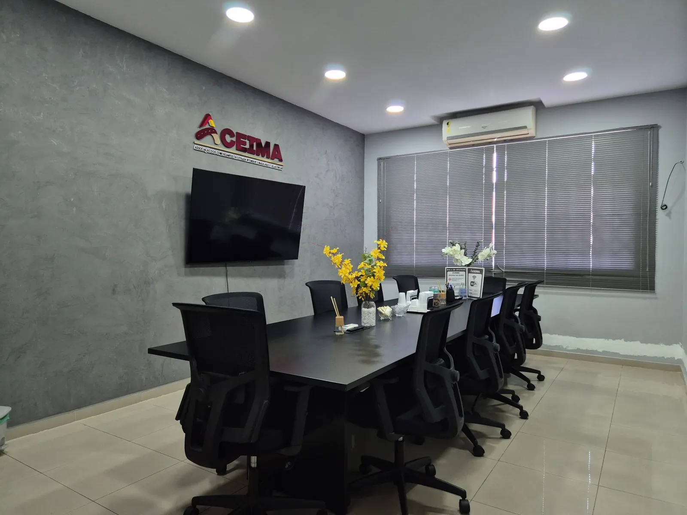

<!DOCTYPE html>
<html lang="pt-BR">
<head>
<meta charset="UTF-8">
<meta name="viewport" content="width=device-width, initial-scale=1">
<!-- endereços como /veiculo/123 não podem quebrar os caminhos relativos (logo, vídeo, fotos); do disco, fica como está -->
<script>if(location.protocol!=='file:'){const b=document.createElement('base');b.href='/';document.head.prepend(b)}</script>
<!-- ícone do site: a logo redonda da Intendente que o Luiz enviou em 07/10/2026 (original recortado em marca-nova/simbolo-redondo.png) -->
<link rel="icon" href="favicon.ico" sizes="16x16 32x32 48x48">
<link rel="icon" type="image/png" sizes="32x32" href="marca-nova/icone-32.png">
<link rel="icon" type="image/png" sizes="192x192" href="marca-nova/icone-192.png">
<link rel="apple-touch-icon" href="marca-nova/apple-touch-icon.png">
<title>ACEIMA | Intendente, Polo Comercial e Automotivo do Rio</title>
<meta name="description" content="A ACEIMA reúne as empresas da Estrada Intendente Magalhães desde 1998: lojas de veículos, serviços e comércio sob um mesmo padrão de qualidade e de atendimento.">
<link rel="preconnect" href="https://fonts.googleapis.com">
<link rel="preconnect" href="https://fonts.gstatic.com" crossorigin>
<link href="https://fonts.googleapis.com/css2?family=Outfit:wght@400;500;600;700;800;900&family=Figtree:wght@300;400;500;600;700;800&display=swap" rel="stylesheet">
<!-- os dados saem junto com o começo da página, sem esperar o resto do arquivo -->
<link rel="preload" href="/api/avaliacoes?path=avaliacoes" as="fetch" crossorigin>
<link rel="preload" href="/api/lojas?path=lojas&amp;site=1" as="fetch" crossorigin>
<link rel="preload" href="/api/veiculos?path=veiculos&amp;site=1" as="fetch" crossorigin>
<style>
/* ============ BASE: cópia do CSS dos mockups aprovados ============ */
*{margin:0;padding:0;box-sizing:border-box}
:root{--f1:Outfit,sans-serif;--f2:Figtree,sans-serif;--navy:#00091A;--gold:#C8862E;--gold2:#E8A048;--gold3:#F4B05C;--cl:#F6F4F1;--ink:#0B1A33;--mut:#5A6B85;--line:#E3DFDA;--ease:cubic-bezier(.2,.8,.2,1);--canto:clamp(28px,2.4vw,44px)}
body{background:var(--navy);color:var(--ink);font-family:var(--f1);-webkit-font-smoothing:antialiased}
img{display:block;max-width:100%}
button{font-family:inherit;cursor:pointer;border:0;background:none;color:inherit}
input,select,textarea{font-family:inherit}
a{color:inherit;text-decoration:none}
.wrap{width:100%;max-width:1780px;margin:0 auto;padding:0 60px}

/* fundo: vídeo de vidro em diagonal (mesmo dos mockups) */
.gl{position:relative;background:var(--navy);overflow:hidden;isolation:isolate}
.glc{position:relative;background:var(--cl);overflow:hidden;isolation:isolate}
video.luz{position:absolute;inset:0;width:100%;height:100%;object-fit:cover;pointer-events:none;border:0;display:block;z-index:0}
.gl>video.luz{opacity:.17;mix-blend-mode:screen;filter:brightness(.78) saturate(.9)}
.glc>video.luz{opacity:.07;mix-blend-mode:multiply;filter:saturate(.65)}
.gl.fix>video.luz{position:fixed}
.gl>*:not(.luz),.glc>*:not(.luz){position:relative;z-index:2}
/* se o vídeo não carregar, entra o quadro parado da mesma animação */
/* enquanto o vídeo não toca, o quadro da mesma animação corre na diagonal; quando o vídeo toca, ele assume */
.semvideo video.luz{opacity:0!important}
.semvideo .gl{background:#00091A url('fundo-animado-frame.jpg') 0% 0%/160% auto;animation:vidro 38s ease-in-out infinite alternate}
.semvideo .gl.fix{background-attachment:fixed}
@keyframes vidro{from{background-position:0% 0%}to{background-position:100% 100%}}
@media(prefers-reduced-motion:reduce){.semvideo .gl{animation:none}}

/* logo e menu no canto: mesma distância do topo e da lateral */
header{display:flex;align-items:center;justify-content:center;padding:32px 32px 20px}   /* computador: logo no centro, o menu fica embaixo */
/* logo do polo (Intendente) em todas as páginas; a da ACEIMA só na página da ACEIMA, no meio da mesma altura: nada abaixo muda de lugar entre as páginas */
header .lg{height:60px;width:auto;cursor:pointer}
header .lg-aceima{height:44px;margin:8px 0}   /* o png da ACEIMA tem 5px transparentes em cima e embaixo */
.btn{font-family:var(--f2);font-weight:600;font-size:.85rem;padding:12px 24px;border-radius:8px;background:linear-gradient(135deg,#C8862E,#F0AD57);color:#001128;border:0;white-space:nowrap}
a.btn{display:inline-block;text-align:center;line-height:normal}
.btn.d{background:#04142E;color:#fff}
.btn.o{background:transparent;color:var(--ink);border:1px solid #CFC8C0}
.gl .btn.o{color:#fff;border-color:rgba(255,255,255,.28)}
.kick{font-family:var(--f2);font-size:.7rem;font-weight:600;letter-spacing:2.6px;color:var(--gold);text-transform:uppercase}
.kick.c{color:var(--gold2)}
h1{font-size:3.9rem;font-weight:800;line-height:1.03;letter-spacing:-1.7px}
h2{font-size:2.5rem;font-weight:800;letter-spacing:-1px;line-height:1.08}
h3{font-size:1.1rem;font-weight:700}
p{font-family:var(--f2);font-weight:300;color:var(--mut);line-height:1.62;font-size:.95rem}
.gl p,.dark p{color:#b9c6da}
.gl h1,.gl h2{color:#fff}
.num b{font-size:2.1rem;font-weight:900;letter-spacing:-1.3px;display:block;line-height:1}
.num small{font-family:var(--f2);font-size:.72rem;color:var(--mut);font-weight:300}
.gl .num b{color:#fff}
.gl .num small,.dark .num small{color:#93a3bd}

/* filtros em linha */
.fbar{display:flex;align-items:center;gap:10px;flex-wrap:nowrap}
.fp{display:inline-flex;align-items:center;gap:9px;font-family:var(--f2);font-size:.83rem;padding:10px 16px;border-radius:99px;white-space:nowrap;cursor:pointer}
.fp.lite{background:#fff;border:1px solid var(--line);color:var(--ink)}
.fp.drk{background:rgba(255,255,255,.07);border:1px solid rgba(255,255,255,.13);color:#cfd9e8}
.fp.on{background:linear-gradient(135deg,#C8862E,#F0AD57);border-color:transparent;color:#001128;font-weight:600}
.fp input{background:none;border:0;outline:0;color:#fff;font-family:var(--f2);font-size:.83rem;width:190px}
.fp input::placeholder{color:#8a9bb5}
.drop{position:absolute;z-index:120;min-width:220px;max-height:340px;overflow:auto;background:#0A1A33;border:1px solid rgba(255,255,255,.13);border-radius:12px;padding:6px;box-shadow:0 20px 50px rgba(0,0,0,.45)}
.drop button{display:block;width:100%;text-align:left;font-family:var(--f2);font-size:.83rem;color:#cfd9e8;padding:9px 12px;border-radius:8px}
.drop button:hover,.drop button.on{background:rgba(244,176,92,.14);color:var(--gold3)}
/* barra de rolagem da lista no tema dela (era a branca do sistema, com as setas quadradas nas pontas) */
.drop::-webkit-scrollbar{width:12px}
.drop::-webkit-scrollbar-track{background:transparent;margin:8px 0}
.drop::-webkit-scrollbar-thumb{background:rgba(255,255,255,.2) padding-box;border:4px solid transparent;border-radius:99px}
.drop::-webkit-scrollbar-thumb:hover{background-color:rgba(244,176,92,.55)}
@supports not selector(::-webkit-scrollbar){.drop{scrollbar-width:thin;scrollbar-color:rgba(255,255,255,.25) transparent}}

/* estoque: topo centralizado (pedido do Luiz, 30/09/2026) */
.est-top{text-align:center;margin-bottom:clamp(10px,.9vw,18px);container-type:inline-size}
/* título numa linha só, no maior tamanho que cabe (pedido do Luiz, 30/09/2026); 25,9 é a largura do texto padrão por px de fonte.
   Texto editado mais comprido: caberTitulo() diminui até caber */
.est-top h2{margin:clamp(0px,.2vw,4px) auto 0;color:#fff;font-size:clamp(2rem,3.2vw,3.6rem);font-size:calc(100cqw / 25.9);letter-spacing:-.03em;line-height:1.06;white-space:nowrap}
.est-f .fbar{flex-wrap:wrap;justify-content:center;overflow:visible}
/* filtro escolhido: o botão cresce ou diminui até o tamanho novo, e o texto novo aparece por cima (nada seco) */
@keyframes fpTexto{from{opacity:0;transform:translateY(5px)}}
.fp.fp-anda>*{animation:fpTexto .32s var(--ease) both}
.drop{animation:dropEntra .2s var(--ease) both;transform-origin:top left}
.drop.saindo{animation:dropSai .14s ease-in both;pointer-events:none}
@keyframes dropEntra{from{opacity:0;transform:translateY(-6px) scale(.98)}}
@keyframes dropSai{to{opacity:0;transform:translateY(-4px) scale(.98)}}
#mos.troca{animation:mosEntra .4s var(--ease) both}
@keyframes mosEntra{from{opacity:0;transform:translateY(10px)}}
/* contador de anúncios ("1 de 1.427"), na pílula do menu: no celular embaixo, parado em cima do rodapé; no computador, em pé na lateral */
.est-cont-a{height:0}
.est-cont{position:fixed;z-index:40;top:50%;right:calc(max(60px,(100vw - 1780px) / 2 + 60px) / 2);transform:translate(50%,-50%) rotate(-90deg);display:flex;align-items:center;height:42px;padding:5px;border-radius:999px;
  background:#fff;border:1px solid #E5E5E5;box-shadow:0 20px 25px -5px rgba(0,0,0,.1),0 8px 10px -6px rgba(0,0,0,.1);white-space:nowrap;transition:opacity .3s}
.est-cont>span{display:flex;align-items:center;gap:9px;height:30px;padding:0 13px 0 11px;border-radius:999px;background:rgba(23,23,23,.1);color:#171717;font:500 .8rem/1 var(--f2);font-variant-numeric:tabular-nums}
.est-cont svg{flex:none;width:18px;height:18px}
.est-cont b{display:inline-block;font-weight:600}
.est-cont b.sobe{animation:contSobe .22s var(--ease)}
@keyframes contSobe{from{opacity:0;transform:translateY(45%)}}
.est-cont.vazio{opacity:0;pointer-events:none}
/* anúncios no estilo do modelo Photography Portfolio (21st.dev, @ecarry), pedido do Luiz em 30/09/2026: só as fotos do modelo.
   Foto em 4:3, exata como a loja enviou (sem zoom). Etiqueta no canto de cima com o modelo e o ano, recortada na foto como no modelo,
   e o preço no canto de baixo, do mesmo jeito. Com o mouse, a foto desfoca, a etiqueta mostra o nome completo e a seta,
   e aparece o que não está no nome (km, câmbio, combustível e a loja).
   Os anúncios ficam direto sobre o fundo em movimento (pedido do Luiz, 30/09/2026): as etiquetas são um recorte de verdade na foto
   (clip-path), então o fundo aparece atrás delas. O contorno da foto é um caminho com arcos desenhado no JS (recorteAnc), com o
   tamanho de cada etiqueta e da foto (ResizeObserver, também enquanto o nome é escrito): a borda fica lisa em qualquer escala de tela.
   Antes era uma máscara de gradientes, que deixava os cantos em degrau (pixels quadrados) e um fio claro na beirada em escala de 125% */
.est-lista{flex:1;padding:clamp(4px,.6vw,12px) 0 60px}
.ancs{display:grid;grid-template-columns:repeat(4,minmax(0,1fr));gap:12px}
.anc{display:block;position:relative;cursor:pointer;outline:0}
.anc-f{--r:18px;position:relative;aspect-ratio:4/3;border-radius:12px;overflow:hidden;background:#0A1A33}
.anc-f img{position:absolute;inset:0;width:100%;height:100%;object-fit:cover;opacity:0;transition:opacity .5s ease-in-out,filter .3s ease-out,transform .3s ease-out}
.anc-f img.ok{opacity:1}
.anc-f img.ja{transition:filter .3s ease-out,transform .3s ease-out}   /* já estava carregada: aparece sem piscar */
.anc-t,.anc-p{position:absolute;z-index:2;font:600 .875rem/1.3 var(--f2)}
.anc-t{top:0;left:0;max-width:calc(100% - 40px);padding:8px 16px 12px;color:#fff}
.anc-p{right:0;bottom:0;padding:12px 16px 8px;color:var(--gold3);font-weight:700}
.anc-l{display:none}
/* a seta anda junto com a última letra escrita: ela e a última palavra ficam num grupo que não quebra de linha (versão sem JS) */
.anc-u{white-space:nowrap}
/* sendo escrito (digitar): as linhas já vêm medidas, então nada quebra sozinho, e cada letra nova entra em fusão */
.anc-l.dg{white-space:nowrap}
.anc-l .lt{animation:letra .32s ease-out both}
@keyframes letra{from{opacity:0}}
/* medição das linhas do nome completo: com lugar para a seta (21px) no fim de cada linha */
.anc-t.mede{padding-right:37px}
.anc-t.mede .anc-c{display:none}
.anc-t.mede .anc-l{display:inline;white-space:normal}
.anc-s{display:inline-block;width:21px;overflow:hidden;vertical-align:-2px;animation:setaEntra .3s ease-out both}
.anc-s svg{display:block;margin-left:7px}
@keyframes setaEntra{from{width:0}}
.anc-i{position:absolute;inset:0;z-index:1;display:flex;flex-wrap:wrap;align-content:center;justify-content:center;gap:6px;padding:52px 28px;opacity:0;transform:translateY(6px);transition:opacity .3s ease-out,transform .3s ease-out;pointer-events:none}
.anc-i span{padding:7px 12px;border-radius:99px;background:rgba(0,9,26,.74);border:1px solid rgba(255,255,255,.14);color:#fff;font:500 .8rem/1 var(--f2);white-space:nowrap}
@media (hover:hover){
  .anc:hover .anc-f img,.anc:focus-visible .anc-f img{filter:blur(4px);transform:scale(1.04)}
  .anc:hover .anc-c,.anc:focus-visible .anc-c{display:none}
  .anc:hover .anc-l,.anc:focus-visible .anc-l{display:inline}
  .anc:hover .anc-i,.anc:focus-visible .anc-i{opacity:1;transform:none}
}
/* vivo: o anúncio com o mouse em cima ou, sem mouse, o do meio da tela (sem desfocar a foto) */
.anc.vivo .anc-c{display:none}
.anc.vivo .anc-l{display:inline}
.anc.vivo .anc-i{opacity:1;transform:none}
@media (max-width:1399px){.ancs{grid-template-columns:repeat(3,minmax(0,1fr))}}

/* caminhos da home */
/* o mouse destaca, o clique leva para a página; a altura total não muda, então nada acima se mexe */
.inn{display:flex;flex-direction:column;gap:28px}
.inn h1{margin:18px 0;color:#fff;max-width:1080px}
.inn .sub{font-size:1.2rem;max-width:740px}
/* título da home: cada parte na sua linha e com a sua própria altura, sem o respiro da linha do h1; "desde 1998" fica encostado */
.tit>[data-t]{display:block;width:fit-content;line-height:1.05}
.tit>[data-t]+[data-t]{margin-top:-.1em}
.tit>[data-t="inicio.titulo-dourado"]{background:linear-gradient(100deg,#F6C078,#C8862E);-webkit-background-clip:text;background-clip:text;color:transparent}
.inn .tit{margin:.12em 0 -.055em}   /* o título fica no meio: a mesma distância até "desde 1998" e até o subtítulo */
.vti{display:block;padding:12px 0 12px 30px;position:relative;cursor:pointer}
.vti+.vti{background:linear-gradient(90deg,transparent,rgba(255,255,255,.16),transparent) top/100% 1px no-repeat}
.vti::before{content:'';position:absolute;left:0;top:10px;bottom:10px;width:2px;background:var(--gold2);transform:scaleY(0);transition:transform .45s var(--ease)}
.vti.on::before{transform:none}
.vti h3{font-size:1.95rem;font-weight:800;letter-spacing:-.6px;color:#445773;line-height:1.1;transition:font-size .45s var(--ease),color .3s}
.vti.on h3{font-size:2.75rem;color:#fff}
.vti .d{display:grid;grid-template-rows:0fr;opacity:0;transform:translateY(10px);transition:grid-template-rows .45s var(--ease),opacity .35s,transform .45s var(--ease)}
.vti .d>div{overflow:hidden;min-height:0}
.vti.on .d{grid-template-rows:1fr;opacity:1;transform:none}
.vti .d p{padding-top:10px;font-size:1.08rem}
.hero .sub,.vti .d p,.hs p{line-height:1.3}   /* textos de apoio da home: linhas mais juntas */
/* imagem de cada caminho, misturada ao fundo animado */
.hero{min-height:calc(100vh + var(--canto));padding-bottom:var(--canto)}
.gl>.himg{position:absolute;inset:0;z-index:1;background:right center/cover no-repeat;mix-blend-mode:screen;opacity:0;transform:scale(1.06);pointer-events:none;
  transition:opacity .7s,transform 1.2s var(--ease)}
.gl>.himg.on{opacity:.24;transform:none}   /* bem discretas (pedido do Luiz, 29/09/2026) */

/* faixa de avaliações da home: passa sozinha e para com o mouse em cima */
.meio{flex:1;display:flex;flex-direction:column;justify-content:center}
.av{padding:8px 0 96px}   /* 8px: o mesmo respiro do cabeçalho (20px) menos o da última categoria (12px) */
.av .kick{text-align:center;margin-bottom:10px}
.av.espera{visibility:hidden}
.av.chegou{animation:avChega .6s ease}
@keyframes avChega{from{opacity:0}}
.av-janela{overflow:hidden;-webkit-mask-image:linear-gradient(90deg,transparent,#000 8%,#000 92%,transparent);mask-image:linear-gradient(90deg,transparent,#000 8%,#000 92%,transparent)}
.av-trilho{--g:12px;display:flex;gap:var(--g);width:max-content;animation:rolar linear infinite}
.av-trilho>div{display:contents}
.av:hover .av-trilho{animation-play-state:paused}
@keyframes rolar{to{transform:translateX(calc(-50% - var(--g) / 2))}}
@media(prefers-reduced-motion:reduce){.av-trilho{animation:none}}
.avc{display:block;width:280px;flex:none;padding:12px 14px;border-radius:18px;background:#fff;box-shadow:0 12px 30px rgba(0,0,0,.28);color:var(--ink)}
.avt{display:flex;align-items:center;gap:10px}
.avf{width:36px;height:36px;border-radius:99px;flex:none;object-fit:cover;display:grid;place-items:center;background:#F6F4F1;color:#C8862E;font-weight:800;font-size:.72rem}
.avt>div{min-width:0}
.avt b,.avt small{display:block;white-space:nowrap;overflow:hidden;text-overflow:ellipsis}   /* nome numa linha: todos os cartões com a mesma altura */
.avt b{font-size:.82rem;font-weight:700}
.avt small{font-family:var(--f2);font-size:.68rem;color:var(--mut)}
.avq{margin-left:auto;align-self:flex-start;font:900 1.9rem/.8 var(--f1);color:#E8A048}
.avc .avx{margin-top:8px;font-size:.75rem;font-weight:400;line-height:1.45;color:#3B4A63;display:-webkit-box;-webkit-line-clamp:2;-webkit-box-orient:vertical;overflow:hidden}
/* o Google exige "Google Maps" quando as avaliações aparecem fora de um mapa: peso 400, de 12 a 16px, branco */
.av-g{display:block;text-align:right;padding:0 60px;margin-top:14px;font:400 12px/18px Roboto,Arial,sans-serif;color:#fff}

/* início: bloco sobre a ACEIMA e parte do empresário, no estilo do NexStudio (tailgrids), a pedido do Luiz (29/09/2026):
   títulos finos com o fim em itálico, muito respiro, números grandes e o painel escuro de cantos redondos */
.sob{position:relative;background:var(--cl);padding-top:clamp(72px,7vw,136px);margin-top:calc(-1 * var(--canto));border-radius:var(--canto) var(--canto) 0 0}
.sob-a{display:grid;grid-template-columns:1fr 1fr;column-gap:clamp(40px,6vw,120px);padding-bottom:clamp(72px,7vw,136px)}
.sob-a>.kick{grid-column:1/-1;margin-bottom:16px}
/* as duas colunas começam e terminam na mesma linha: à esquerda, título em cima e texto embaixo; à direita, texto em cima e números embaixo */
.sob-e{display:flex;flex-direction:column;justify-content:space-between}
.sob-d{display:flex;flex-direction:column;justify-content:space-between;padding:.21vw 0 3.5px}   /* acerto fino: a tinta do texto na linha da tinta do título, e a base dos rótulos na base da última linha */
.sob h2,.emp h2{font-size:clamp(2.4rem,3.3vw,4rem);font-weight:400;letter-spacing:-.04em;line-height:1.04;color:var(--ink)}
.sob h2 em,.emp h2 em{font-style:italic}
.sob h2 em{color:var(--gold)}
.sob .lead{margin-top:clamp(20px,1.7vw,32px);font-size:clamp(1.12rem,1.3vw,1.55rem);font-weight:400;color:var(--ink);line-height:1.42}
.sob-d p{font-size:clamp(.95rem,1vw,1.15rem);line-height:1.55}
.sob p b{font-weight:500;color:var(--ink)}
.sob-n{display:grid;grid-template-columns:1fr 1fr;gap:24px;margin-top:clamp(36px,3.4vw,64px)}
.sob-n b{display:block;font-size:clamp(3.6rem,7vw,5.6rem);font-weight:400;letter-spacing:-.04em;line-height:1;color:var(--ink)}
.sob-n>div>span{display:block;margin-top:14px;font-family:var(--f2);font-size:clamp(.8rem,1vw,1.2rem);font-weight:600;letter-spacing:.2em;line-height:1.2;text-transform:uppercase;color:var(--mut)}
.emp{background:var(--navy);border-radius:var(--canto) var(--canto) 0 0;padding:clamp(64px,5.8vw,112px) 0 calc(clamp(64px,5.8vw,112px) + var(--canto))}
.hs{margin-top:calc(-1 * var(--canto));border-radius:var(--canto) var(--canto) 0 0}
.hs h2{margin:14px 0 16px;font-size:2.7rem}
.hs p{font-size:1rem;max-width:470px}
.hs .btns{display:flex;gap:12px;margin-top:26px}
/* computador: o título e os textos ocupam o lado da vitrine (pedido do Luiz, 30/09/2026); o título tem 2 linhas até em 1101px */
@media (min-width:761px){
  .hs .kick{font-size:clamp(.7rem,.8vw,.95rem)}
  .hs h2{margin:clamp(14px,1.1vw,22px) 0 clamp(16px,1.3vw,26px);font-size:clamp(2.7rem,4.2vw,5.2rem)}
  .hs p{font-size:clamp(1rem,1.2vw,1.45rem);max-width:30em}
  .hs .btns{margin-top:clamp(26px,2.2vw,42px)}
  .hs .btn{font-size:clamp(.85rem,.95vw,1.1rem);padding:clamp(12px,1vw,18px) clamp(24px,1.9vw,36px);border-radius:clamp(8px,.6vw,11px)}
}
.emp h2{color:#fff}
.emp h2 em{color:var(--gold3)}
/* título e texto no centro; o texto vai de ponta a ponta, na largura dos benefícios */
.emp-t{text-align:center}
.emp-t p{margin-top:clamp(16px,1.4vw,26px);color:#93A3B9;font-size:clamp(1rem,1.1vw,1.25rem);line-height:1.55;text-wrap:pretty}   /* pretty: sem palavra sozinha na última linha */
/* botão largo, no centro, embaixo dos benefícios: ocupa as duas colunas do meio */
.emp-4 .btnp{grid-column:2/4;justify-content:center;margin-top:clamp(12px,1.4vw,28px);padding:clamp(18px,1.3vw,24px) 30px;font-size:clamp(1rem,1.05vw,1.2rem)}
.btnp{display:inline-flex;align-items:center;gap:12px;flex:none;padding:17px 30px;border-radius:99px;background:linear-gradient(135deg,#C8862E,#F0AD57);color:#001128;font:600 .95rem/1 var(--f2);white-space:nowrap}   /* botões e links sem caixa alta (pedido do Luiz, 30/09/2026) */
.btnp svg{transition:transform .3s var(--ease)}
.btnp:hover svg{transform:translate(2px,-2px)}
.emp-4{--is:clamp(44px,3vw,58px);display:grid;grid-template-columns:repeat(4,1fr);gap:clamp(28px,2.8vw,56px);margin-top:clamp(56px,5vw,96px)}
.emp-i{display:block;width:var(--is);height:var(--is)}
.emp-a{width:calc(var(--is) * 1.18);background:linear-gradient(#F4B05C,rgba(200,134,46,.3));-webkit-mask:url(marca-nova/simbolo-a-contorno.png) 0 0/100% 100% no-repeat;mask:url(marca-nova/simbolo-a-contorno.png) 0 0/100% 100% no-repeat}
.emp-4 h3{margin-top:clamp(22px,1.7vw,32px);font-size:clamp(1.12rem,1.25vw,1.5rem);font-weight:400;letter-spacing:-.01em;line-height:1.2;color:#fff}
.emp-4 p{margin-top:12px;font-size:clamp(.9rem,.92vw,1.06rem);line-height:1.55;color:#93A3B9}

/* A ACEIMA: história com os benefícios ao lado; contato numa folha escura que sobe por cima dela, como o bloco do empresário da home */
.ct{position:relative;z-index:3;background:var(--navy);margin-top:calc(-1 * var(--canto));border-radius:var(--canto) var(--canto) 0 0;padding:clamp(64px,5.8vw,112px) 0 clamp(56px,5vw,96px)}
.ct h2{margin-top:16px;font-size:clamp(2.4rem,3.3vw,4rem);font-weight:400;letter-spacing:-.04em;line-height:1.04;color:#fff}
.ct h2 em{display:block;font-style:italic;color:var(--gold3)}
.ct-b{display:flex;gap:12px;flex-wrap:wrap}
.btno{display:inline-flex;align-items:center;gap:12px;flex:none;padding:16px 29px;border-radius:99px;border:1px solid rgba(255,255,255,.28);color:#fff;font:600 .95rem/1 var(--f2);white-space:nowrap;transition:border-color .2s,color .2s}
.btno:hover{border-color:var(--gold3);color:var(--gold3)}
.btno svg{transition:transform .3s var(--ease)}
.btno:hover svg{transform:translate(2px,-2px)}

/* vitrine da home: cards flutuantes em duas colunas */
.stag{display:grid;grid-template-columns:1fr 1fr;gap:18px;align-items:start}
.stag .col2{margin-top:46px}
.stag .c{display:block;border-radius:16px;overflow:hidden;box-shadow:0 16px 36px rgba(11,26,51,.13);background:#fff;border:1px solid var(--line);position:relative;margin-bottom:18px;cursor:pointer}
.stag .c .ph{width:100%;overflow:hidden;position:relative}
.stag .c img{position:absolute;inset:0;width:100%;height:100%;object-fit:cover;transform:scale(1.26)}
.stag .c.perfeita img{transform:none}   /* foto da vitrine (vitrine.json): perfeita, sem zoom, o carro aparece inteiro; o zoom só fica se a vitrine não carregar */
.stag .lb{position:absolute;left:10px;bottom:10px;background:rgba(6,16,32,.86);color:#fff;font-family:var(--f2);font-size:.72rem;padding:5px 11px;border-radius:99px;display:flex;gap:8px;align-items:center}
.stag .lb b{color:#F4B05C;font-weight:700}

/* associados (pedido do Luiz, 07/10/2026): o filtro é um botão só, como o menu do celular (mostra a escolha e, tocando, as outras
   opções); a estrada com as lojas tem os pontos no meio dela e as lojas das pontas no começo e no fim da linha do texto, com a mesma
   distância entre todas; a lista fica em três colunas, da melhor nota no Google para a menor; a loja tocada abre embaixo, numa folha
   azul como a da página do carro (no celular, logo abaixo da linha tocada). Os toques não desenham a página de novo: o fundo não recomeça */
.as3{flex:1;padding-top:clamp(20px,1.6vw,30px);padding-bottom:clamp(48px,4vw,80px)}
.as3-topo{display:flex;align-items:flex-end;justify-content:space-between;gap:30px}
.as3-topo h2{font-size:clamp(1.8rem,2.2vw,2.6rem)}
/* filtro num botão só: fechado mostra a escolha; aberto, as três opções, cada uma sempre no seu lugar (o menu só cresce para baixo) */
.as3-cw{position:relative;flex:none;width:clamp(220px,15vw,260px);height:48px}   /* guarda o lugar do botão fechado: abrir não empurra nada */
.as3-cat{position:absolute;z-index:30;top:0;left:0;right:0;display:flex;flex-direction:column;padding:5px;border-radius:24px;background:#fff;border:1px solid #E5E5E5;box-shadow:0 20px 25px -5px rgba(0,0,0,.1),0 8px 10px -6px rgba(0,0,0,.1)}
.as3-cat button{display:grid;grid-template-rows:0fr;padding:0 14px;border-radius:999px;opacity:0;color:#737373;font:500 .9rem/18px var(--f2);text-align:left;transition:grid-template-rows .35s var(--ease),padding .35s var(--ease),opacity .25s,background-color .2s,color .2s}
.as3-cat button>span{display:flex;align-items:center;gap:8px;min-height:0;overflow:hidden;white-space:nowrap}
.as3-cat button b{margin-left:auto;font-weight:600}
.as3-cat button svg{flex:none;width:15px;height:15px;transition:transform .3s var(--ease)}
.as3-cat button:not(.on) svg{visibility:hidden}
.as3-cat button.on,.as3-cat.aberto button{grid-template-rows:1fr;padding:9px 14px;opacity:1}
.as3-cat button:hover{background:#F5F5F5;color:#171717}
.as3-cat button.on{background:rgba(23,23,23,.1);color:#171717}
.as3-cat.aberto button.on svg{transform:rotate(180deg)}
/* a estrada: cada loja com o nome, o ponto (no meio da faixa) e o número; as das pontas encostam no começo e no fim da linha do texto */
.eixo{--et:18px;--ep:10px;--eo:16px;--ea:3px;margin:clamp(22px,2vw,36px) 0 clamp(16px,1.6vw,28px)}
.eixo-ms{position:relative;display:flex;justify-content:space-between;gap:16px}
.eixo-ms::before,.eixo-ms::after{content:'';position:absolute;left:0;right:0}
.eixo-ms::before{top:calc(var(--et) + var(--eo) / 2 + var(--ea) - 3px);height:6px;border-radius:99px;background:#E0DAD2}
.eixo-ms::after{top:calc(var(--et) + var(--eo) / 2 + var(--ea) - 1px);height:2px;background:repeating-linear-gradient(90deg,#fff 0 14px,transparent 14px 28px)}
.eixo .m{position:relative;z-index:1;display:flex;flex-direction:column;align-items:center;min-width:0;cursor:pointer}
.eixo .m .t{display:block;max-width:160px;height:var(--et);font:400 .68rem/var(--et) var(--f2);color:#8A8178;white-space:nowrap;overflow:hidden;text-overflow:ellipsis;transition:color .2s}
.eixo .m .p{box-sizing:content-box;width:var(--ep);height:var(--ep);margin:calc((var(--eo) - var(--ep)) / 2) 0;border-radius:99px;background:#0B1A33;border:var(--ea) solid var(--cl);transition:width .25s var(--ease),height .25s var(--ease),margin .25s var(--ease)}
.eixo .m .nn{display:block;margin-top:4px;font:400 .66rem/1.2 var(--f2);color:#A9A198}
.eixo .m:hover .t{color:#0B1A33}
.eixo .m.on .t{color:#0B1A33;font-weight:700}
.eixo .m.on .p{width:var(--eo);height:var(--eo);margin:0;background:linear-gradient(135deg,#C8862E,#F0AD57)}
/* a lista: três colunas (duas no tablet), lidas de cima para baixo */
.lista{display:grid;grid-template-columns:repeat(3,minmax(0,1fr));grid-template-rows:repeat(var(--l3),auto);grid-auto-flow:column;gap:3px clamp(22px,2.2vw,44px)}
.row{display:flex;align-items:center;gap:10px;width:100%;height:34px;padding:5px 11px;border-radius:8px;border:1px solid transparent;text-align:left;cursor:pointer;transition:background-color .2s,border-color .2s,box-shadow .2s}
.row:hover{background:rgba(255,255,255,.6)}
.row.on{background:#fff;border-color:var(--line);box-shadow:0 5px 16px rgba(11,26,51,.07)}
.row .i{font-family:var(--f2);font-size:.64rem;color:#A9A198;width:18px;flex:none}
.row .nm{font-weight:600;font-size:.87rem;flex:1;min-width:0;white-space:nowrap;overflow:hidden;text-overflow:ellipsis}
.row.on .nm{font-weight:800}
.row .g{font-family:var(--f2);font-size:.74rem;font-weight:600;flex:none}
.row .g.sem{color:#A9A198;font-weight:400}
.row .g span{color:#C8862E}
.row .a{font-family:var(--f2);font-size:.72rem;color:var(--mut);width:116px;flex:none;text-align:right;white-space:nowrap;overflow:hidden;text-overflow:ellipsis}
/* a loja tocada: folha azul embaixo da lista, no padrão da página do carro (o nome grande, os números ao lado e a linha da loja) */
.as3-ct{margin-top:0}
.as3-ct-t{display:grid;grid-template-columns:minmax(0,1fr) auto;align-items:end;gap:28px clamp(36px,3.6vw,68px)}
.as3-v h3{font:700 clamp(2.4rem,4vw,4.8rem)/1.02 var(--f1);letter-spacing:-.045em;color:#fff}
.as3-v p{margin-top:clamp(10px,.9vw,16px);color:#93A3B9;font-size:clamp(1rem,1.1vw,1.25rem);line-height:1.4}
.as3-n{display:flex;gap:clamp(32px,4vw,72px)}
.as3-n b{display:block;font:600 clamp(2rem,3vw,3.4rem)/1 var(--f1);letter-spacing:-.03em;color:#fff}
.as3-n b i{margin-left:.12em;font-style:normal;font-size:.62em;color:var(--gold3)}
.as3-n>div>span{display:block;margin-top:10px;font:600 clamp(.6rem,.62vw,.72rem)/1.3 var(--f2);letter-spacing:.2em;text-transform:uppercase;color:var(--gold3)}
.as3-n p{max-width:440px;color:#B9C6DA;font-size:clamp(.95rem,1vw,1.1rem);line-height:1.55}

/* páginas de leitura */
.bene{display:grid;grid-template-columns:1fr 1fr;gap:20px 34px}
.bene>div{border-top:2px solid #0B1A33;padding-top:12px}
.bene h3{font-size:1rem}
.bene p{font-size:.86rem;margin-top:5px}
.campo label{display:block;font-family:var(--f2);font-size:.72rem;color:#9fb0c9;margin-bottom:6px}
.campo input,.campo select{width:100%;height:44px;border-radius:9px;background:rgba(255,255,255,.06);border:1px solid rgba(255,255,255,.14);padding:0 14px;font-family:var(--f2);font-size:.85rem;color:#fff;outline:0}
.campo input::placeholder{color:#61718c}
.campo input.bad{border-color:#e0685a}
.campo select option{color:#0B1A33}
.foto{background:#E9E4DD;display:grid;place-items:center;color:#A9A198;font-family:var(--f2);font-size:.72rem;letter-spacing:1px;text-transform:uppercase}
.aviso{background:#fff;border:1px dashed #D6CEC4;border-radius:12px;padding:13px 20px;font-family:var(--f2);font-size:.85rem;color:var(--mut)}
.aviso b{color:#0B1A33}
.parc{display:grid;grid-template-columns:1.25fr .75fr;gap:46px;padding:30px 0;border-top:1px solid var(--line)}
.parc .chips{display:flex;flex-wrap:wrap;gap:8px;margin-top:14px}
.parc .fp{cursor:default;font-size:.78rem;padding:7px 13px}
.parc .inf{font-family:var(--f2);font-size:.85rem;color:var(--mut);line-height:1.9}
.parc .inf b{color:var(--ink);font-weight:600}

/* veículo, no estilo do modelo USD Halo (21st.dev, @mohammadshehadeh), pedido do Luiz em 30/09/2026: a primeira foto em destaque,
   com a logo da loja num canto levemente esfumado; embaixo, o nome em duas linhas e, ao lado, a ficha; depois as outras fotos,
   as características e a descrição da loja; por fim o valor, a loja e os contatos, numa folha azul que sobe por cima */
.vp{padding:clamp(20px,1.6vw,30px) 0 calc(clamp(72px,6.4vw,124px) + var(--canto))}
/* voltar: sem caixa alta e com a seta na cor do texto (pedido do Luiz, 30/09/2026) */
.vp-volta{display:inline-flex;align-items:center;gap:8px;margin-bottom:clamp(14px,1.2vw,22px);font:500 clamp(.9rem,.9vw,1.05rem)/1.2 var(--f2);color:#00091A;cursor:pointer}
.vp-volta svg{transition:transform .3s var(--ease)}
.vp-volta:hover svg{transform:translateX(-3px)}
/* foto em destaque: moldura 4:3 com a foto exata da loja, inteira, sem corte, sem zoom e sem nada em volta (pedido do Luiz, 30/09/2026).
   O fundo claro só aparece enquanto a foto carrega */
.vp-hero{position:relative;width:100%;aspect-ratio:4/3;border-radius:clamp(16px,1.4vw,26px);overflow:hidden;background:#E9E4DD;cursor:zoom-in;isolation:isolate}
.vp-hero.ok{background:none}
.vp-hi{display:block;width:100%;height:100%;object-fit:contain}
/* a logo da loja no canto de cima, sobre um esfumado bem leve: escuro para logo clara, claro para logo escura.
   No computador, com a metade do tamanho de antes (pedido do Luiz, 01/10/2026) */
.vp-lj{position:absolute;inset:0;z-index:2;pointer-events:none;opacity:0;transition:opacity .4s}
.vp-lj.pronta{opacity:1}
.vp-lj::before{content:'';position:absolute;left:0;top:0;width:min(320px,32%);height:min(190px,30%);background:radial-gradient(farthest-side at 0 0,var(--esf),transparent)}
.vp-lj.escuro{--esf:rgba(0,9,26,.5)}
.vp-lj.claro{--esf:rgba(246,244,241,.72)}
.vp-lj img{position:absolute;left:clamp(14px,1.5vw,28px);top:clamp(12px,1.35vw,26px);width:auto;height:auto;max-width:clamp(65px,7vw,130px);max-height:clamp(22px,2.2vw,40px)}
.vp-m{display:grid;grid-template-columns:1fr 1fr;gap:40px clamp(40px,5vw,96px);margin-top:clamp(48px,5vw,96px)}
.vp-m h1{font-size:clamp(2.5rem,3.6vw,4.4rem);font-weight:600;letter-spacing:-.045em;line-height:1.02;color:var(--ink)}   /* nome com mais peso (pedido do Luiz, 30/09/2026) */
.vp-m h1>span{display:block}
.vp-m h1 .vp-n2{margin-top:.3em;font-size:.56em;font-weight:500;letter-spacing:-.025em;line-height:1.15;color:var(--mut)}
.vp-pill{display:inline-flex;align-items:center;gap:14px;margin-top:clamp(24px,2.2vw,40px);padding:7px 7px 7px 26px;border-radius:99px;background:var(--navy);color:#fff;font:500 clamp(.9rem,.95vw,1.05rem)/1 var(--f2);cursor:pointer}
.vp-pill i{display:grid;place-items:center;width:clamp(36px,2.6vw,44px);aspect-ratio:1;border-radius:99px;background:#fff;color:var(--navy)}
.vp-pill svg{transition:transform .3s var(--ease)}
.vp-pill:hover svg{transform:translateY(2px)}
.vp-ficha{display:grid;grid-template-columns:1fr 1fr;gap:clamp(22px,2vw,36px) clamp(24px,3vw,56px);align-content:start}
.vp-ficha>div{border-top:1px solid var(--line);padding-top:clamp(12px,1vw,18px)}
.vp-ficha>div>span{display:block;font:600 clamp(.66rem,.68vw,.8rem)/1.2 var(--f2);letter-spacing:.2em;text-transform:uppercase;color:var(--gold)}
.vp-ficha b{display:block;margin-top:8px;font:300 clamp(1.5rem,2.2vw,2.6rem)/1.15 var(--f2);letter-spacing:-.02em;color:#3E4C62}
/* computador: a foto quase da largura toda e, ao lado, numa coluna estreita, o nome, a ficha (um item embaixo do outro) e o botão
   (pedido do Luiz, 01/10/2026). A coluna tem a altura da foto: o topo das letras do nome na linha de cima da foto (-.16em: a folga
   da fonte acima das letras) e o botão na linha de baixo; os itens da ficha dividem o meio em faixas iguais, sem sobrar espaço vazio */
@media (min-width:1101px){
  .vp-topo{display:grid;grid-template-columns:minmax(0,1fr) clamp(250px,24vw,460px);gap:clamp(30px,2.6vw,52px);align-items:start}
  .vp-m{align-self:stretch;display:flex;flex-direction:column;gap:clamp(18px,1.5vw,28px);margin:0}
  .vp-m>div:first-child{display:contents}
  .vp-m h1{margin-top:-.16em;font-size:clamp(1.7rem,2.4vw,3rem)}
  .vp-ficha{order:1;flex:1;display:flex;flex-direction:column;gap:0}
  .vp-ficha>div{flex:1;display:flex;flex-direction:column;justify-content:center;padding:clamp(10px,.9vw,16px) 0;border-top-color:rgba(11,26,51,.11)}
  .vp-ficha>div:last-child{border-bottom:1px solid rgba(11,26,51,.11)}
  .vp-ficha b{margin-top:clamp(4px,.45vw,8px);font-size:clamp(1.35rem,2.2vw,2.75rem)}
  .vp-pill{order:2;align-self:flex-start;margin-top:0}
}
/* as outras fotos: 4 por vez (2 no celular), passando para o lado; "Ver todas", bem discreto, abre a grade com todas */
.vp-g{--gg:clamp(10px,.9vw,16px);--gn:4;margin-top:clamp(48px,4.6vw,88px)}
.vp-gw{position:relative}
.vp-gt{display:grid;grid-auto-flow:column;grid-auto-columns:calc((100% - (var(--gn) - 1) * var(--gg)) / var(--gn));gap:var(--gg);overflow-x:auto;overscroll-behavior-x:contain;scroll-snap-type:x mandatory;scrollbar-width:none;border-radius:clamp(12px,1vw,18px)}
.vp-gt::-webkit-scrollbar{display:none}
.vp-g.todas .vp-gt{grid-auto-flow:row;grid-template-columns:repeat(var(--gn),minmax(0,1fr));overflow:visible;border-radius:0}
.vp-f{display:block;position:relative;aspect-ratio:4/3;border-radius:clamp(12px,1vw,18px);overflow:hidden;background:#E9E4DD;cursor:zoom-in;scroll-snap-align:start}
.vp-f img{width:100%;height:100%;object-fit:cover;opacity:0;transition:opacity .5s ease-in-out,transform .5s var(--ease)}
.vp-f img.ok{opacity:1}
.vp-f:hover img{transform:scale(1.03)}
.vp-ga{position:absolute;top:50%;z-index:2;display:grid;place-items:center;width:clamp(40px,3vw,52px);height:clamp(40px,3vw,52px);margin-top:calc(clamp(40px,3vw,52px) / -2);border-radius:99px;background:#fff;color:var(--ink);box-shadow:0 10px 26px rgba(11,26,51,.18);transition:opacity .25s,transform .25s var(--ease)}
.vp-ga:hover{transform:scale(1.07)}
.vp-gp{left:clamp(10px,1vw,18px)}
.vp-gn{right:clamp(10px,1vw,18px)}
.vp-ga.off{opacity:0;pointer-events:none}
.vp-g.todas .vp-ga,.vp-g.cabe .vp-ga,.vp-g.cabe .vp-gv{display:none}
.vp-gv{display:flex;align-items:center;gap:6px;margin:clamp(14px,1.2vw,22px) auto 0;padding:6px 10px;font:500 clamp(.84rem,.86vw,.98rem)/1 var(--f2);color:#8A96A8;transition:color .2s}
.vp-gv:hover{color:var(--ink)}
.vp-gv svg{transition:transform .35s var(--ease)}
.vp-g.todas .vp-gv svg{transform:rotate(180deg)}
.vp-gv .vm,.vp-g.todas .vp-gv .vt{display:none}
.vp-g.todas .vp-gv .vm{display:inline}
/* características e descrição, lado a lado com os títulos na mesma linha; a que for maior vem primeiro (ordenarInfo) */
.vp-s{display:grid;grid-template-columns:1fr 1fr;gap:40px clamp(40px,5vw,96px);align-items:start;margin-top:clamp(64px,6.4vw,124px)}
.vp-s h2{font-size:clamp(2.2rem,3.3vw,4rem);font-weight:500;letter-spacing:-.045em;line-height:1.02;color:var(--ink)}
.vp-tags{display:flex;flex-wrap:wrap;gap:8px;margin-top:clamp(20px,1.8vw,32px)}
.vp-tags>span{display:inline-flex;align-items:center;gap:7px;padding:9px 15px;border-radius:99px;background:#fff;border:1px solid var(--line);font:500 clamp(.8rem,.82vw,.95rem)/1 var(--f2);color:var(--ink)}
.vp-tags svg{color:var(--gold)}
.vp-c>.kick{margin-top:clamp(28px,2.4vw,44px)}
/* opcionais bem juntos e, de começo, só as primeiras linhas: "Ver mais" abre o resto (pedido do Luiz, 01/10/2026). Em grade, linha
   por linha, para abrir sem tirar do lugar os que já aparecem; quantos ficam à mostra, cortarOpcionais() calcula pelas colunas */
.vp-opc{list-style:none;display:grid;grid-template-columns:repeat(2,minmax(0,1fr));column-gap:clamp(24px,2.4vw,44px);margin-top:8px}
.vp-opc li{position:relative;padding:2px 0 2px 20px;border-bottom:1px solid var(--line);font:400 clamp(.88rem,.9vw,1.02rem)/1.3 var(--f2);color:#3E4C62}
.vp-opc.curta li.oc{display:none}
.vp-mais{display:none;align-items:center;gap:6px;margin-top:clamp(8px,.7vw,12px);padding:6px 0;font:500 clamp(.84rem,.86vw,.98rem)/1 var(--f2);color:#8A96A8;transition:color .2s}
.vp-mais.tem{display:flex}
.vp-mais:hover{color:var(--ink)}
.vp-mais svg{transition:transform .35s var(--ease)}
.vp-mais.aberto svg{transform:rotate(180deg)}
.vp-mais .vm,.vp-mais.aberto .vt{display:none}
.vp-mais.aberto .vm{display:inline}
.vp-opc li::before{content:'';position:absolute;left:2px;top:50%;width:6px;height:6px;margin-top:-3px;border-radius:99px;background:var(--gold2)}
.vp-dt{margin-top:clamp(20px,1.8vw,32px)}
.vp-dt p{font-size:clamp(.95rem,1vw,1.12rem);line-height:1.6;color:#4A5870}
.vp-dt p+p{margin-top:.9em}
.vp-dt i{display:block;height:14px;border-radius:7px;background:linear-gradient(90deg,#EAE5DF 30%,#F4F1ED 50%,#EAE5DF 70%) 0 0/300% 100%;animation:vpCarrega 1.3s linear infinite}
.vp-dt i+i{margin-top:12px}
.vp-dt i:nth-child(2){width:86%}
.vp-dt i:nth-child(3){width:62%}
@keyframes vpCarrega{to{background-position:-150% 0}}
.vp-s.so1{grid-template-columns:1fr}
.vp-s.so1 .vp-opc{grid-template-columns:repeat(4,minmax(0,1fr))}
.vp-s.so1 .vp-d{max-width:1000px}
/* folha azul: o valor e, ao lado, o formulário, sem bloco atrás (pedido do Luiz, 30/09/2026). O formulário tem a altura exata do valor
   com o nome embaixo dele: o topo dos campos na altura do topo dos números e a base do botão na base do nome, seja qual for o tamanho
   (--pf e --nf: tamanhos do valor e do nome; .146 e .35 são as folgas da fonte). Embaixo, a linha da loja (logo, endereço, telefone, nota e botões) */
.vp-ct .kick{margin-bottom:clamp(10px,.9vw,16px)}
.vp-ct-t{--pf:clamp(3rem,5.2vw,6.2rem);--nf:clamp(1rem,1.1vw,1.25rem);display:grid;grid-template-columns:auto minmax(0,1fr);gap:28px clamp(36px,3.6vw,68px)}
.vp-v{align-self:center;max-width:clamp(300px,34vw,640px)}   /* no financiamento o formulário fica mais alto: o valor e o nome ficam no meio dele (pedido do Luiz, 06/10/2026) */
.vp-preco{font:700 var(--pf)/1 var(--f1);letter-spacing:-.045em;color:#fff}   /* valor com a fonte mais pesada (pedido do Luiz, 30/09/2026) */
.vp-v p{margin-top:clamp(10px,.9vw,16px);color:#93A3B9;font-size:var(--nf);line-height:1.4}
.vp-form{display:grid;grid-template-columns:1fr 1fr;grid-template-rows:repeat(2,minmax(30px,1fr));grid-template-areas:"nome forma" "tel bt";gap:clamp(8px,.75vw,14px) clamp(10px,.8vw,14px);margin:calc(var(--pf) * .146) 0 calc(var(--nf) * .35)}
.vp-form input{height:100%}
.vp-form .seg button{height:100%;padding:0}
.vp-form .btnp{height:100%;padding:0 22px;justify-content:center;transition:opacity .25s,filter .25s}
.vp-form .btnp:disabled{opacity:.38;filter:saturate(.4);cursor:not-allowed}   /* só libera com tudo preenchido (pedido do Luiz, 06/10/2026) */
.vp-form .btnp:disabled svg{transform:none}
.vp-f-nome{grid-area:nome}
.vp-f-tel{grid-area:tel}
.vp-f-forma{grid-area:forma}
.vp-f-ent{grid-area:ent}
.vp-f-val,.vp-f-troca{grid-area:val}
.vp-f-bt{grid-area:bt}
/* à vista: nome e WhatsApp à esquerda, um embaixo do outro; a forma de compra e o botão à direita. Financiamento: abre a entrada
   (em dinheiro ou com um carro na troca): nome, WhatsApp e o valor (ou o carro e o ano) à esquerda; a forma de compra, a escolha
   entre dinheiro e carro e o botão à direita (pedido do Luiz, 07/10/2026). mexerForm anima a troca */
.vp-form.fin{grid-template-rows:repeat(3,minmax(40px,1fr));grid-template-areas:"nome forma" "tel ent" "val bt"}
.vp-form .vp-f-ent,.vp-form .vp-f-val,.vp-form .vp-f-troca{display:none}
.vp-form.fin .vp-f-ent,.vp-form.fin.troca .vp-f-troca{display:flex}
.vp-form.fin:not(.troca) .vp-f-val{display:block}
.vp-f-troca{gap:clamp(10px,.8vw,14px)}
.vp-f-troca input:first-child{flex:1;min-width:0}
.vp-f-troca input:last-child{flex:0 0 32%}
/* a linha da loja fica no meio, entre a divisão de cima e o rodapé: o mesmo respiro (--vpi) em cima e embaixo */
.ct.vp-ct{--vpi:clamp(28px,2.6vw,48px);padding-bottom:var(--vpi)}
.vp-ct-i{display:flex;align-items:center;gap:24px clamp(20px,2.4vw,44px);margin-top:clamp(40px,3.6vw,68px);padding-top:var(--vpi);border-top:1px solid rgba(255,255,255,.12)}
.vp-ct-i>div:not(.vp-l-lg)>span{display:block;font:600 clamp(.6rem,.62vw,.72rem)/1.2 var(--f2);letter-spacing:.2em;text-transform:uppercase;color:var(--gold3)}
.vp-ct-i p{margin-top:8px;color:#fff;font-size:clamp(.9rem,.95vw,1.1rem);font-weight:400;line-height:1.4}
.vp-ct-i a{color:#fff}
.vp-ct-i>div{flex:1 1 0;min-width:0}
.vp-ct-i>.vp-ct-e{flex-grow:1.4}
.vp-ct-i>.vp-l-lg,.vp-ct-i>.ct-b{flex:none}
.vp-ct-i .ct-b{flex-direction:column;align-items:stretch;gap:8px}
.vp-ct-i .btno{justify-content:space-between;gap:10px;padding:10px 18px;font-size:.84rem}
/* logo da loja direto na folha; o bloco atrás só aparece quando ela precisa de fundo branco (pedido do Luiz, 30/09/2026):
   logo que já vem com fundo branco (o bloco pega a cor desse fundo e arredonda os cantos) ou logo escura */
.vp-l-lg{flex:none;position:relative;display:flex;align-items:center;justify-content:center;height:clamp(40px,3vw,54px);border-radius:12px}
.vp-l-lg img{max-height:100%;max-width:clamp(110px,9vw,170px);width:auto;height:auto}
.vp-l-lg.claro,.vp-l-lg.branco{height:clamp(48px,3.6vw,64px);padding:0 clamp(12px,1vw,18px);background:#fff}
.vp-l-lg.claro img{max-height:62%}
.vp-l-lg.branco img{max-height:86%}
.vp-l-lg>span{display:none;font:800 1.2rem/1 var(--f1);color:var(--gold3)}
.vp-l-lg.sem{min-width:clamp(48px,3.6vw,64px);height:clamp(48px,3.6vw,64px);background:rgba(255,255,255,.06);border:1px solid rgba(255,255,255,.12)}
.vp-l-lg.sem>img{display:none}
.vp-l-lg.sem>span{display:block}
/* fotos em tela cheia: a foto no meio e, dos lados, a anterior e a próxima bem apagadas; passar troca as três de lugar.
   Todas no mesmo tamanho, qualquer que seja a resolução (a primeira do Pulse da Auto Barra tem 1440 px e as outras 1024) */
#lb{position:fixed;inset:0;z-index:500;overflow:hidden;background:rgba(0,9,26,.97);-webkit-backdrop-filter:blur(8px);backdrop-filter:blur(8px);opacity:0;transition:opacity .25s;touch-action:none;user-select:none}
#lb.vis{opacity:1}
.lb-s{position:absolute;left:50%;top:50%;margin:0;border-radius:12px;overflow:hidden;transition:transform .42s var(--ease),opacity .42s var(--ease),visibility .42s;will-change:transform}
.lb-s img{width:100%;height:100%;object-fit:contain;pointer-events:none}
.lb-s.lado{cursor:pointer}
#lb button{position:absolute;z-index:3;display:grid;place-items:center;width:52px;height:52px;border-radius:99px;background:rgba(255,255,255,.08);border:1px solid rgba(255,255,255,.16);color:#fff;transition:background-color .2s}
#lb button:hover{background:rgba(255,255,255,.16)}
#lb .lb-x{top:20px;right:20px}
#lb .lb-a,#lb .lb-p{top:50%;margin-top:-26px}
#lb .lb-a{left:20px}
#lb .lb-p{right:20px}
.lb-n{position:absolute;z-index:3;bottom:22px;left:50%;transform:translateX(-50%);font:500 .85rem/1 var(--f2);letter-spacing:.08em;color:#B9C6DA}
body.lb-on{overflow:hidden}
.seg{display:flex;gap:8px}
.seg button{flex:1;font-family:var(--f2);font-size:.8rem;padding:10px 0;border-radius:8px;border:1px solid rgba(255,255,255,.18);color:#cfd9e8;transition:background-color .25s,border-color .25s,color .25s}
.seg button.on{background:rgba(244,176,92,.16);border-color:rgba(244,176,92,.55);color:var(--gold3)}
/* menu: Bottom Nav Bar (21st.dev) com as medidas e as cores do componente, tema claro */
#nav{position:fixed;z-index:350;left:50%;bottom:24px;transform:translate(-50%,calc(-1 * var(--sobe,0px)));display:flex;align-items:center;gap:4px;height:52px;padding:8px;border-radius:999px;
  background:#fff;border:1px solid #E5E5E5;box-shadow:0 20px 25px -5px rgba(0,0,0,.1),0 8px 10px -6px rgba(0,0,0,.1);animation:navEntra .5s var(--ease)}
@keyframes navEntra{from{opacity:0;transform:translate(-50%,12px)}}
.nb{display:flex;align-items:center;height:40px;min-width:44px;padding:8px 12px;border-radius:999px;color:#737373;transition:background-color .2s,color .2s}
.nb:hover{background:#F5F5F5}
.nb.on{background:rgba(23,23,23,.1);color:#171717}
.nb svg{flex:none;width:22px;height:22px}
.nbi{display:contents}
.nl{display:block;overflow:hidden;width:0;margin-left:8px;opacity:0;transition:width .26s var(--ease),height .26s var(--ease),margin .26s var(--ease),opacity .2s}   /* no computador, o nome perto do ícone (pedido do Luiz, 30/09/2026) */
.nl.vis{opacity:1;transition:width .26s var(--ease),height .26s var(--ease),margin .26s var(--ease),opacity .2s .12s}
.nl>span{display:block;white-space:nowrap;font:500 clamp(.625rem,.5263rem + .5263vw,1rem)/1.9 var(--f2)}
/* troca de página em fusão: a página nova aparece por cima da antiga; o menu fica fora dela, ao vivo */
::view-transition-old(root),::view-transition-new(root){animation-duration:.45s;animation-timing-function:ease}
#nav{view-transition-name:nav}
::view-transition-group(nav),::view-transition-image-pair(nav),::view-transition-new(nav){animation:none}
::view-transition-old(nav){display:none}
/* entrando ou saindo da página da ACEIMA, as logos giram entre si para cima, como as faces de um cubo, e somem em fusão
   (pedido do Luiz, 30/09/2026): a que sai deita para cima e a que entra vem de baixo. Cada uma tem o seu nome na transição
   (logo-sai, logo-entra): gira no próprio lugar, sem andar para o lado como antes no celular */
::view-transition-old(logo-sai){animation:logoSai .56s cubic-bezier(.45,0,.25,1) both}
::view-transition-new(logo-entra){animation:logoEntra .56s cubic-bezier(.45,0,.25,1) .06s both}
@keyframes logoSai{from{transform:perspective(700px) translateY(0) rotateX(0)}to{opacity:0;transform:perspective(700px) translateY(-50%) rotateX(90deg)}}
@keyframes logoEntra{from{opacity:0;transform:perspective(700px) translateY(50%) rotateX(-90deg)}to{transform:perspective(700px) translateY(0) rotateX(0)}}
/* navegador sem fusão: o conteúdo some no azul do fundo e volta */
#app{transition:opacity .22s ease}
#app.some{opacity:0}
.acessar{display:none}
@media (min-width:761px){
  .rod .wrap{padding-top:40px;padding-bottom:36px}   /* o menu para com o meio na divisa do rodapé (menuNoRodape): a metade de baixo cabe no respiro de cima */
  #edBarra{bottom:88px;transform:translate(-50%,calc(-1 * var(--sobe,0px)))}
}

/* rodapé */
.rod{position:relative;z-index:3;background:#00091A;border-top:1px solid rgba(255,255,255,.08);color:#7C8CA5;font-family:var(--f2);font-size:.8rem}
.rod .wrap{display:flex;flex-wrap:wrap;align-items:center;justify-content:space-between;gap:18px;padding-top:28px;padding-bottom:28px}
.rod .lg{height:40px}
.rod .lg-aceima{height:28px}
.rod nav{display:flex;flex-wrap:wrap;gap:6px 20px}
.rod nav a{cursor:pointer;color:#B9C6DA}
.rod nav a:hover{color:var(--gold3)}

.vazio{padding:60px 0;text-align:center;font-family:var(--f2);color:#93a3bd}
.vazio a{color:var(--gold3);cursor:pointer}

/* modo de edição (/?editar) */
.editando{background:var(--navy);padding-bottom:150px}
.editando #app [data-t]{outline:1px dashed rgba(244,176,92,.5);outline-offset:3px;cursor:text}
.editando #app [data-t]:hover{outline-color:#F4B05C}
.editando #app [data-t].sel{outline:2px solid #F4B05C}
.editando #app [data-e]{outline:1px dotted rgba(244,176,92,.6);outline-offset:3px;cursor:pointer}   /* dado do estoque: só o estilo muda */
.editando #app [data-e]:hover{outline-color:#F4B05C}
.editando #app [data-e].sel{outline:2px solid #F4B05C}
.editando #app [data-t]:empty::before{content:'(vazio)';opacity:.5}
.editando .vti .d{grid-template-rows:1fr;opacity:1;transform:none}
#edBarra{position:fixed;z-index:400;left:50%;bottom:14px;transform:translateX(-50%);width:min(1240px,calc(100% - 20px));display:flex;flex-wrap:wrap;align-items:center;justify-content:space-between;gap:10px 18px;
  padding:12px 14px;border-radius:14px;background:#0A1A33;border:1px solid rgba(244,176,92,.4);box-shadow:0 20px 50px rgba(0,0,0,.5);font-family:var(--f2);font-size:.8rem;color:#cfd9e8}
#edBarra>div,#edBarra form,#edBarra .edG{display:flex;flex-wrap:wrap;align-items:center;gap:8px 12px}
#edBarra .edG{gap:6px}
#edBarra button:not(.btn),#edBarra select,#edBarra input{height:30px;padding:0 10px;border-radius:7px;border:1px solid rgba(255,255,255,.18);background:rgba(255,255,255,.06);color:#fff;font:inherit}
#edBarra select option{color:#0B1A33}
#edBarra .edC{width:20px;height:20px;padding:0;border-radius:99px}
#edBarra .edC.on{outline:2px solid #F4B05C;outline-offset:2px}
#edBarra .edId{color:#F4B05C;font-weight:600}
#edBarra .btn{padding:8px 16px}
#edBarra .btn.o{color:#fff;border-color:rgba(255,255,255,.28)}
#edBarra .btn[disabled]{opacity:.4;cursor:default}
#edMsg{color:#F4B05C}

/* ============ CELULAR: cópia das telas de celular aprovadas ============ */
/* A ACEIMA (pedido do Luiz, 06/10/2026), no estilo do modelo YukoHealth Storefront (21st.dev, @larsen66), sem a parte dos produtos:
   o título no meio, em degradê; a mídia grande e redonda (o vidro do fundo) com um entalhe no meio de cima para o subtítulo e um selo
   no canto; a história com os benefícios em acordeão, ao lado da foto da sede; o nosso trabalho com três publicações; e o SAC num
   bloco redondo. Em 07/10/2026 saíram a foto da união, os números e as perguntas, e o título ficou com menos respiro em cima e embaixo */
.ac2{--g:clamp(24px,2.8vw,40px);--rm:clamp(24px,2.8vw,44px);background:var(--cl);color:var(--ink);padding-bottom:clamp(64px,6vw,112px)}
.ac2 h2{font:400 clamp(1.55rem,1.9vw,2.3rem)/1.18 var(--f1);letter-spacing:-.025em;color:var(--ink)}
.ac2 p{font:400 clamp(.95rem,1vw,1.1rem)/1.6 var(--f2);color:#4A5870}
.ac2-pill{display:inline-flex;align-items:center;gap:10px;margin-top:clamp(22px,2vw,34px);padding:10px 16px 10px 18px;border-radius:99px;background:rgba(11,26,51,.06);color:var(--ink);font:500 clamp(.85rem,.9vw,.98rem)/1 var(--f2);cursor:pointer;transition:background-color .25s}
.ac2-pill:hover{background:rgba(11,26,51,.11)}
.ac2-pill svg{transition:transform .3s var(--ease)}
.ac2-pill:hover svg{transform:translate(2px,-2px)}
.ac2-g{display:grid;grid-template-columns:repeat(3,minmax(0,1fr));gap:var(--g);margin-top:clamp(88px,8.4vw,168px)}
.ac2-t{padding:0 clamp(0px,1.7vw,24px)}
.ac2-t>p{margin-top:clamp(16px,1.5vw,26px)}
.ac2-f{border-radius:var(--rm);overflow:hidden;background:#E9E4DD}
.ac2-f img{width:100%;height:100%;object-fit:cover}
/* topo: o título em degradê e a mídia com o entalhe (um recorte com cantos redondos, pintado na cor da página) */
.ac2-hero{padding-top:clamp(30px,3vw,56px)}
.ac2-tit{max-width:1000px;margin:0 auto;text-align:center;font:400 clamp(1.6rem,2.3vw,2.8rem)/1.22 var(--f1);letter-spacing:-.02em;background:linear-gradient(90deg,#1E3E70 15%,#C8862E 85%);-webkit-background-clip:text;background-clip:text;color:transparent}
.ac2-m{position:relative;height:clamp(380px,38.5vw,720px);margin-top:clamp(30px,3vw,56px);border-radius:var(--rm);overflow:hidden;background:var(--navy);isolation:isolate}
.ac2-m>video.luz{opacity:.55;mix-blend-mode:screen;filter:brightness(.92) saturate(.9)}
.semvideo .ac2-m{background:#00091A url('fundo-animado-frame.jpg') 0% 0%/160% 160% no-repeat;animation:vidro 38s ease-in-out infinite alternate}
.ac2-selo{position:absolute;z-index:2;top:clamp(16px,1.7vw,28px);left:clamp(16px,1.7vw,28px);padding:10px 18px;border-radius:99px;background:rgba(246,244,241,.88);-webkit-backdrop-filter:blur(10px);backdrop-filter:blur(10px);font:500 clamp(.8rem,.85vw,.95rem)/1.3 var(--f2);color:var(--ink)}
.ac2-ent{--r:clamp(20px,2.2vw,36px);position:absolute;z-index:2;top:0;left:50%;transform:translateX(-50%);width:min(460px,36%);padding:clamp(20px,2vw,34px) clamp(22px,2vw,36px) clamp(24px,2.3vw,40px);border-radius:0 0 var(--r) var(--r);background:var(--cl);text-align:center}
.ac2-ent::before,.ac2-ent::after{content:'';position:absolute;top:0;width:var(--r);height:var(--r)}
.ac2-ent::before{right:100%;background:radial-gradient(circle at 0 100%,#0000 calc(var(--r) - .6px),var(--cl) calc(var(--r) + .4px))}
.ac2-ent::after{left:100%;background:radial-gradient(circle at 100% 100%,#0000 calc(var(--r) - .6px),var(--cl) calc(var(--r) + .4px))}
.ac2 .ac2-ent p,.ac2 .ac2-sub{color:var(--ink);font-size:clamp(.92rem,1vw,1.1rem);line-height:1.55}
.ac2 .ac2-sub{display:none}
/* história: o texto e a foto da sede com a mesma altura, alinhados em cima e embaixo com qualquer aba aberta (pedido do Luiz, 07/10/2026):
   o acordeão guarda a altura que tem com a aba mais longa aberta (alturaAcordeao) e a foto acompanha a coluna do texto */
.ac2-a .ac2-t{grid-column:1}
.ac2-a h2{margin-top:-.26em}   /* o topo das letras na linha de cima da foto (a folga da fonte acima delas) */
.ac2-a .ac2-f{grid-column:2/4;position:relative}
.ac2-a .ac2-f img{position:absolute;inset:0}
.ac2-acc{margin-top:clamp(26px,2.4vw,42px);border-top:1px solid var(--line)}
.ac2-ai{border-bottom:1px solid var(--line)}
.ac2-ai>button{display:flex;align-items:center;justify-content:space-between;gap:16px;width:100%;padding:clamp(16px,1.4vw,22px) 0;text-align:left;font:500 clamp(.88rem,.92vw,1rem)/1.3 var(--f2);color:var(--ink)}
.ac2-ai>button i{position:relative;flex:none;width:10px;height:10px}
.ac2-ai>button i::before,.ac2-ai>button i::after{content:'';position:absolute;left:0;top:50%;width:10px;height:1.5px;margin-top:-.75px;border-radius:1px;background:currentColor;transition:transform .3s var(--ease)}
.ac2-ai>button i::after{transform:rotate(90deg)}
.ac2-ai.on>button i::after{transform:rotate(0)}
.ac2-ap{display:none;overflow:hidden}
.ac2-ai.on>.ac2-ap{display:block}
.ac2 .ac2-ap p{padding-bottom:clamp(16px,1.4vw,22px)}
/* nosso trabalho: o título e o texto de apoio no meio e, por último, três publicações lado a lado (pedido do Luiz, 07/10/2026) */
.ac2-c{margin-top:clamp(88px,8.4vw,168px)}
.ac2-ch{max-width:640px;margin:0 auto;text-align:center}
.ac2 .ac2-ch>p{margin-top:clamp(12px,1.1vw,18px)}
.ac2-cards{display:grid;grid-template-columns:repeat(3,minmax(0,1fr));gap:var(--g);margin-top:clamp(36px,3.4vw,60px)}
.ac2-card{display:block;cursor:pointer}
.ac2-card .foto{aspect-ratio:427/240;border-radius:var(--rm)}
.ac2-card h3{display:flex;align-items:flex-start;justify-content:space-between;gap:14px;margin-top:clamp(18px,1.6vw,26px);font:500 clamp(.98rem,1.05vw,1.15rem)/1.35 var(--f2);color:var(--ink)}
.ac2-card h3 svg{flex:none;margin-top:3px;transition:transform .3s var(--ease)}
.ac2-card:hover h3 svg{transform:translate(2px,-2px)}
.ac2-card small{display:inline-block;margin-top:12px;font:400 clamp(.82rem,.86vw,.95rem)/1.3 var(--f2);color:var(--mut);text-decoration:underline;text-underline-offset:3px}
/* SAC: à esquerda a chamada, o título, o texto embaixo dele e os botões; à direita os dados, do topo da chamada à base dos botões.
   O mesmo respiro nos quatro lados (pedido do Luiz, 07/10/2026) */
.ac2-ct{display:grid;grid-template-columns:minmax(0,1.4fr) minmax(0,1fr);gap:clamp(32px,3vw,56px) clamp(40px,5vw,96px);margin-top:clamp(88px,8.4vw,168px);padding:clamp(36px,3.4vw,64px);border-radius:var(--rm);background:#EDE9E4}
.ac2-ct .kick,.ac2-ct-g>div>span{display:block;font:600 clamp(.66rem,.68vw,.78rem)/1.2 var(--f2);letter-spacing:.2em;text-transform:uppercase;color:var(--gold)}
.ac2-ct .kick{margin-bottom:clamp(12px,1vw,16px)}
.ac2-ct h2{white-space:pre-line}
.ac2-ct h2 em{font-style:normal;color:var(--gold)}
.ac2-ct-e{display:flex;flex-direction:column;align-items:flex-start}
.ac2 .ac2-ct-e>p{max-width:520px;margin-top:clamp(12px,1.1vw,18px)}
.ac2-ct-b{display:flex;flex-wrap:wrap;gap:10px;margin-top:auto;padding-top:clamp(22px,2vw,34px)}
.ac2-ct-b .ac2-pill{margin-top:0}
.ac2-ct-b .btnp{padding:12px 20px;font-size:clamp(.85rem,.9vw,.98rem)}
.ac2-ct-g{display:flex;flex-direction:column;justify-content:space-between;gap:clamp(16px,1.4vw,22px);justify-self:end;width:min(100%,410px)}
.ac2 .ac2-ct-g p{margin-top:6px;color:var(--ink)}
.ac2 .ac2-ct-g>div:last-child p{margin-bottom:-.43em}   /* a linha de base do último dado na base dos botões */
@media (max-width:1100px){
  .ac2-ent{width:min(460px,48%)}
}
@media (max-width:760px){
  .ac2{--g:5.63vw;--rm:6.34vw;padding-bottom:16.9vw}
  .ac2 h2{font-size:7.04vw;letter-spacing:-.15vw}
  .ac2 p{font-size:3.73vw}
  .ac2-pill{gap:2.82vw;margin-top:5.63vw;padding:2.82vw 4.23vw 2.82vw 4.93vw;font-size:3.52vw}
  .ac2-hero{padding-top:7.04vw}
  .ac2-tit{font-size:6.76vw}
  .ac2-m{height:auto;aspect-ratio:350/440;margin-top:7.04vw}
  .ac2-selo{top:4.23vw;left:4.23vw;padding:2.46vw 4.23vw;font-size:3.17vw}
  .ac2-ent{display:none}
  .ac2 .ac2-sub{display:block;max-width:86%;margin:7.04vw auto 0;text-align:center;font-size:3.73vw}
  .ac2-g{grid-template-columns:1fr;margin-top:19.7vw}
  .ac2-a .ac2-t,.ac2-a .ac2-f{grid-column:1}
  .ac2-t{padding:0}
  .ac2-a h2{margin-top:0}
  .ac2-a .ac2-f{aspect-ratio:350/240}
  .ac2-ai>button{padding:4.23vw 0;font-size:3.52vw}
  .ac2-c{margin-top:19.7vw}
  .ac2 .ac2-ch>p{margin-top:2.82vw}
  .ac2-cards{grid-template-columns:1fr;gap:8.45vw;margin-top:8.45vw}
  .ac2-card h3{margin-top:4.23vw;font-size:3.94vw}
  .ac2-card small{font-size:3.38vw}
  .ac2-ct{grid-template-columns:1fr;gap:8.45vw;margin-top:19.7vw;padding:8.45vw 7.04vw}
  .ac2-ct .kick,.ac2-ct-g>div>span{font-size:2.46vw;letter-spacing:.42vw}
  .ac2-ct .kick{margin-bottom:2.82vw}
  .ac2-ct-b{align-self:stretch;flex-direction:column;align-items:stretch;padding-top:5.63vw}
  .ac2-ct-b>*{justify-content:center}
  .ac2-ct-b .btnp{padding:3.87vw 5.63vw;font-size:3.6vw}
  .ac2-ct-g{justify-self:stretch;width:auto;gap:4.23vw}
}

/* Seja um associado (pedido do Luiz, 06/10/2026), no estilo do modelo Resume (21st.dev, @shadcnspace): metade com o título e metade
   com a foto do presidente (o espaço fica pronto até a foto chegar), uma faixa com o contato e seções com título grande e linha, alternando
   cinza e branco. Em 07/10/2026: sem a logo dourada, sem a palavra ACEIMA gigante, sem a numeração das seções, sem os círculos (no lugar,
   a foto da união) e sem o "Como entrar"; o formulário numa folha azul, como o da página do carro. Depois, no mesmo dia: o contato no
   meio, embaixo da foto; sem o título "Por que se associar" e sem as linhas; a frase dos ramos no lugar dos chips; todos os associados,
   com as logos mais baixas, sete por linha */
.as2{--wl:max(60px,calc((100vw - 1780px) / 2 + 60px));background:#fff;color:var(--ink)}
.as2-hero{display:grid;grid-template-columns:1fr 1fr}
.as2-hl{display:flex;flex-direction:column;justify-content:center;align-items:flex-start;padding:clamp(48px,5vw,96px) clamp(32px,4vw,80px) clamp(48px,5vw,96px) var(--wl)}   /* o texto e o botão no meio da altura da foto */
.as2-bo{display:inline-flex;align-items:center;gap:10px;padding:clamp(14px,1.2vw,20px) clamp(24px,2vw,32px);border-radius:99px;border:1px solid var(--gold);color:var(--ink);font:500 clamp(.95rem,1.05vw,1.15rem)/1 var(--f2);cursor:pointer;transition:background-color .25s,color .25s}
.as2-bo:hover{background:var(--gold);color:#fff}
.as2-hl h1{margin-top:clamp(14px,1.2vw,20px);font:600 clamp(2.3rem,3.6vw,4.3rem)/1.12 var(--f1);letter-spacing:-.03em;white-space:pre-line}
.as2 .as2-hl p{max-width:620px;margin-top:clamp(20px,2vw,36px);font:400 clamp(.95rem,1vw,1.1rem)/1.7 var(--f2);color:#5E6B7E}
.as2-hl .as2-bo{margin-top:clamp(28px,2.6vw,44px)}
.as2-foto{position:relative;min-height:clamp(420px,42vw,800px);display:grid;place-items:center;background:#00091A url('fundo-animado-frame.jpg') 0% 0%/200% 200% no-repeat;animation:vidro 38s ease-in-out infinite alternate}
.as2-foto img{position:absolute;inset:0;width:100%;height:100%;object-fit:cover}
.as2-foto>div{display:flex;flex-direction:column;align-items:center;gap:16px;color:rgba(255,255,255,.62);font:500 clamp(.72rem,.78vw,.88rem)/1.3 var(--f2);letter-spacing:.24em;text-transform:uppercase}
.as2-foto>div svg{width:clamp(44px,4vw,64px);height:auto;stroke-width:1.2}
.as2-ctt{display:flex;align-items:center;justify-content:center;flex-wrap:wrap;gap:16px clamp(28px,3vw,56px);padding-top:clamp(22px,2vw,32px);padding-bottom:clamp(22px,2vw,32px);border-top:1px solid var(--line)}
.as2-ctt>span{display:inline-flex;align-items:center;gap:12px;font:400 clamp(1rem,1.15vw,1.25rem)/1.3 var(--f2);color:var(--ink)}
.as2-ctt svg{flex:none;color:var(--gold)}
.as2-s{position:relative;padding:clamp(72px,7vw,140px) 0}
.as2-s.cz{background:#F1EFEC}
.as2-cab{padding-bottom:clamp(20px,1.8vw,32px);border-bottom:1px solid var(--ink)}
.as2-cab h2{font:600 clamp(2.3rem,4.2vw,4.6rem)/1 var(--f1);letter-spacing:-.03em;color:var(--ink)}
.as2-s p{font:400 clamp(.95rem,1.02vw,1.12rem)/1.75 var(--f2);color:#6A7587}
/* a foto da união ao lado do texto, dos números e da frase dos ramos, com a mesma altura: em cima na linha das letras do texto e
   embaixo na base da frase */
.as2-g1{display:grid;grid-template-columns:minmax(0,.85fr) minmax(0,1.15fr);gap:clamp(40px,5vw,96px)}
.as2-ft{position:relative;min-height:260px;border-radius:clamp(14px,1.2vw,22px);overflow:hidden;background:#E6E1DA}
.as2-ft img{position:absolute;inset:0;width:100%;height:100%;object-fit:cover}
.as2-s .as2-g1t>p:first-child{margin-top:-.5em}   /* a folga da linha acima das letras: o texto começa na linha de cima da foto */
.as2-nums{display:flex;flex-wrap:wrap;gap:24px clamp(32px,4.6vw,88px);margin-top:clamp(36px,3.4vw,60px)}
.as2-nums b{display:block;font:600 clamp(2.2rem,3.1vw,3.4rem)/1 var(--f1);letter-spacing:-.03em;color:var(--ink)}
.as2-nums small{display:block;max-width:220px;margin-top:10px;font:500 clamp(.92rem,1.05vw,1.15rem)/1.3 var(--f2);color:var(--ink)}
/* a frase dos ramos no lugar de "Quem pode se associar" e dos chips (pedido do Luiz, 07/10/2026); a base dela fica na base da foto */
.as2-s .as2-todos{display:flex;align-items:center;gap:clamp(12px,1vw,16px);margin-top:clamp(36px,3.4vw,60px);margin-bottom:-.32em;font:500 clamp(1.2rem,1.6vw,1.75rem)/1.3 var(--f1);letter-spacing:-.01em;color:var(--ink)}
.as2-todos svg{flex:none;width:clamp(26px,2vw,34px);height:auto;color:var(--gold)}
/* o que a loja ganha: os benefícios e a rede credenciada */
.as2-g3{display:grid;grid-template-columns:minmax(0,.9fr) minmax(0,1.1fr);gap:clamp(40px,5vw,96px);align-items:start;margin-top:clamp(48px,4.6vw,80px)}
.as2-bl{display:grid;gap:clamp(28px,2.6vw,44px)}
.as2-bl>div{position:relative;padding-left:clamp(32px,2.6vw,40px)}
.as2-bl>div::before{content:'';position:absolute;left:0;top:.35em;width:14px;height:14px;border:1.5px solid var(--ink);border-radius:50%;background:radial-gradient(circle,var(--ink) 0 3px,#fff 3.5px)}
.as2-bl h3{font:500 clamp(1.15rem,1.45vw,1.55rem)/1.3 var(--f2)}
.as2-bl p{margin-top:10px}
.as2-rede .kick{margin-bottom:clamp(16px,1.4vw,22px)}
.as2-cards{display:grid;grid-template-columns:repeat(2,minmax(0,1fr));gap:clamp(16px,1.7vw,28px)}
.as2-card{display:flex;flex-direction:column;align-items:center;gap:12px;padding:clamp(24px,2.2vw,36px) 18px;border:1px solid #ECE8E3;border-radius:10px;text-align:center}
.as2-card svg{color:var(--gold)}
.as2-card h4{font:500 clamp(1rem,1.1vw,1.2rem)/1.3 var(--f2)}
.as2-card small{font:400 clamp(.85rem,.9vw,.98rem)/1.3 var(--f2);color:#8A95A5}
/* quem já faz parte: todos os associados, sete por linha, com as logos mais baixas; a última linha fica no meio (pedido do Luiz, 07/10/2026) */
.as2-lojas{--gx:clamp(14px,1.2vw,22px);display:flex;flex-wrap:wrap;justify-content:center;gap:clamp(22px,2vw,34px) var(--gx);margin-top:clamp(40px,3.6vw,64px)}
.as2-lj{flex:0 0 calc((100% - 6 * var(--gx)) / 7);min-width:0;cursor:pointer}
.as2-lf{display:grid;grid-template-rows:100%;place-items:center;aspect-ratio:2/1;border-radius:10px;background:#E6E1DA;overflow:hidden;transition:background-color .3s}
.as2-lf.escuro{background:var(--ink)}
.as2-lf img{max-width:72%;max-height:56%;width:auto;height:auto;transition:transform .4s var(--ease)}
.as2-lj:hover .as2-lf img{transform:scale(1.06)}
.as2-lf.sem>img{display:none}
.as2-lf>span{display:none;font:800 1.2rem/1 var(--f1);color:var(--gold)}
.as2-lf.sem>span{display:block}
.as2-lt{display:flex;align-items:center;justify-content:space-between;gap:8px;margin-top:12px;font:500 clamp(.88rem,.92vw,1.02rem)/1.3 var(--f2)}
.as2-lt>span{min-width:0;white-space:nowrap;overflow:hidden;text-overflow:ellipsis}
.as2-lt svg{flex:none;width:16px;height:16px;transition:transform .3s var(--ease)}
.as2-lj:hover .as2-lt svg{transform:translateX(3px)}
.as2-ls{margin-top:4px;font:400 clamp(.76rem,.8vw,.88rem)/1.3 var(--f2);color:#6A7587;white-space:nowrap;overflow:hidden;text-overflow:ellipsis}
.as2-mais{display:flex;justify-content:center;margin-top:clamp(44px,4vw,72px)}
/* fale com a associação: a folha azul com o formulário, no padrão do formulário da página do carro (pedido do Luiz, 07/10/2026) */
.as2-ct .vp-ct-t{--pf:clamp(2.8rem,4.6vw,5.6rem)}
.as2-ct-h{font:700 var(--pf)/1 var(--f1);letter-spacing:-.045em;color:#fff}
.vp-form.as2-fm{grid-template-rows:repeat(3,minmax(40px,1fr));grid-template-areas:"nome tel" "emp ramo" "bt bt"}
.as2-fm select{height:100%}
.as2-f-nome{grid-area:nome}
.as2-f-tel{grid-area:tel}
.as2-f-emp{grid-area:emp}
.as2-f-ramo{grid-area:ramo}
.as2-f-bt{grid-area:bt}
@media (max-width:1100px){
  .as2{--wl:28px}
  .as2-g3{grid-template-columns:1fr}
  .as2-lj{flex-basis:calc((100% - 4 * var(--gx)) / 5)}
  .vp-form.as2-fm{grid-template-rows:repeat(3,46px)}
}
@media (max-width:760px){
  .as2{--wl:5.63vw}
  .as2-hero{grid-template-columns:1fr}
  .as2-hl{padding:9.86vw 5.63vw}
  .as2-bo{gap:2.82vw;padding:3.52vw 5.63vw;font-size:3.52vw}
  .as2-hl h1{margin-top:3.52vw;font-size:8.45vw;letter-spacing:-.25vw}
  .as2 .as2-hl p{margin-top:4.93vw;font-size:3.73vw}
  .as2-hl .as2-bo{margin-top:7.04vw}
  .as2-foto{min-height:0;aspect-ratio:4/5}
  .as2-foto>div{gap:3.52vw;font-size:2.82vw}
  .as2-ctt{flex-direction:column;gap:4.23vw;padding:6.34vw 5.63vw;text-align:center}
  .as2-ctt>span{flex-direction:column;gap:1.76vw;font-size:3.73vw}   /* no meio: o ícone em cima do texto */
  .as2-s{padding:16.9vw 0}
  .as2-cab h2{font-size:9.86vw;letter-spacing:-.3vw}
  .as2-s p{font-size:3.73vw}
  .as2-g1{grid-template-columns:1fr;gap:8.45vw}
  .as2-ft{min-height:0;aspect-ratio:4/3}
  .as2-s .as2-g1t>p:first-child{margin-top:0}
  .as2-nums{gap:7.04vw;margin-top:8.45vw}
  .as2-nums>div{flex:1 1 40%}
  .as2-nums b{font-size:9.86vw}
  .as2-nums small{margin-top:2.11vw;font-size:3.52vw}
  .as2-s .as2-todos{gap:3.52vw;margin-top:8.45vw;margin-bottom:0;font-size:5.07vw}
  .as2-todos svg{width:7.04vw}
  .as2-g3{gap:12.7vw;margin-top:9.86vw}
  .as2-bl{gap:7.04vw}
  .as2-bl>div{padding-left:8.45vw}
  .as2-bl h3{font-size:4.5vw}
  .as2-cards{gap:3.52vw}
  .as2-card{gap:2.82vw;padding:6.34vw 3.52vw}
  .as2-card h4{font-size:3.73vw}
  .as2-card small{font-size:3.17vw}
  .as2-lojas{--gx:3.52vw;gap:6.34vw var(--gx);margin-top:8.45vw}
  .as2-lj{flex-basis:calc((100% - 2 * var(--gx)) / 3)}
  .as2-lf{aspect-ratio:16/10;border-radius:2.11vw}
  .as2-lf>span{font-size:4.23vw}
  .as2-lt{margin-top:2.11vw;font-size:3.17vw}
  .as2-lt svg{display:none}
  .as2-ls{margin-top:.7vw;font-size:2.67vw}
  .as2-mais{margin-top:9.86vw}
  .as2-ct .vp-ct-t{--pf:11.27vw}
  .vp-form.as2-fm{grid-template-rows:repeat(5,12.4vw);grid-template-areas:"nome" "tel" "emp" "ramo" "bt"}
  .as2-fm select{font-size:3.6vw}
}

@media (max-width:1100px){
  .wrap{padding:0 28px}
  .av-g{padding:0 28px}
  h1{font-size:3rem}
  .vti h3{font-size:1.5rem}
  .vti.on h3{font-size:2rem}
  .hs-grid,.dup{grid-template-columns:1fr!important;gap:36px!important}
  .fbar{overflow-x:auto;padding-bottom:4px}
  .ancs{grid-template-columns:repeat(2,minmax(0,1fr))}
  .lista{grid-template-columns:repeat(2,minmax(0,1fr));grid-template-rows:repeat(var(--l2),auto)}
  .sob-a{grid-template-columns:1fr}
  .sob-d{margin-top:28px}
  .sob-n{margin-top:32px}
  .emp-4{grid-template-columns:1fr 1fr}
  .emp-4 .btnp{grid-column:1/-1}
  .vp-m,.vp-s{grid-template-columns:1fr}
  .vp-lj img{max-width:10vw;max-height:3.1vw}   /* tablet: a foto ocupa a largura toda, a logo acompanha (no mesmo tanto da foto que no computador) */
  .vp-s.so1 .vp-opc{grid-template-columns:repeat(2,minmax(0,1fr))}
  .vp-ct-t{grid-template-columns:1fr}
  .vp-v{max-width:none}
  .vp-form{grid-template-rows:repeat(2,46px);margin:0}
  .vp-form.fin{grid-template-rows:repeat(3,46px)}
  .vp-ct-i{flex-wrap:wrap}
  .vp-ct-i>.ct-b{flex-basis:100%;flex-direction:row}
  .est-cont{top:auto;right:auto;left:50%;bottom:88px;transform:translate(-50%,calc(-1 * var(--sobe,0px)))}   /* tablet: a lateral é estreita, o contador fica em cima do menu */
}
@media (max-width:760px){
  /* medidas tiradas das telas de celular aprovadas (tela útil de 284px), convertidas em vw */
  .so-desk{display:none!important}
  .wrap{padding:0 5.63vw}
  /* logo à esquerda, a 5,63vw do topo e da lateral; o menu fica no canto direito, centralizado com a logo */
  header{justify-content:flex-start;padding:5.63vw 5.63vw 0}
  header .lg{height:9.86vw}
  header .lg-aceima{height:7.04vw;margin:1.41vw 0}
  .gl.topo>header{padding-bottom:5.63vw}   /* páginas que começam em fundo claro: a logo e o menu não ficam colados na troca de fundo */
  /* menu no celular: só o ícone da página, no canto; tocando, o nome aparece em pé e os outros ícones descem: o menu só cresce para baixo */
  #nav{left:auto;right:4.09vw;top:6.32vw;bottom:auto;transform:none;height:auto;flex-direction:column;align-items:center;gap:0;padding:.53vw;animation:none}
  .nb{display:grid;grid-template-rows:0fr;min-width:0;height:auto;padding:0 1.6vw;opacity:0;transition:grid-template-rows .35s var(--ease),padding .35s var(--ease),opacity .25s,background-color .2s,color .2s,transform .4s var(--ease)}
  .nbi{display:flex;flex-direction:column-reverse;align-items:center;min-height:0;overflow:hidden}   /* lido subindo: primeiro o ícone, depois o nome */
  .nb.on,#nav.aberto .nb{grid-template-rows:1fr;padding:1.6vw;opacity:1}
  #nav.aberto .nb{transition-delay:calc(var(--i) * 25ms)}
  .nb svg{width:3.73vw;height:3.73vw;transition:transform .26s var(--ease)}
  .nb.nome svg{transform:rotate(-90deg)}   /* o ícone da página aberta deita junto com o nome, que é lido subindo */
  .nl{writing-mode:vertical-rl;width:auto;height:0;margin:1.6vw 0}   /* no celular, o nome com folga da borda e do ícone (pedido do Luiz, 25/09/2026); a aproximação é só no computador */
  .nl>span{font-size:3.2vw;line-height:1.2;transform:rotate(180deg)}
  /* categorias: o toque só abre; o botão Acessar aparece na que foi tocada */
  .vti.tocada .acessar{display:inline-flex;align-items:center;margin-top:2.82vw;padding:2.11vw 4.23vw;border-radius:2.13vw;background:linear-gradient(135deg,#C8862E,#F0AD57);color:#001128;font:600 3.47vw/1 var(--f2)}
  p{font-size:4.06vw}
  /* início */
  .hero{min-height:0!important;padding-bottom:11.27vw}   /* a imagem e o vidro do fundo descem até atrás dos cantos do bloco claro, que sobe por cima (6,34vw de respiro + 4,93vw do canto) */
  .hero .inn{justify-content:flex-start!important;gap:0!important;padding:11.27vw 5.63vw 0!important}
  .hero .kick{font-size:1.87vw;letter-spacing:.35vw;font-weight:700;color:#C8862E}
  .hero .tit>[data-t="inicio.titulo"]{font-size:5.33vw!important}   /* celular: "Credibilidade que move" maior que o tamanho do modo de edição, e "desde 1998" bem menor */
  /* o subtítulo termina em 70% da tela; o título e as descrições das categorias (que começam em 9,86vw) vão até o fim */
  .hero h1{font-size:6.93vw;line-height:1.14;letter-spacing:-.14vw;margin:1.87vw 0 0!important;max-width:none!important}   /* o título pode passar dos 70%: "A Intendente!" cabe numa linha só */
  .hero .sub{font-size:3.73vw!important;margin-top:.43vw;max-width:64.37vw}
  .vtl{margin-top:5.63vw}
  .vti{padding:3.87vw 0 3.87vw 4.23vw}
  .vti::before{top:3.17vw;bottom:3.17vw}
  .vti h3,.vti.on h3{font-size:3.87vw;font-weight:700;letter-spacing:0}
  .vti h3{color:#7C8CA5}
  .vti.on h3{color:#fff}
  .vti .d p{padding-top:1.41vw;font-size:3vw!important;color:#93A3B9}
  .meio{padding-bottom:0}
  .av{padding:6.34vw 0 9.15vw}
  .av .kick{margin-bottom:3.52vw}
  .av-trilho{--g:2.67vw}
  .avc{width:56vw;padding:2.93vw 3.2vw;border-radius:4.27vw}
  .avt{gap:2.4vw}
  .avf{width:8vw;height:8vw;font-size:2.6vw}
  .avt b{font-size:3.33vw}
  .avt small{font-size:2.8vw}
  .avq{font-size:5.33vw}
  .avc .avx{margin-top:2.13vw;font-size:3.07vw}
  .av-g{padding:0 5.63vw;margin-top:2.13vw;font-size:12px;line-height:1.4}   /* 12px é o mínimo do Google */
  .hs{min-height:0!important;display:block!important;padding:5.63vw 0 6.34vw!important}
  .hs-grid{display:flex!important;flex-direction:column;align-items:stretch!important;gap:0!important;padding:0 5.63vw!important}
  .hs-grid>div:first-child{display:contents}
  .hs .kick{order:1;font-size:2.82vw;letter-spacing:.56vw;font-weight:700}
  .hs h2{order:2;font-size:5.75vw!important;line-height:1.22;letter-spacing:0;margin:2.46vw 0 4.23vw!important}
  .hs .stag{order:3}
  .hs p{order:4;margin-top:4.23vw;font-size:4.06vw!important}
  .btn{font-size:3.8vw;padding:3.52vw 5.63vw}
  .hs .btns{order:5;flex-wrap:wrap;gap:2.82vw!important}
  .stag{gap:2.82vw}
  .stag .col2{margin-top:0}
  .stag .c{margin-bottom:2.82vw;border-radius:3.52vw;border:0;box-shadow:none;background:#0A1A33}
  .stag .c .ph{aspect-ratio:auto!important;height:32.4vw}
  .stag .c:not(.perfeita) img{transform:scale(1.5)}
  .stag .lb{left:0;right:0;bottom:0;border-radius:0;display:block;padding:5.63vw 2.46vw 2.11vw;background:linear-gradient(to top,rgba(0,8,22,.92),rgba(0,8,22,0));font-size:3.38vw;font-weight:700}
  .stag .lb b{display:block;font-size:3.27vw;font-weight:800;margin-top:1px}
  /* bloco sobre a ACEIMA: a folha clara sobe por cima do topo (o lugar que era do estoque); o painel do empresário é escuro e o estoque sobe por cima dele */
  :root{--canto:4.93vw}
  .gl>.himg{background-position:var(--cel,center)}   /* celular: cada foto mostra a sua parte (a 1 o lado esquerdo, as outras o centro) */
  .sob{padding-top:8.45vw}
  .sob-a{padding-bottom:11.27vw}
  .sob-a>.kick{margin-bottom:2.46vw}
  .sob h2,.emp h2{font-size:8.1vw;letter-spacing:-.25vw}
  .sob .lead{margin-top:5.63vw;font-size:4.37vw;line-height:1.4}
  .sob-d{margin-top:3.52vw}
  .sob-d p{font-size:3.73vw}
  .sob-n{gap:4.23vw;margin-top:7.04vw}
  .sob-n b{font-size:16.9vw}
  .sob-n>div>span{margin-top:2.11vw;font-size:2.46vw;letter-spacing:.42vw}
  .emp{padding:9.86vw 0 16.2vw}   /* 16,2vw: 11,27vw de respiro + 4,93vw do canto do estoque, que sobe por cima */
  .emp-t p{margin-top:3.52vw;font-size:3.73vw}
  .btnp{gap:2.11vw;padding:3.87vw 5.63vw;font-size:3.6vw}
  .emp-4{gap:8.45vw 5.63vw;margin-top:9.86vw}
  .emp-4{--is:9.86vw}
  .emp-4 h3{margin-top:3.52vw;font-size:4.23vw}
  .emp-4 p{margin-top:1.76vw;font-size:3.38vw;line-height:1.45}
  .emp-4 .btnp{margin-top:1.41vw;padding:4.23vw 5.63vw}
  /* folha azul do contato (página do veículo) */
  .ct{padding:9.86vw 0 11.27vw}
  .ct h2{margin-top:2.46vw;font-size:8.1vw;letter-spacing:-.25vw}
  .ct-b{flex-direction:column;gap:2.82vw}
  .ct-b a{justify-content:center;padding:4.23vw 5.63vw;gap:2.11vw;font-size:3.6vw}
  /* estoque */
  .est-top{padding:6.34vw 0 0;margin-bottom:3.52vw}
  .est-top h2{margin:0;font-size:7.75vw;font-weight:800;letter-spacing:-.2vw;line-height:1.14;white-space:normal;text-wrap:balance}   /* numa linha só, ficaria com letra de rodapé */
  .fbar{gap:2.11vw;overflow-x:auto;scrollbar-width:none;margin-bottom:0}
  .fbar::-webkit-scrollbar{display:none}
  .fbar .fp{font-size:3.38vw;font-weight:600;padding:2.11vw 3.87vw;border:1px solid rgba(255,255,255,.16);background:none;color:#C6D2E3;gap:1.4vw}
  .fbar .fp.on{background:linear-gradient(135deg,#C8862E,#F0AD57);color:#00112C;border-color:transparent}
  .fbar .fp svg{display:none}
  .fbar>span:nth-child(3){order:1}        /* celular: Todos, Marca, Ano, Preço, depois o resto */
  .fbar>span:nth-child(n+6){order:2}
  .est-wrap{padding-top:0!important;padding-bottom:5.63vw!important}
  /* anúncios: uma coluna, como o modelo no celular (medidas do modelo em 375px) */
  .est-lista{padding:0 0 17vw}   /* embaixo, o lugar do contador quando o rodapé aparece */
  .ancs{grid-template-columns:1fr;gap:3.2vw}
  .anc-f{--r:4.8vw;border-radius:2.67vw}
  .anc-t,.anc-p{font-size:3.73vw}
  .anc-t{padding:2.13vw 4.27vw 3.2vw;max-width:calc(100% - 10.67vw)}
  .anc-t.mede{padding-right:calc(4.27vw + 21px)}
  .anc-p{padding:3.2vw 4.27vw 2.13vw}
  /* contador: embaixo, no centro; quando o rodapé aparece, ele para em cima dele */
  .gl>.est-cont-a{position:sticky;z-index:40;bottom:5.63vw}
  .gl.fix{overflow:clip}   /* com hidden, a folha vira a área de rolagem e o contador não gruda na tela */
  .est-cont{position:absolute;top:auto;right:auto;left:50%;bottom:0;transform:translateX(-50%);height:11.27vw;padding:1.41vw}
  .est-cont>span{gap:2.13vw;height:8.45vw;padding:0 3.73vw 0 3.2vw;font-size:3.47vw}
  .est-cont svg{width:4.53vw;height:4.53vw}
  /* veículo */
  .vp{padding:4.23vw 0 calc(11.27vw + var(--canto))}
  .vp-volta{gap:1.41vw;margin-bottom:3.52vw;font-size:3.3vw}   /* menor no celular (pedido do Luiz, 30/09/2026) */
  .vp-volta svg{width:3.4vw;height:3.4vw}
  .vp-hero{border-radius:3.52vw}
  .vp-lj::before{width:50%;height:44%}
  .vp-lj img{left:3.52vw;top:3.17vw;max-width:15vw;max-height:4.93vw}   /* logo na foto com a metade do tamanho (pedido do Luiz, 30/09/2026) */
  .vp-m{gap:7.04vw;margin-top:7.04vw}
  .vp-m h1{font-size:8.1vw;letter-spacing:-.3vw}
  .vp-pill{gap:2.82vw;margin-top:4.93vw;padding:1.41vw 1.41vw 1.41vw 4.93vw;font-size:3.52vw}
  .vp-pill i{width:8.45vw}
  .vp-ficha{gap:4.23vw 5.63vw}
  .vp-ficha>div{padding-top:2.82vw}
  .vp-ficha>div>span{font-size:2.46vw;letter-spacing:.42vw}
  .vp-ficha b{margin-top:1.41vw;font-size:5.07vw}
  .vp-g{--gg:2.13vw;--gn:2;margin-top:8.45vw}
  .vp-gt,.vp-f{border-radius:2.67vw}
  .vp-ga{width:8.45vw;height:8.45vw;margin-top:-4.23vw}
  .vp-ga svg{width:4.27vw;height:4.27vw}
  .vp-gp{left:2.13vw}
  .vp-gn{right:2.13vw}
  .vp-gv{gap:1.41vw;margin-top:3.52vw;padding:1.41vw 2.82vw;font-size:3.47vw}
  .vp-s{gap:8.45vw;margin-top:11.27vw}
  .vp-s h2{font-size:8.1vw;letter-spacing:-.3vw}
  /* características um pouco menores; opcionais menores e com menos espaço entre as linhas (pedido do Luiz, 30/09/2026) */
  .vp-tags{gap:1.41vw;margin-top:4.23vw}
  .vp-tags>span{gap:1.06vw;padding:1.6vw 2.82vw;font-size:2.82vw}
  .vp-tags svg{width:3.2vw;height:3.2vw}
  .vp-c>.kick{margin-top:5.63vw}
  .vp-opc,.vp-s.so1 .vp-opc{grid-template-columns:1fr}
  .vp-opc{margin-top:1.41vw}
  .vp-opc li{padding:.35vw 0 .35vw 4.23vw;font-size:3.3vw;line-height:1.25}
  .vp-opc li::before{left:.35vw;width:1.41vw;height:1.41vw;margin-top:-.7vw}
  .vp-mais{gap:1.41vw;margin-top:2.11vw;padding:1.41vw 0;font-size:3.47vw}
  .vp-dt{margin-top:4.23vw}
  .vp-dt p{font-size:3.73vw}
  .vp-ct .kick{margin-bottom:2.46vw}
  .vp-ct-t{--pf:12.7vw;--nf:3.73vw;gap:7.04vw}
  .vp-v p{margin-top:2.82vw}
  .vp-form{grid-template-columns:1fr;grid-template-rows:repeat(4,12.4vw);grid-template-areas:"nome" "tel" "forma" "bt";gap:2.82vw}
  .vp-form.fin{grid-template-rows:repeat(6,12.4vw);grid-template-areas:"nome" "tel" "forma" "ent" "val" "bt"}   /* celular: a escolha entre dinheiro e carro antes do valor ou do carro (pedido do Luiz, 07/10/2026) */
  .vp-form input{font-size:3.6vw}
  .vp-form .seg button{font-size:3.3vw}
  .vp-form .btnp{padding:0 5.63vw}
  .vp-f-troca{gap:2.82vw}
  .ct.vp-ct{--vpi:7.04vw}
  .vp-ct-i{flex-direction:column;align-items:stretch;gap:5.63vw;margin-top:8.45vw}
  .vp-ct-i>div{flex:none}
  .vp-ct-i>div:not(.vp-l-lg)>span{font-size:2.46vw;letter-spacing:.42vw}
  .vp-ct-i p{margin-top:1.41vw;font-size:4.23vw}
  .vp-ct-i>.vp-l-lg{align-self:flex-start}
  .vp-l-lg{height:9.86vw;border-radius:2.82vw}
  .vp-l-lg.claro,.vp-l-lg.branco,.vp-l-lg.sem{height:12.68vw;padding:0 3.52vw}
  .vp-l-lg.sem{min-width:12.68vw}
  .vp-l-lg img{max-width:32vw}
  .vp-ct-i .ct-b{flex-direction:column;gap:2.82vw}
  .vp-ct-i .btno{justify-content:center;padding:4.23vw 5.63vw;font-size:3.6vw;gap:2.11vw}
  #lb button{width:11.27vw;height:11.27vw}
  #lb .lb-a,#lb .lb-p{display:none}   /* celular: passa deslizando para cima e para baixo, ou tocando na foto de cima ou de baixo */
  #lb .lb-x{top:4.23vw;right:4.23vw}
  .lb-n{bottom:5.63vw;font-size:3.38vw}
  .lb-s{border-radius:2.67vw}
  /* associados: a mesma página do computador, ajustada (pedido do Luiz, 07/10/2026): o filtro embaixo do título, a estrada passando
     para o lado com o dedo, a lista numa coluna e a loja tocada logo abaixo da linha dela */
  .as3{padding-top:5.63vw;padding-bottom:11.27vw}
  .as3-topo{flex-direction:column;align-items:flex-start;gap:4.23vw}
  .as3-topo h2{font-size:6.76vw;letter-spacing:-.15vw;line-height:1.15}
  .as3-cw{width:58vw;height:calc(10.92vw + 2px)}
  .as3-cat{padding:1.06vw;border-radius:5.63vw}
  .as3-cat button{font-size:3.52vw;line-height:5.28vw}
  .as3-cat button.on,.as3-cat.aberto button{padding:1.76vw 3.52vw}
  .as3-cat button>span{gap:2.11vw}
  .as3-cat button svg{width:3.52vw;height:3.52vw}
  .eixo{--et:4.93vw;--ep:2.82vw;--eo:4.23vw;--ea:.85vw;margin:7.04vw -5.63vw 4.23vw;overflow-x:auto;overscroll-behavior-x:contain;scrollbar-width:none}
  .eixo::-webkit-scrollbar{display:none}
  .eixo-ms{width:max-content;min-width:100%;gap:7.04vw;padding:0 5.63vw}
  .eixo .m .t{max-width:30vw;font-size:2.82vw}
  .eixo .m .nn{margin-top:1.06vw;font-size:2.67vw}
  .lista{display:block}
  .row{height:auto;gap:2.82vw;padding:3.17vw 0;border-radius:0;border:0;border-bottom:1px solid var(--line)}
  .row:hover,.row.on{background:none;box-shadow:none;border-color:var(--line)}
  .row .i{font-size:3.04vw;width:5.28vw}
  .row .nm{font-size:4.06vw}
  .row.on .nm{color:var(--gold)}
  .row .g{font-size:3.38vw}
  .row .a{width:auto;max-width:30vw;font-size:3.17vw}
  .as3-in{--vpi:5.63vw;margin:2.82vw 0 4.23vw;padding:7.04vw 5.63vw;border-radius:4.93vw;background:var(--navy);color:#fff}
  .as3-in .kick{margin-bottom:2.46vw}
  .as3-ct-t{grid-template-columns:1fr;gap:5.63vw}
  .as3-v h3{font-size:8.45vw}
  .as3-v p{margin-top:2.11vw;font-size:3.73vw}
  .as3-n{gap:8.45vw}
  .as3-n b{font-size:8.45vw}
  .as3-n>div>span{margin-top:1.76vw;font-size:2.46vw;letter-spacing:.42vw}
  .as3-n p{font-size:3.73vw}
  /* páginas de leitura */
  h1{font-size:8vw;letter-spacing:-.14vw}
  h2{font-size:6.5vw;letter-spacing:-.1vw}
  .kick{font-size:2.82vw;letter-spacing:.56vw}
  .bene{grid-template-columns:1fr}
  .parc{grid-template-columns:1fr;gap:18px}
  .rod .wrap{flex-direction:column;align-items:flex-start}
}
@media (min-width:761px){.so-cel{display:none!important}.inn .kick{font-size:.8rem;letter-spacing:3px}}
/* computador: cabeçalho, textos do topo e faixa em proporção à tela do Luiz (1912×1021, onde --px vale 1px).
   Numa tela menor tudo diminui na mesma proporção, e numa maior tudo cresce. Os textos pequenos têm um mínimo para continuar legíveis. */
@media (min-width:1101px){
  .ct .kick{font-size:clamp(.68rem,.7vw,.82rem);letter-spacing:.2em;line-height:1.2}   /* contato da ACEIMA: a chamada do tamanho dos rótulos da direita, na mesma linha */
  /* a coluna da direita tem a altura da esquerda; os números crescem até ocupar o espaço embaixo do texto (sem espaço vazio) */
  .sob-n{flex:1;container-type:size;align-items:end;margin-top:clamp(20px,1.6vw,32px)}
  .sob-n b{font-size:clamp(3.6rem,100cqh - 14px - 1.2 * clamp(.8rem,1vw,1.2rem),10rem)}
  :root{--px:min(calc(100vh / 1021),calc(100vw / 1912));--fd:max(13px,calc(17.28*var(--px)))}
  header{padding:calc(32*var(--px)) calc(32*var(--px)) calc(20*var(--px))}
  header .lg{height:calc(60*var(--px))}
  header .lg-aceima{height:calc(44*var(--px));margin:calc(8*var(--px)) 0}
  .inn{gap:calc(28*var(--px))}
  .inn .kick{font-size:max(10px,calc(12.8*var(--px)));letter-spacing:calc(3*var(--px))}
  .inn h1{font-size:calc(70.4*var(--px));margin:calc(18*var(--px)) 0;max-width:calc(1080*var(--px));letter-spacing:calc(-1.7*var(--px))}
  .inn .sub{font-size:max(14px,calc(19.2*var(--px)));max-width:calc(740*var(--px))}
  .vti{padding:calc(12*var(--px)) 0 calc(12*var(--px)) calc(30*var(--px))}
  .vti::before{top:calc(10*var(--px));bottom:calc(10*var(--px))}
  .vti h3{font-size:calc(31.2*var(--px));letter-spacing:calc(-.6*var(--px))}
  .vti.on h3{font-size:calc(44*var(--px))}
  .vti .d p{padding-top:calc(10*var(--px));font-size:var(--fd)}
  .av{padding:calc(8*var(--px)) 0 calc(76px + 20*var(--px))}   /* 76px: a barra do menu (24 + 52) */
  .av .kick{font-size:max(10px,calc(11.2*var(--px)));letter-spacing:calc(2.6*var(--px));margin-bottom:calc(10*var(--px))}
  .av-trilho{--g:calc(12*var(--px))}
  .avc{width:calc(280*var(--px));padding:calc(12*var(--px)) calc(14*var(--px));border-radius:calc(18*var(--px))}
  .avt{gap:calc(10*var(--px))}
  .avf{width:calc(36*var(--px));height:calc(36*var(--px));font-size:max(10px,calc(11.5*var(--px)))}
  .avt b{font-size:max(12px,calc(13.1*var(--px)))}
  .avt small{font-size:max(10px,calc(10.9*var(--px)))}
  .avq{font-size:calc(30.4*var(--px))}
  .avc .avx{margin-top:calc(8*var(--px));font-size:max(11px,calc(12*var(--px)))}
  .av-g{margin-top:calc(14*var(--px));font-size:clamp(12px,calc(12*var(--px)),16px)}
}
</style>
</head>
<body class="semvideo">
<div id="app"></div>

<script src="conteudo.js"></script>
<script>
/* ==================== CONSTANTES ==================== */
// vídeo do fundo: o mesmo do template aprovado (21st/payload), agora dentro da pasta do site.
// Antes de publicar: confirmar a licença do template ou trocar por um vídeo nosso.
const VIDEO='fundo-vidro.mp4';
const LUZ=`<video class="luz" src="${VIDEO}" poster="fundo-animado-frame.jpg" autoplay muted loop playsinline preload="auto"></video>`;
// logo do polo em todas as páginas; a da ACEIMA só na página da ACEIMA (pedido do Luiz, 30/09/2026)
const LOGO='marca-nova/intendente-site.webp',LOGO_ACEIMA='marca-nova/aceima-nova.png';
const logo=()=>pagAtual==='aceima'?``<svg width="${s||20}" height="${s||20}" viewBox="0 0 24 24" fill="none" stroke="currentColor" stroke-width="1.9" stroke-linecap="round" stroke-linejoin="round">${p}</svg>`;
const I_DOWN='<path d="m6 9 6 6 6-6"/>',I_BUSCA='<circle cx="11" cy="11" r="7"/><path d="m20 20-3.5-3.5"/>';
const hd=()=>`<header><a href="${hr('home')}" aria-label="Início">${logo()}></a></header>`;
const esc=s=>String(s==null?'':s).replace(/[&<>"']/g,c=>({'&':'&amp;','<':'&lt;','>':'&gt;','"':'&quot;',"'":'&#39;'}[c]));
const fmt=n=>Number(n||0).toLocaleString('pt-BR');
const norm=s=>String(s||'').toLowerCase().normalize('NFD').replace(/[̀-ͯ]/g,'');
const uniq=a=>[...new Set(a.filter(Boolean))].sort((x,y)=>String(x).localeCompare(String(y),'pt-BR'));
// "JEEP COMPASS 1.3 T270 TURBO FLEX 4P AUTOMÁTICO" → "Jeep Compass 1.3 T270 Turbo Flex 4P Automático": só a primeira letra de cada palavra
// maiúscula (pedido do Luiz, 30/09/2026). Ficam em maiúsculas as palavras curtas técnicas: as que têm número (4P, 16V, 1.0, HB20, T270),
// as siglas da lista (TSI, TFSI, MPI, CVT, LTZ, BMW...) e as de partes curtas com hífen (HR-V, GR-S). "de", "da", "e"... ficam minúsculas.
const SIGLAS=['BMW','BYD','JAC','RAM','GWM','GM','VW','GAC','KTM','CAOA','MV','DS','ABS','CBS','TSI','TFSI','MPI','MPFI','MI','MSI','SCE','TCE','DCI','TGDI','CGI','GDI','THP','HPE','VVT','VCT','VTEC','MIVEC','TDI','TD','CRDI','GNV','CVT','DCT','DSG','EDC','AT','MT','AWD','AWC','FWD','RWD','PHEV','HEV','DHT','KW','CV','CC','SUV',
  'LT','LTZ','LS','LX','LXL','LXR','EX','EXL','EXS','DX','SE','SEL','SR','SRV','SV','SL','GL','GLS','GLX','GLI','GT','GTI','GTS','RS','ST','XS','XL','XLS','XLT','XLI','XEI','XR','XRE','XRX','XTZ','XVS','YBR','YS','ZR','NK','NXR','PCX','CG','CB','NMAX','XMAX','ADV','TXS','VTI','HSE','CD','CS','STD','ED','EL','ELX','DI','SED','MHD','SFI','GS','GSX','XE','SRX','SW','CL','DLX','PDK','AMG','RT','ACT',
  'GLA','GLC','GLE','CLA','SLK','CRV','HRV','WRV','ASX','TT','II','III','IV','VI','VII'];
const MINUSC=['de','da','do','das','dos','e','com','sem','para','em'];
const maiusc1=p=>p.toLowerCase().replace(/[a-zà-ÿ]/,c=>c.toUpperCase());
const titulo=s=>String(s||'').trim().split(/\s+/).filter(Boolean).map((w,i)=>{
  if(i&&MINUSC.includes(w.toLowerCase()))return w.toLowerCase();
  if(/\d/.test(w)||(w.includes('-')&&w.split('-').every(p=>p.length<=2)))return w.toUpperCase();
  return w.split(/([\-\/.,()])/).map(p=>SIGLAS.includes(p.toUpperCase())?p.toUpperCase():maiusc1(p)).join('');}).join(' ');
const combNome=s=>({eletrico:'Elétrico',alcool:'Álcool',hibrido:'Híbrido'})[norm(s)]||s||'';   // algumas lojas mandam sem acento

/* número por extenso (textos aprovados usam números escritos) */
const EU=['zero','um','dois','três','quatro','cinco','seis','sete','oito','nove','dez','onze','doze','treze','quatorze','quinze','dezesseis','dezessete','dezoito','dezenove'];
const ED=['','','vinte','trinta','quarenta','cinquenta','sessenta','setenta','oitenta','noventa'];
const EC=['','cento','duzentos','trezentos','quatrocentos','quinhentos','seiscentos','setecentos','oitocentos','novecentos'];
function ate999(n){if(n<20)return EU[n];if(n<100)return ED[Math.floor(n/10)]+(n%10?' e '+EU[n%10]:'');if(n===100)return 'cem';return EC[Math.floor(n/100)]+(n%100?' e '+ate999(n%100):'');}
function extenso(n,fem){n=Math.floor(n);let s;if(n<1000)s=ate999(n);else{const m=Math.floor(n/1000),r=n%1000;s=(m===1?'mil':ate999(m)+' mil')+(r?((r<=100||r%100===0)?' e ':' ')+ate999(r):'');}
  if(fem)s=s.replace(/\bum$/,'uma').replace(/\bdois$/,'duas');return s;}
const Cap=s=>s.charAt(0).toUpperCase()+s.slice(1);

/* ==================== TEXTOS EDITÁVEIS ==================== */
// Todo texto institucional passa por T(id, padrão). O que o Luiz muda no modo de edição (/?editar)
// fica em conteudo.js e vale por cima do padrão. "\n" no texto vira quebra de linha.
const CONTEUDO=window.CONTEUDO||{},PADRAO={};
let PEND={};   // mudanças ainda não salvas
const valor=id=>id in PEND?PEND[id]:CONTEUDO[id];
const CORES=['#FFFFFF','#F6F4F1','#F4B05C','#E8A048','#C8862E','#B9C6DA','#5A6B85','#0B1A33','#00091A'];
const FONTES={'Dos títulos':'var(--f1)','Dos textos':'var(--f2)'};
const PESOS=[[300,'Leve'],[400,'Normal'],[500,'Médio'],[600,'Seminegrito'],[700,'Negrito'],[800,'Extranegrito'],[900,'Black']];
// só entra no style o que está nas listas: um conteudo.js mexido à mão nunca quebra a página
function estiloCss(o){o=o||{};let s='';
  if(o.tam>=.5&&o.tam<=3)s+=`font-size:${o.tam}em;`;
  if(CORES.includes(o.cor))s+=`color:${o.cor};`;
  if(FONTES[o.fonte])s+=`font-family:${FONTES[o.fonte]};`;
  if(PESOS.some(p=>p[0]===o.peso))s+=`font-weight:${o.peso};`;
  return s;}
// números automáticos: {veículos}, {veículos arredondados}, {lojas}, {associados}, {anos}.
// Com "por extenso" saem em palavras; com inicial maiúscula, começam maiúsculos.
function comValores(s){return esc(s).replace(/\{([^}]+)\}/g,(m,k)=>{
  const n=norm(k).trim(),ext=n.endsWith(' por extenso'),b=n.replace(/ por extenso$/,'');
  const q={'veiculos':nVeic(),'veiculos arredondados':Math.floor(nVeic()/100)*100||nVeic(),'lojas':nLojas(),'associados':nAssoc(),'anos':new Date().getFullYear()-1998}[b];
  if(q==null)return m;const r=ext?extenso(q,b==='lojas'):fmt(q);return k[0]!==k[0].toLowerCase()?Cap(r):r;}).replace(/\n/g,'<br>');}
function T(id,padrao){PADRAO[id]=padrao;const o=valor(id)||{};return `<span data-t="${id}" style="${estiloCss(o)}">${comValores(o.texto!=null?o.texto:padrao)}</span>`;}
// dado que vem do estoque (nome do carro, preço, ficha, descrição): o texto não se edita, mas o estilo sim (tamanho, cor, fonte e peso).
// O mesmo id vale para todos os anúncios: mudar o peso do nome de um carro muda o de todos
function E(id,html){const o=valor(id)||{};return `<span data-e="${id}" style="${estiloCss(o)}">${html}</span>`;}
// texto simples, para o que não pode ter o span do modo de edição (texto de dentro de um campo): o editado, se houver, ou o padrão
const TX=(id,padrao)=>{const o=valor(id)||{};return esc(o.texto!=null?o.texto:padrao);};

/* ==================== DADOS ==================== */
// amostra usada quando o site é aberto direto do computador (sem API): as mesmas fotos dos mockups
const AF='https://www.autocerto.com/fotos/';
const AMOSTRA_V=[
 ['Jeep','Compass',2021,104900,'Bragança Automóveis','4038/4736940/1_044416.jpg'],
 ['Porsche','Cayenne',2012,160000,'Astral Pickups','381/5484630/1_031440.jpg'],
 ['Nissan','Kicks',2024,120900,'BitCar Automóveis','1719/4869492/16_063031.jpg'],
 ['Honda','HR-V',2018,94900,'Bragança Automóveis','4038/5061081/1_034324.jpg'],
 ['Fiat','Uno',2014,40900,'Bragança Automóveis','4038/5347907/1_023008.jpg'],
 ['Toyota','Yaris',2019,79900,'BitCar Automóveis','1719/5474203/23_022342.jpg'],
 ['Audi','Q3',2015,78900,'Auto Barra','551/5340565/1_033307.jpg'],
 ['Chevrolet','S10',2013,84900,'Bragança Automóveis','4038/5061282/1_033928.jpg'],
 ['Renault','Kardian',2025,101900,'Bragança Automóveis','4038/4721989/1_014621.jpg'],
 ['Mercedes-Benz','GLA 200',2019,118000,'Astral Pickups','381/5281862/1_052151.jpg'],
 ['Ford','Ka',2018,45900,'Bragança Automóveis','4038/5483556/1_022642.jpg'],
 ['Citroën','C4 Cactus',2021,73900,'BitCar Automóveis','1719/5444495/16_021544.jpg']
].map((c,i)=>({id:9000+i,b:c[0],mod:c[1],ver:'',ano:c[2],anoF:null,km:null,preco:c[3],cambio:'',comb:'',loja:c[4],lojaId:null,wa:'',fotos:[AF+c[5]],opc:[]}));
const AMOSTRA_L=[[10,"AG Rio Car","Est. Intendente Magalhães, nº 731 - Vila Valqueire","(21) 3738-8786","5521992691749","4.7",270,27],[12,"Alfa Car Veículos","Estrada Intendente Magalhães, Nº 640 - Bento Ribeiro","(21) 3449-5183","5521971939888",null,null,34],[22,"Apollo Automóveis",null,"(21) 96867-2715","552120271964","4.5",952,22],[16,"Astral Pickups","Est. Intendente Magalhães, nº 205 - Madureira","(21) 3177-1137","5521964679349","4.3",56,57],[2,"Auto Barra","Est. Intendente Magalhães, nº 830 - Vila Valqueire","(21) 3495-3637","5521971754723","4.8",469,41],[8,"BitCar Automóveis",null,"(21) 3795-8891",null,"4.7",585,26],[5,"Bragança Automóveis","Est Intendente Magalhães, Nº 940 Bento Ribeiro",null,null,"4.4",96,27],[20,"FLX Multimarcas","Est. Intendente Magalhães, nº 341 Madureira",null,"552133570464","4.7",266,45],[19,"GTS IndyCar","Estrada Intendente Magalhães, nº 634 - Vila Valqueire","(21) 3442-0401",null,"4.8",75,32],[18,"Garra Vip 4x4",null,null,"5521996937057","4.4",251,38],[13,"Grande Estilo Veículos","Est. Intendente Magalhães, nº 840 - Vila Valqueire","(21) 99014-4894","5521990144894","4.3",21,23],[17,"HiperCar","Est. Intendente Magalhães, nº 860 - Vila Valqueire - RJ","(21) 2499-5721","5521974375395","4.7",117,15],[15,"Jay Motors",null,"(21) 96584-7342","5521965847342","4.0",180,135],[14,"Jazz Veículos",null,null,"5521970000151","4.5",5347,555],[3,"Lazari","Est da Fontinha nº 889 Bento Ribeiro","(21) 97032-6720","5521970326720","4.7",1227,107],[1,"Luma Car","Est. Intendente Magalhães, nº 678 Vila Valqueire","(21) 3592-5727","5521964176474","4.6",987,34],[6,"Maiorano Veículos","Est. Intendente Magalhães, nº 244 Campinho","(21) 2137-9245","5521995690096","4.8",36,32],[21,"Perfil Multimarcas","Est. Intendente Magalhães, nº 60 Madureira",null,"5521979413884","3.5",113,24],[23,"Riomix Motos",null,"(21) 3796-9962","5521998925675","4.6",168,31],[11,"Robmar Automóveis","Estrada Intendente Magalhães, nº 1.185 Vila Valqueire",null,"5521976646070","4.2",2492,60],[9,"T.F.A. Motors",null,null,"5521964648660","5.0",36,13],[7,"TurboMix Veículos","Est. intendente Magalhães, nº 1187 - Bento Ribeiro","(21) 2453-1235","5521966097837","4.9",812,24]]
 .map(l=>({id:l[0],nome:l[1],endereco:l[2],telefone:l[3],whatsapp:l[4],google_nota:l[5],google_avaliacoes:l[6],_n:l[7]}));

// serviços credenciados do polo (conteúdo da página antiga de Serviços). O robô lê a nota no Google e a logo de cada um pelo nome:
// credenciado novo entra aqui e em PARCEIROS_ROBO, na API, com o mesmo nome
const PARCEIROS=[
 {nome:'LaudoCar',cat:'Serviços',tipo:'Vistoria cautelar',num:503,tag:'Antes de fechar negócio',
  txt:'Confere estrutura, numerações e o histórico do veículo (leilão, sinistro, recall, roubo e restrições) antes de você fechar negócio.',
  chips:['Estrutura e chassi','Numerações','Histórico completo','Motos e pesados'],
  inf:[['Endereço','Estrada Intendente Magalhães, 503, Vila Valqueire'],['Horário','Seg a sex 9h–18h · sáb 9h–14h'],['A partir de','R$ 270, três níveis de vistoria'],['E-mail','contato@laudocarrj.com.br']],
  wa:'5521988932124',waTxt:'quero fazer uma vistoria',site:'https://laudocarrj.com.br/'},
 {nome:'SISV Inspeção Veicular',cat:'Serviços',tipo:'Inspeção obrigatória',num:null,tag:'Exigida pelo Detran',
  txt:'A inspeção que o Detran exige quando o carro tem GNV, passou por sinistro, é blindado ou teve característica alterada.',
  chips:['GNV','Sinistrados','Blindados','Característica alterada'],
  inf:[['Endereço','Rua Mataura, 68, esquina com a Intendente Magalhães'],['Telefone','(21) 2454-9926'],['Credenciamento','Inmetro ISO/IEC 17020 e SENATRAN'],['E-mail','contato@sisvinspecao.com.br']],
  wa:'5521970193793',waTxt:'quero agendar uma inspeção',site:'https://grupovialog.com.br/sisv-vila-valqueire-rj/'},
 {nome:'Frioline',cat:'Serviços',tipo:'Ar-condicionado',num:413,tag:'Depois da compra',
  txt:'Instalação e manutenção de ar-condicionado em linha nacional e importada. O carro sai da loja e já resolve o ar na mesma rua.',
  chips:['Carga de gás','Higienização','Compressor','Instalação completa'],
  inf:[['Endereço','Estrada Intendente Magalhães, 413, Vila Valqueire'],['Horário','Seg a sex 8h–18h · sáb 8h–12h'],['Telefone','(21) 3359-8354 · (21) 3350-7909'],['Desde','1989, só peça original']],
  wa:'5521964677676',waTxt:'quero um orçamento de ar-condicionado',site:'https://www.frioline.com.br/'},
 {nome:'R21 Bar & Restaurante',curto:'R21',cat:'Comércio',tipo:'Bar e restaurante',num:799,tag:'Enquanto você procura',
  txt:'Comprar carro leva tempo. A pausa fica a poucos metros das lojas: a família espera sentada e você volta para a negociação com a cabeça no lugar.',
  chips:['Almoço e jantar','Música ao vivo','Espaço kids','Delivery'],
  inf:[['Endereço','Estrada Intendente Magalhães, 799, Vila Valqueire'],['Funciona','Almoço, jantar e delivery na região'],['Instagram','@r21barerestaurante']],
  wa:null,site:'https://nxp.digital/reserva/r21-vila-valqueire',siteTxt:'Reservar mesa'}
];

// vitrine da home: só fotos perfeitas (regra do Luiz): carro inteiro, sem tarja, sem selo ou texto por cima.
// vitrine.json é escolhido todo dia pelo GitHub Actions (.github/vitrine.py): { fotos: { id do veículo: posição da foto } }
let VIT=null;
function vitrine(){const ok=VIT?V.filter(v=>VIT[v.id]!=null&&v.fotos[VIT[v.id]]):[];return (ok.length>=4?ok:V.filter(foto)).slice(0,4);}
const fotoVitrine=c=>VIT&&VIT[c.id]!=null&&c.fotos[VIT[c.id]]||foto(c);
let V=[],LJ=[],AVAL=API===null?[]:avGuardadas(),pronto=false;   // AVAL null: as avaliações ainda estão chegando (primeira visita)
// as avaliações da última visita aparecem na hora; as que chegam agora ficam guardadas para a próxima
function avGuardadas(){try{const a=JSON.parse(localStorage.getItem('avaliacoes'));return Array.isArray(a)&&a.length?intercalar(a).slice(0,30):null;}catch(e){return null;}}
function mapV(v){return{id:v.id,loja:v.loja_nome||'',lojaId:v.loja_id,wa:v.loja_whatsapp||'',b:titulo((v.marca||'').trim()),mod:titulo((v.modelo||'').trim()),ver:titulo((v.versao||'').trim()),
  ano:v.ano_modelo||null,anoF:v.ano_fabricacao||null,km:v.km==null?null:(parseInt(v.km)||0),preco:parseInt(v.preco)||0,cambio:v.cambio||'',comb:combNome(v.combustivel),fotos:v.fotos||[],opc:v.opcionais||[]};}
function baralhar(a){for(let i=a.length-1;i>0;i--){const j=Math.floor(Math.random()*(i+1));[a[i],a[j]]=[a[j],a[i]];}return a;}
// nenhuma loja domina a vitrine: rodízio entre as lojas, ordem nova a cada visita
function intercalar(lista){const g={};lista.forEach(v=>(g[v.loja]=g[v.loja]||[]).push(v));const ks=baralhar(Object.keys(g));ks.forEach(k=>baralhar(g[k]));
  const out=[];for(let i=0,f=true;f;i++){f=false;for(const k of ks){const v=g[k][i];if(v){out.push(v);f=true;}}}return out;}
async function carregar(){
  if(API!==null){
    try{
      // as avaliações vêm sozinhas: não esperam as lojas e o estoque, que são bem mais pesados
      fetch('/api/avaliacoes?path=avaliacoes').then(r=>r.json()).catch(()=>null).then(ra=>{
        if(Array.isArray(ra))try{localStorage.setItem('avaliacoes',JSON.stringify(ra));}catch(e){}
        if(AVAL===null){AVAL=Array.isArray(ra)?intercalar(ra).slice(0,30):[];pintarAvaliacoes();}   // no máximo 30, sem uma loja dominar
      });
      const [rl,rv,vit,rp]=await Promise.all([fetch('/api/lojas?path=lojas&site=1').then(r=>r.json()),fetch('/api/veiculos?path=veiculos&site=1').then(r=>r.json()),
        fetch('/vitrine.json').then(r=>r.ok?r.json():null).catch(()=>null),fetch('/api/parceiros?path=parceiros&site=1').then(r=>r.ok?r.json():null).catch(()=>null)]);
      VIT=vit&&vit.fotos||null;
      // credenciados: a nota no Google e a logo que o robô leu no site de cada um
      if(Array.isArray(rp))rp.forEach(x=>{const c=PARCEIROS.find(y=>y.nome===x.nome);if(c){c.nota=Number(x.nota)||0;c.av=Number(x.total)||0;c.logo=x.logo?'/api/logo?path=logo&parceiro='+encodeURIComponent(x.nome):'';}});
      if(Array.isArray(rl)&&rl.length)LJ=rl.filter(l=>l.ativa!==false);
      if(Array.isArray(rv)&&rv.length)V=intercalar(rv.map(mapV));
    }catch(e){}
  }
  if(!V.length)V=AMOSTRA_V.slice();
  if(!LJ.length)LJ=AMOSTRA_L.slice();
  pronto=true;rota(true);
  if(API!==null)setTimeout(()=>fetch('/api/refresh?path=refresh&horas=2').catch(()=>{}),1500);
}
const nVeic=()=>V.length;
const nLojas=()=>LJ.length||22;
const nAssoc=()=>nLojas()+PARCEIROS.length;   // todos os associados: lojas e credenciados
const foto=v=>(v.fotos&&v.fotos[0])||'';
const nomeV=v=>[v.b,v.mod].filter(Boolean).join(' ');
const precoT=n=>n>0?'R$ '+fmt(n):'Consulte';
const iniciais=s=>String(s||'').replace(/[^A-Za-zÀ-ú ]/g,'').split(' ').filter(Boolean).slice(0,2).map(w=>w[0]).join('').toUpperCase();
function contagem(nome){const q=V.filter(v=>v.loja===nome).length;if(q)return q;const l=LJ.find(x=>x.nome===nome);return (l&&l._n)||0;}
function numRua(end){if(!end||!/intendente/i.test(end))return null;const m=String(end).match(/n\s*[º°o.]?\s*([\d.]+)/i);return m?parseInt(m[1].replace(/\./g,''),10):null;}

/* ==================== MENU (barra de navegação) ==================== */
// Computador: barra em pílula fixa embaixo, no centro (componente Bottom Nav Bar, 21st.dev); a página ativa mostra o nome.
// Celular: só o ícone da página no canto de cima; ao tocar, o nome aparece e os outros ícones descem, sem nome.
const PAGINAS=[['home','Início'],['aceima','A Aceima'],['associados','Associados'],['estoque','Estoque'],['publicacoes','Publicações'],['associar','Seja um associado']];
let pagAtual='home';
// ícones Lucide, os mesmos do componente; o da ACEIMA é o contorno da logo A (a mesma do bloco da home), com o traço um pouco mais fino porque tem mais linhas
const ICONES={home:'<path d="M15 21v-8a1 1 0 0 0-1-1h-4a1 1 0 0 0-1 1v8"/><path d="M3 10a2 2 0 0 1 .709-1.528l7-5.999a2 2 0 0 1 2.582 0l7 5.999A2 2 0 0 1 21 10v9a2 2 0 0 1-2 2H5a2 2 0 0 1-2-2z"/>',
  aceima:'<g stroke-width="1.7"><path d="M2 20.2L9.4 20.2C11.3 18 13.4 16.5 15.6 15.7L17.6 19.2Q18.1 20.2 19.3 20.2L21.9 20.2L19.3 15L21.3 14.4Q20.8 13.2 18.6 13L14 4.9C13.3 3.2 10.7 3.2 10 4.9Z"/><path d="M9.9 14.9L12.7 9.7L14.5 13.2C12.8 13.5 11.3 14.1 9.9 14.9Z"/></g>',
  associados:'<path d="m2 7 4.41-4.41A2 2 0 0 1 7.83 2h8.34a2 2 0 0 1 1.42.59L22 7"/><path d="M4 12v8a2 2 0 0 0 2 2h12a2 2 0 0 0 2-2v-8"/><path d="M15 22v-4a2 2 0 0 0-2-2h-2a2 2 0 0 0-2 2v4"/><path d="M2 7h20"/><path d="M22 7v3a2 2 0 0 1-2 2a2.7 2.7 0 0 1-1.59-.63.7.7 0 0 0-.82 0A2.7 2.7 0 0 1 16 12a2.7 2.7 0 0 1-1.59-.63.7.7 0 0 0-.82 0A2.7 2.7 0 0 1 12 12a2.7 2.7 0 0 1-1.59-.63.7.7 0 0 0-.82 0A2.7 2.7 0 0 1 8 12a2.7 2.7 0 0 1-1.59-.63.7.7 0 0 0-.82 0A2.7 2.7 0 0 1 4 12a2 2 0 0 1-2-2V7"/>',
  estoque:'<path d="M19 17h2c.6 0 1-.4 1-1v-3c0-.9-.7-1.7-1.5-1.9C18.7 10.6 16 10 16 10s-1.3-1.4-2.2-2.3c-.5-.4-1.1-.7-1.8-.7H5c-.6 0-1.1.4-1.4.9l-1.4 2.9A3.7 3.7 0 0 0 2 12v4c0 .6.4 1 1 1h2"/><circle cx="7" cy="17" r="2"/><path d="M9 17h6"/><circle cx="17" cy="17" r="2"/>',
  publicacoes:'<path d="M4 22h16a2 2 0 0 0 2-2V4a2 2 0 0 0-2-2H8a2 2 0 0 0-2 2v16a2 2 0 0 1-2 2Zm0 0a2 2 0 0 1-2-2v-9c0-1.1.9-2 2-2h2"/><path d="M18 14h-8"/><path d="M15 18h-5"/><path d="M10 6h8v4h-8V6Z"/>',
  associar:'<path d="M16 21v-2a4 4 0 0 0-4-4H6a4 4 0 0 0-4 4v2"/><circle cx="9" cy="7" r="4"/><line x1="19" x2="19" y1="8" y2="14"/><line x1="22" x2="16" y1="11" y2="11"/>',
  menu:'<line x1="4" x2="20" y1="12" y2="12"/><line x1="4" x2="20" y1="6" y2="6"/><line x1="4" x2="20" y1="18" y2="18"/>'};
const cel=()=>matchMedia('(max-width:760px)').matches;
const menuDe=()=>pagAtual==='veiculo'?'estoque':pagAtual;   // a página do veículo acende o Estoque
let menuAberto=false,menuTrocando=false;
// monta a barra; no celular, fechado, só aparece o ícone da página aberta, e cada ícone tem sempre o seu lugar
function montarMenu(){
  let n=document.getElementById('nav');
  if(!n){n=document.createElement('nav');n.id='nav';n.setAttribute('aria-label','Menu');document.body.appendChild(n);
    document.addEventListener('click',e=>{if(menuAberto&&!n.contains(e.target))fecharMenu();});}
  const at=menuDe(),noMenu=PAGINAS.some(p=>p[0]===at),c=cel();
  const itens=noMenu||!c?PAGINAS:[['menu','Menu'],...PAGINAS];   // Serviços do polo não está no menu: no celular fica o ícone de menu
  const on=noMenu?at:(c?'menu':'');
  // cada página é um link de verdade (dá para abrir em outra guia); o de menu, que só abre e fecha, é um botão
  n.innerHTML=itens.map((p,i)=>{const at=`class="nb${p[0]===on?' on':''}" data-p="${p[0]}" style="--i:${i}" aria-label="${p[1]}" onclick="clicarMenu(event,'${p[0]}')"`,
    dentro=`<span class="nbi">${ic(ICONES[p[0]],22)}<span class="nl"><span>${p[1]}</span></span></span>`;
    return p[0]==='menu'?`<button type="button" ${at}>${dentro}</button>`:`<a href="${hr(p[0])}" ${at}>${dentro}</a>`;}).join('');
  menuAberto=false;n.classList.remove('aberto');
  abrirNomes();
}
// o nome da página ativa abre no tamanho dele: no computador, deitado (largura); no celular, em pé (altura), só com o menu aberto
function abrirNomes(){
  const v=cel();
  document.querySelectorAll('#nav .nb').forEach(b=>{
    const l=b.querySelector('.nl'),on=b.classList.contains('on')&&(!v||menuAberto||menuTrocando);
    const t=on?(v?l.firstChild.scrollHeight:l.firstChild.scrollWidth)+'px':'0px';
    l.style.width=v?'':t;l.style.height=v?t:'';l.style.margin=on?'':'0';l.classList.toggle('vis',on);b.classList.toggle('nome',on);});
}
function marcar(pg){document.querySelectorAll('#nav .nb').forEach(b=>b.classList.toggle('on',b.dataset.p===pg));abrirNomes();}
function atualizarMenu(){if(cel()&&!menuAberto&&!menuTrocando)montarMenu();else marcar(menuDe());}
// Estoque sempre leva ao estoque geral, com os filtros zerados e outros carros na frente, mesmo de dentro de um anúncio ou do próprio
// estoque (pedido do Luiz, 07/10/2026). Com Ctrl, Shift ou o botão do meio, o navegador abre a página em outra guia
function clicarMenu(e,pg){
  if(nova(e))return;
  e.preventDefault();
  const est=pg==='estoque',abre=()=>est?estoqueNovo():go(pg);
  if(!cel()){if(est||pg!==menuDe())abre();return;}
  const n=document.getElementById('nav');
  if(!menuAberto){menuAberto=true;n.classList.add('aberto');abrirNomes();return;}
  if(pg==='menu'||(pg===menuDe()&&!est)){fecharMenu();return;}
  // o nome da página atual fecha, o da tocada abre e depois o menu fecha; cada ícone continua no seu lugar
  menuTrocando=true;abre();
  setTimeout(()=>{menuTrocando=false;fecharMenu();},650);
}
function fecharMenu(){const n=document.getElementById('nav');menuAberto=false;n.classList.remove('aberto');abrirNomes();}

/* ==================== RODAPÉ ==================== */
const rodape=()=>`<footer class="rod"><div class="wrap">
  ${logo()}>
  <nav>${PAGINAS.slice(1).map(p=>`<a href="${hr(p[0])}">${p[1]}</a>`).join('')}<a href="${hr('servicos')}">Serviços do polo</a></nav>
  <div>${T('rodape.endereco','Estrada Intendente Magalhães, 830 · Vila Valqueire · Rio de Janeiro')}<br>${T('rodape.telefone','(21) 3283-6600')} · <a href="https://wa.me/${WA_ACEIMA}" target="_blank" style="color:#B9C6DA">WhatsApp (21) 99104-1424</a> · © ${new Date().getFullYear()} ACEIMA · aceima.com.br</div>
</div></footer>`;

/* ==================== INÍCIO ==================== */
let abaHome=0;
function home(){
  // [título, texto, página, imagem ao fundo, parte da imagem que aparece no celular]
  const tabs=[
    [T('inicio.caminho1','Conheça a ACEIMA'),T('inicio.caminho1-texto','Uma associação construída pela união de quem acredita no comércio da Intendente e trabalha para que ele cresça com solidez. Há {anos} anos representando o comércio da Intendente Magalhães.'),'aceima','fotos-home/aceima.webp','25% center'],
    [T('inicio.caminho2','Um polo comercial mais do que completo'),T('inicio.caminho2-texto','Empresas de diferentes segmentos, reunidos em um só endereço e identificados pelo selo ACEIMA.'),'associados','fotos-home/polo.webp'],
    [T('inicio.caminho3','Seja um associado'),T('inicio.caminho3-texto','Faça parte de uma rede que fortalece sua marca, amplia sua visibilidade e responde junto com você.'),'associar','fotos-home/associar.webp'],
    [T('inicio.caminho4','Estoque Automotivo'),T('inicio.caminho4-texto','{veículos} anúncios das {lojas} lojas associadas, cada uma com selo e avaliação real no Google.'),'estoque','fotos-home/estoque.webp']];
  const C=vitrine();
  const cs=(c,asp)=>c?`<a class="c${VIT&&VIT[c.id]!=null?' perfeita':''}" href="${hrV(c)}"><div class="ph" style="aspect-ratio:${asp}"></div><div class="lb">${esc(nomeV(c))} <b>${precoT(c.preco)}</b></div></a>`:'';
  return `<div style="background:var(--navy)">
 <div class="gl hero" style="display:flex;flex-direction:column">${LUZ}
  ${tabs.map((t,i)=>`<div class="himg${i===abaHome?' on':''}"${t[3]?` style="background-image:url('${t[3]}')${t[4]?';--cel:'+t[4]:''}"`:''}></div>`).join('')}
  ${hd()}
  <div class="meio">
  <div class="wrap inn">
   <div>
     <div class="kick c">${T('inicio.chamada','ACEIMA · desde 1998')}</div>
     <h1 class="tit">${T('inicio.titulo','Somos o maior polo automotivo')}${T('inicio.titulo-dourado','da América Latina.')}</h1>
     <p class="sub">${T('inicio.subtitulo','{associados} empresas associadas na Estrada Intendente Magalhães, sob um mesmo padrão de qualidade.')}</p>
   </div>
   <div class="vtl">
    ${tabs.map((t,i)=>`<a class="vti${i===abaHome?' on':''}" href="${hr(t[2])}" onmouseenter="destacar(${i})" onclick="clicarCategoria(event,${i},'${t[2]}')"><h3>${t[0]}</h3><div class="d"><div><p>${t[1]}</p><span class="acessar">${T('inicio.acessar','Acessar')}</span></div></div></a>`).join('')}
   </div>
  </div>
  </div>
  ${avaliacoes()}
 </div>
 ${sobre()}
 <div class="glc hs" style="min-height:100vh;display:flex;align-items:center;padding:40px 0">${LUZ}
  <div class="wrap hs-grid" style="display:grid;grid-template-columns:1fr 1.02fr;gap:64px;align-items:center">
   <div>
     <div class="kick">${T('inicio.estoque-chamada','Estoque dos associados')}</div>
     <h2>${T('inicio.estoque-titulo','{veículos arredondados} veículos,\n{lojas} lojas,\numa vitrine só.')}</h2>
     <p>${T('inicio.estoque-texto','Cada anúncio publicado direto pela loja associada, com selo da ACEIMA, avaliação real no Google e contato que cai no WhatsApp de quem vende.')}</p>
     <div class="btns">
       <a class="btn d" href="${hr('estoque')}">${T('inicio.estoque-botao1','Ver o estoque completo')}</a>
     </div>
   </div>
   <div class="stag">
     <div>${cs(C[0],1.5)}${cs(C[3],1.35)}</div>
     <div class="col2">${cs(C[1],1.35)}${cs(C[2],1.55)}</div>
   </div>
  </div>
 </div>
</div>${rodape()}`;}
// bloco sobre a ACEIMA e parte do empresário (estilo NexStudio). As formas são desenhos abstratos, como no modelo.
const FORMAS=[
  '<rect width="26" height="26" rx="7"/><rect x="30" width="26" height="26" rx="7"/><rect y="30" width="26" height="26" rx="7"/><rect x="30" y="30" width="26" height="26" rx="7"/>',   // quatro lojas, um bloco
  '<path d="M0 0h18l16 28-16 28H0l16-28zM22 0h18l16 28-16 28H22l16-28z"/>',   // anda sozinho
  '<path d="M28 2a26 26 0 1 1-13 48.5L3 55l.6-18.1A26 26 0 0 1 28 2z"/>'];   // conversa
// a quarta é a logo A (selo da ACEIMA), recortada da logo do topo
const forma=i=>i===3?'<span class="emp-i emp-a" aria-hidden="true"></span>':`<svg class="emp-i" viewBox="0 0 56 56" aria-hidden="true"><defs><linearGradient id="empG${i}" x1="0" y1="0" x2="0" y2="56" gradientUnits="userSpaceOnUse"><stop offset="0" stop-color="#F4B05C"/><stop offset="1" stop-color="#C8862E" stop-opacity=".3"/></linearGradient></defs><g fill="url(#empG${i})">${FORMAS[i]}</g></svg>`;
function sobre(){
  const b=[['União que fortalece','Nenhuma empresa consegue sozinha o que {associados} conseguem juntas.'],
           ['Estoque no site, sem digitar','Lemos o site da sua loja e publicamos os anúncios aqui, atualizados todo dia.'],
           ['O cliente fala com você','O contato cai no WhatsApp da loja, com cópia por e-mail. A venda continua sendo sua.'],
           ['Selo e rede credenciada','Vistoria, inspeção e serviços credenciados na mesma rua.']];
  return `<section class="sob">
  <div class="wrap sob-a">
   <div class="kick">${T('inicio.sobre-chamada','A ACEIMA')}</div>
   <div class="sob-e">
     <h2>${T('inicio.sobre-titulo','Somos comerciantes que decidiram')} <em>${T('inicio.sobre-titulo-destaque','crescer juntos.')}</em></h2>
     <p class="lead">${T('inicio.sobre-texto1','A ACEIMA nasceu em 1998 da união dos comerciantes da Estrada Intendente Magalhães. O objetivo continua o mesmo: um padrão de qualidade que o cliente reconhece em cada empresa associada.')}</p>
   </div>
   <div class="sob-d">
     <p><b>${T('inicio.sobre-texto2-destaque','Em nome de todos os associados,')}</b> ${T('inicio.sobre-texto2','cuidamos do padrão de atendimento, conferimos a procedência dos veículos e mantemos um SAC próprio. Quem compra aqui sabe a quem recorrer.')}</p>
     <div class="sob-n">
       <div><b>${new Date().getFullYear()-1998}</b><span>${T('inicio.sobre-numero1','anos na Intendente')}</span></div>
       <div><b>${nAssoc()}</b><span>${T('inicio.sobre-numero2','comércios associados')}</span></div>
     </div>
   </div>
  </div>
  <div class="emp">
   <div class="wrap">
    <div class="emp-t">
     <h2>${T('inicio.empresario-titulo','Faça parte')} <em>${T('inicio.empresario-titulo-destaque','do maior polo.')}</em></h2>
     <p>${T('inicio.empresario-texto','Empresas de todos os ramos da Intendente e arredores podem se associar. Cada pedido passa pela diretoria: é isso que mantém o selo confiável para quem compra.')}</p>
    </div>
    <div class="emp-4">${b.map((x,i)=>`<div>${forma(i)}<h3>${T(`inicio.empresario-beneficio${i+1}`,x[0])}</h3><p>${T(`inicio.empresario-beneficio${i+1}-texto`,x[1])}</p></div>`).join('')}
     <a class="btnp" href="${hr('associar')}">${T('inicio.empresario-botao','Quero me associar')}${ic('<path d="M7 17 17 7M8 7h9v9"/>',16)}</a>
    </div>
   </div>
  </div>
 </section>`;
}
// faixa de avaliações: textos reais das avaliações das lojas no Google (a API renova toda semana); o clique abre a avaliação no Google
let avT0=0;   // quando a faixa apareceu: ao redesenhar a página, ela continua de onde estava
function avaliacoes(){
  if(AVAL&&!AVAL.length)return '';
  const lista=AVAL||Array(6).fill({autor:'Cliente',loja:'Loja',texto:'. '.repeat(120)});   // enquanto chegam, cartões invisíveis guardam o lugar: os textos de cima não pulam
  if(AVAL&&!avT0)avT0=performance.now();
  const dur=Math.round(lista.length*6.6),atraso=avT0?((performance.now()-avT0)/1000)%dur:0;
  const card=a=>`<a class="avc" ${a.link?`href="${esc(a.link)}" target="_blank" rel="noopener"`:''}>
    <div class="avt">${a.foto?``:`<span class="avf">${iniciais(a.autor)}</span>`}<div><b>${esc(a.autor)}</b><small>${esc(a.loja)}</small></div><span class="avq">“</span></div>
    <p class="avx">${esc(a.texto)}</p></a>`;
  const h=lista.map(card).join('');
  return `<div class="av${AVAL?'':' espera'}"><div class="kick c">${T('inicio.avaliacoes','Avaliações dos associados no Google')}</div>
   <div class="av-janela"><div class="av-trilho" style="animation-duration:${dur}s;animation-delay:-${atraso.toFixed(2)}s"><div>${h}</div><div aria-hidden="true">${h.replace(/<a /g,'<a tabindex="-1" ')}</div></div></div><span class="av-g">Google Maps</span></div>`;
}
// as avaliações chegaram: a faixa entra no lugar guardado (ou o lugar some, se não veio nenhuma)
function pintarAvaliacoes(){const a=document.querySelector('.av');if(!a)return;a.outerHTML=avaliacoes();const n=document.querySelector('.av');if(n)n.classList.add('chegou');}
// só troca as classes: redesenhar a página reiniciaria o vídeo do fundo
function destacar(i){if(EDIT)return;abaHome=i;document.querySelectorAll('.vti.tocada').forEach(e=>e.classList.remove('tocada'));['.vti','.himg'].forEach(s=>document.querySelectorAll(s).forEach((e,j)=>e.classList.toggle('on',j===i)));girar();}
// a lista fica sempre com a altura da maior descrição: a troca não mexe em nada acima nem abaixo, e a sobra fica no fim
function alturaCategorias(){
  const l=document.querySelector('.vtl');if(!l)return;l.style.minHeight='';
  const ds=[...l.querySelectorAll('.vti .d')];
  const base=l.offsetHeight-ds.reduce((s,d)=>s+d.offsetHeight,0);
  l.style.minHeight=base+Math.max(...ds.map(d=>d.querySelector('p').offsetHeight))+'px';
}
// computador: o clique leva à página. Celular: o toque só abre a categoria e mostra o botão Acessar; a troca automática continua
function clicarCategoria(e,i,destino){
  if(nova(e))return;   // Ctrl, Shift ou botão do meio: abre em outra guia
  e.preventDefault();
  if(!cel()||e.target.closest('.acessar')){if(destino==='estoque')estoqueNovo();else go(destino);return;}
  destacar(i);document.querySelectorAll('.vti')[i].classList.add('tocada');
}
// as categorias passam sozinhas a cada 4s; com o mouse em cima da lista, param
let giro;
function girar(){clearTimeout(giro);if(EDIT||matchMedia('(prefers-reduced-motion:reduce)').matches)return;
  giro=setTimeout(()=>{if(pagAtual!=='home')return;if(document.querySelector('.vtl:hover'))girar();else destacar((abaHome+1)%document.querySelectorAll('.vti').length);},4000);}

/* ==================== ESTOQUE ==================== */
const F={marca:'',modelo:'',ano:'',preco:'',loja:'',cambio:'',comb:'',q:'',ord:'Mais recentes'};
const PRECOS=[['Até R$ 50 mil',0,50000],['R$ 50 a 80 mil',50000,80000],['R$ 80 a 120 mil',80000,120000],['Acima de R$ 120 mil',120000,1e12]];
const ORDENS=['Mais recentes','Menor preço','Maior preço','Menor km','Mais novos'];
const FILTROS=[['marca','Marca'],['modelo','Modelo'],['ano','Ano'],['preco','Preço'],['loja','Loja associada'],['cambio','Câmbio'],['comb','Combustível']];
const LOTE=36;   // anúncios por vez: fecha as linhas de 2, 3 e 4 colunas
let mostrar=LOTE,buscando=false;
function opcoes(k){
  if(k==='marca')return uniq(V.map(v=>v.b));
  if(k==='modelo')return uniq(V.filter(v=>!F.marca||v.b===F.marca).map(v=>v.mod));
  if(k==='ano')return [...new Set(V.map(v=>v.ano).filter(Boolean))].sort((a,b)=>b-a).map(a=>'A partir de '+a);
  if(k==='preco')return PRECOS.map(p=>p[0]);
  if(k==='loja')return uniq(V.map(v=>v.loja));
  if(k==='cambio')return ['Automático','Manual'];
  if(k==='comb')return uniq(V.map(v=>titulo(v.comb)));
  if(k==='ord')return ORDENS;
  return [];
}
/* busca (pedido do Luiz, 30/09/2026): cada palavra procura em marca, modelo, versão, loja, ano, câmbio e combustível, em qualquer
   ordem ("kwid auto barra" acha o Kwid da Auto Barra). Aceita erro de digitação ("corola", "onxi"), sigla sem hífen (hrv, tcross),
   apelido de marca (vw, gm), ano ("2020", "a partir de 2018") e limite de preço ou de km ("até 60 mil", "acima de 100 mil",
   "de 50 a 80 mil", "até 50 mil km"). Se nenhum anúncio tem todas as palavras, aparecem os que têm mais delas (pelo menos a metade).
   Na ordem padrão, os mais parecidos vêm primeiro: modelo vale mais que versão, e palavra inteira mais que começo de palavra */
const APELIDOS={vw:'volkswagen',volks:'volkswagen',gm:'chevrolet',chevy:'chevrolet',mb:'mercedes',merc:'mercedes',benz:'mercedes',automatica:'automatico',aut:'automatico',eletrica:'eletrico',hibrida:'hibrido'};
const VAZIAS=new Set(['de','da','do','das','dos','e','com','o','a','os','as','em','no','na','nos','nas','um','uma','pra','para','por','carro','carros','veiculo','veiculos','loja','ano','modelo','quero','procuro','reais','mil','km']);
function lerBusca(q){
  const lim={};let s=' '+norm(q).replace(/r\$/g,' ')+' ';
  const num=(n,mil)=>{const x=/^\d{1,3}(\.\d{3})+$/.test(n)?+n.replace(/\./g,''):parseFloat(n.replace(',','.'));return mil?x*1000:x;};
  const por=(x,km,lado)=>{if(!(x>=0))return;
    if(!km&&Number.isInteger(x)&&x>=1950&&x<=2039){lim['ano'+lado]=x;return;}   // 4 algarismos de ano: é o ano
    if(!km&&x<1000)x*=1000;   // "até 60" é 60 mil
    lim[(km?'km':'p')+lado]=x;};
  s=s.replace(/\sde\s+(\d[\d.,]*)\s*(mil|k)?\s+(?:a|ate)\s+(\d[\d.,]*)\s*(mil|k)?\s*(km)?(?=\s)/g,(m,a,ma,b,mb,km)=>{por(num(a,ma||mb),km,'min');por(num(b,mb),km,'max');return ' ';});
  s=s.replace(/\s(ate|abaixo de|menos de|no maximo|maximo|acima de|mais de|a partir de|apartir de|no minimo|minimo|desde)\s+(\d[\d.,]*)\s*(mil|k)?\s*(km)?(?=\s)/g,
    (m,op,n,mil,km)=>{por(num(n,mil),km,/ate|abaixo|menos|maximo/.test(op)?'max':'min');return ' ';});
  s=s.replace(/\s(\d[\d.,]*)\s*(mil|k)\s*(km)?(?=\s)/g,(m,n,mil,km)=>{por(num(n,mil),km,'max');return ' ';});   // "80 mil" sozinho: até 80 mil
  const toks=s.split(/\s+/).map(w=>w.replace(/^[^a-z0-9]+|[^a-z0-9]+$/g,'')).filter(w=>w&&!VAZIAS.has(w)).map(w=>APELIDOS[w]||w);
  return {toks,lim};
}
function parecida(a,b,k){   // no máximo k letras trocadas, a mais, a menos ou vizinhas invertidas
  if(Math.abs(a.length-b.length)>k)return false;
  let p2=null,p1=Array.from({length:b.length+1},(_,j)=>j);
  for(let i=1;i<=a.length;i++){const c=[i];let menor=i;
    for(let j=1;j<=b.length;j++){let x=Math.min(p1[j]+1,c[j-1]+1,p1[j-1]+(a[i-1]===b[j-1]?0:1));
      if(i>1&&j>1&&a[i-1]===b[j-2]&&a[i-2]===b[j-1])x=Math.min(x,p2[j-2]+1);
      c[j]=x;if(x<menor)menor=x;}
    if(menor>k)return false;p2=p1;p1=c;}
  return p1[b.length]<=k;
}
function indiceBusca(v){   // palavras de cada anúncio, com o peso do lugar onde estão (guardado no próprio anúncio)
  if(v._bi)return v._bi;
  const pal=[],comp=[];
  [[v.b,3],[v.mod,4],[v.ver,1.5],[v.loja,3],[v.cambio,1],[v.comb,1]].forEach(([t,p])=>{const n=norm(t);if(!n)return;
    n.split(/[\s\-\/()]+/).forEach(w=>{w=w.replace(/^[^a-z0-9]+|[^a-z0-9]+$/g,'');if(w)pal.push([w,p]);});
    comp.push([n.replace(/[^a-z0-9]/g,''),p]);});
  if(/autom|cvt|dct|dsg/.test(norm(v.cambio)))pal.push(['automatico',1]);
  return v._bi={pal,comp,anos:[v.ano,v.anoF].filter(Boolean).map(String)};
}
function notaBusca(t,ix,exata){   // exata: sem aceitar erro de digitação
  if(/^(19[5-9]\d|20[0-3]\d)$/.test(t))return ix.anos.includes(t)?3:0;
  let m=0;const c=t.replace(/[^a-z0-9]/g,'');
  for(const [w,p] of ix.pal){
    if(w===t)m=Math.max(m,p);
    else if(t.length>1&&w.startsWith(t))m=Math.max(m,p*.8);
    else if(!exata&&c.length>3&&w.length>3&&parecida(c,w,c.length>6?2:1))m=Math.max(m,p*.55);
  }
  if(c.length>2)for(const [x,p] of ix.comp)if(x.includes(c))m=Math.max(m,p*.7);   // hrv, tcross, autobarra
  return m;
}
function buscar(l,q){
  const {toks,lim}=lerBusca(q);
  l=l.filter(v=>(lim.pmax==null||v.preco>0&&v.preco<=lim.pmax)&&(lim.pmin==null||v.preco>=lim.pmin)
    &&(lim.kmmax==null||v.km!=null&&v.km<=lim.kmmax)&&(lim.kmmin==null||v.km>=lim.kmmin)
    &&(lim.anomax==null||v.ano>0&&v.ano<=lim.anomax)&&(lim.anomin==null||v.ano>=lim.anomin));
  if(!toks.length)return l;
  const r=[];
  l.forEach((v,i)=>{const ix=indiceBusca(v),sc=toks.map(t=>notaBusca(t,ix));
    for(let j=0;j+1<toks.length;j++)if(!sc[j]||!sc[j+1]){const x=notaBusca(toks[j]+toks[j+1],ix,1);if(x)sc[j]=sc[j+1]=x/2;}   // "hb 20" é HB20
    let n=0,s=0;sc.forEach(x=>{if(x){n++;s+=x;}});if(n)r.push({v,n,s,i});});
  // os que têm todas as palavras; se nenhum tem, os mais parecidos: pelo menos metade das palavras e nota perto da melhor
  let f=r.filter(x=>x.n===toks.length);
  if(!f.length){const best=r.reduce((a,x)=>Math.max(a,x.s),0);f=r.filter(x=>x.n>=Math.ceil(toks.length/2)&&x.s>=best*.7);}
  if(F.ord===ORDENS[0])f.sort((a,b)=>b.s-a.s||a.i-b.i);
  return f.map(x=>x.v);
}
function filtrar(){
  let l=V.filter(v=>{
    if(F.marca&&v.b!==F.marca)return false;
    if(F.modelo&&v.mod!==F.modelo)return false;
    if(F.ano&&!(v.ano>=parseInt(F.ano.replace(/\D/g,''),10)))return false;
    if(F.preco){const p=PRECOS.find(x=>x[0]===F.preco);if(p&&!(v.preco>=p[1]&&v.preco<p[2]))return false;}
    if(F.loja&&v.loja!==F.loja)return false;
    if(F.cambio){const c=norm(v.cambio);if(F.cambio==='Automático'?!/autom|cvt|dct/.test(c):!/manual/.test(c))return false;}
    if(F.comb&&titulo(v.comb)!==F.comb)return false;
    return true;});
  if(F.q.trim())l=buscar(l,F.q);
  if(F.ord==='Menor preço')l.sort((a,b)=>a.preco-b.preco);
  else if(F.ord==='Maior preço')l.sort((a,b)=>b.preco-a.preco);
  else if(F.ord==='Menor km')l.sort((a,b)=>(a.km==null?1e9:a.km)-(b.km==null?1e9:b.km));
  else if(F.ord==='Mais novos')l.sort((a,b)=>(b.ano||0)-(a.ano||0));
  return l;
}
const algumFiltro=()=>FILTROS.some(f=>F[f[0]])||F.q;
function marcarTodos(){const t=document.getElementById('fp-todos');if(t){t.classList.toggle('on',!algumFiltro());t.classList.toggle('drk',!!algumFiltro());}}   // buscando, "Todos" apaga sem redesenhar a barra
function limparFiltros(){FILTROS.forEach(f=>F[f[0]]='');F.q='';buscando=false;mostrar=LOTE;render(false);}
function filtroLinha(){
  return `<div class="fbar">
   <span class="fp ${algumFiltro()?'drk':'on'}" id="fp-todos" onclick="limparFiltros()"><span>${T('estoque.todos','Todos')}<span class="so-desk"> ${T('estoque.todos-resto','os veículos')}</span></span></span>
   ${FILTROS.map(f=>`<span class="fp ${F[f[0]]?'on':'drk'}" id="fp-${f[0]}" onclick="abrirFiltro('${f[0]}')"><span>${F[f[0]]?esc(F[f[0]]):T('estoque.filtro-'+f[0],f[1])}</span>${ic(I_DOWN,13)}</span>`).join('')}
   <span class="fp drk so-desk" id="fp-ord" onclick="abrirFiltro('ord')"><span>${T('estoque.ordenar','Ordenar:')} ${esc(F.ord.toLowerCase())}</span>${ic(I_DOWN,13)}</span>
   ${buscando||F.q?`<span class="fp drk" id="fp-busca">${ic(I_BUSCA,14)}<input id="busca" value="${esc(F.q)}" placeholder="Modelo, loja, ano ou preço" oninput="F.q=this.value;mostrar=LOTE;pintarAnuncios();marcarTodos()"></span>`
     :`<span class="fp drk" id="fp-busca" onclick="buscando=true;render(false);setTimeout(()=>document.getElementById('busca').focus(),20)">${ic(I_BUSCA,14)}<span>${T('estoque.buscar','Buscar')}</span></span>`}
  </div>`;
}
// filtro escolhido: cada botão vai do tamanho antigo ao novo (e o de busca vira campo) em vez de pular; a lista entra em fusão
function medirFiltros(){const m={};document.querySelectorAll('.fbar .fp[id]').forEach(e=>{m[e.id]={w:e.getBoundingClientRect().width,on:e.classList.contains('on'),t:e.textContent};});return m;}
function animarFiltros(antes){
  if(matchMedia('(prefers-reduced-motion: reduce)').matches)return;
  document.querySelectorAll('.fbar .fp[id]').forEach(e=>{
    const a=antes[e.id];if(!a)return;const w=e.getBoundingClientRect().width;
    if(Math.abs(w-a.w)>.5){e.style.overflow='hidden';e.animate([{width:a.w+'px'},{width:w+'px'}],{duration:420,easing:'cubic-bezier(.2,.8,.2,1)'}).onfinish=()=>{e.style.overflow='';};}
    if(a.t!==e.textContent||a.on!==e.classList.contains('on'))e.classList.add('fp-anda');
  });
}
// anúncio no estilo do modelo: etiqueta com o modelo e o ano; com o mouse, o nome completo, a seta e o que não está no nome
const SETA='<path d="M5 12h14"/><path d="m12 5 7 7-7 7"/>';
// versão sem o modelo no começo: motos e alguns carros repetem o modelo na versão
function versaoDe(c){const m=c.mod||'';let ver=c.ver||'';if(m&&(norm(ver)===norm(m)||norm(ver).startsWith(norm(m)+' ')))ver=ver.slice(m.length).trim();return ver;}
const nomeTodo=c=>[c.b,c.mod,versaoDe(c),c.ano].filter(Boolean).join(' ').replace(/\s+/g,' ').trim();   // marca, modelo, versão e ano
// marca, modelo e ano ("Volkswagen Polo 2018"; a marca entrou a pedido do Luiz, 07/10/2026)
const nomeCurto=c=>[c.b,c.mod,c.ano].filter(Boolean).join(' ').replace(/\s+/g,' ').trim();
function extras(c){   // km, câmbio, combustível e loja, sem repetir o que o nome já diz
  const n=norm(nomeTodo(c)),cb=norm(c.cambio);
  const cambio=!cb?'':cb==='manual'?(/\bmanual\b/.test(n)?'':'Manual'):cb==='cvt'?(/\b(cvt|xtronic|x-tronic|multidrive)\b/.test(n)?'':'CVT')
    :/autom/.test(cb)?(/\b(aut|automatico|automatic|automatizado|at\d?|eat\d|cvt|dct|dsg|edc|tiptronic|multidrive|xtronic|x-tronic|powershift|geartronic|steptronic)\b/.test(n)?'':'Automático'):titulo(c.cambio);
  const comb=c.comb&&!n.includes(norm(c.comb))?titulo(c.comb):'';
  return [c.km!=null?fmt(c.km)+' km':'',cambio,comb,c.loja].filter(Boolean);}
// com o mouse (sem mouse, o anúncio do meio da tela), a etiqueta mostra o nome completo: a marca e o modelo ficam parados e o resto é
// escrito letra por letra, começando rápido e desacelerando até a última, cada letra entrando em fusão (pedidos do Luiz, 07/10/2026).
// As linhas do nome completo são medidas antes, já com lugar para a seta no fim de cada uma: nenhuma palavra pula de linha enquanto é
// escrita (era a "embolada"), e a seta anda sempre ao lado da última letra. O grupo .anc-u fica para quem não roda o JS
const nomeComSeta=n=>{const i=n.lastIndexOf(' ')+1;return `${esc(n.slice(0,i))}<span class="anc-u">${esc(n.slice(i))}<span class="anc-s">${ic(SETA,14)}</span></span>`;};
function linhasNome(a,t,l,n){   // as linhas do nome completo na largura da etiqueta, menos a seta
  const W=a.firstElementChild.offsetWidth;if(l._W===W&&l._ls)return l._ls;
  l.classList.remove('dg');l.textContent=n;t.classList.add('mede');
  const tx=l.firstChild,rg=document.createRange(),ls=[];let topo=null,ini=0;
  for(let i=0;i<n.length;i++){
    if(n[i]===' ')continue;
    rg.setStart(tx,i);rg.setEnd(tx,i+1);const r=rg.getBoundingClientRect();if(!r.height)continue;
    if(topo===null)topo=r.top;else if(r.top>topo+r.height/2){ls.push(n.slice(ini,i).trimEnd());ini=i;topo=r.top;}
  }
  ls.push(n.slice(ini));t.classList.remove('mede');
  l._W=W;return l._ls=ls;
}
function digitar(a){
  const t=a.querySelector('.anc-t'),l=a.querySelector('.anc-l');if(!t||!l)return;
  cancelAnimationFrame(a._dg);
  const n=l.dataset.n,ls=linhasNome(a,t,l,n),c=a.querySelector('.anc-c').textContent.split(' '),w=n.split(' ');
  let p=0;while(p<c.length&&p<w.length&&c[p]===w[p])p++;   // as palavras iguais às do nome curto (marca e modelo) ficam paradas
  let fixas=0;for(let i=0,r=p?w.slice(0,p).join(' ').length+1:0;i<ls.length&&r>0;i++){const k=Math.min(ls[i].length,r);fixas+=k;r-=k+1;}   // +1: o espaço da quebra
  const pos=[];ls.forEach((x,i)=>{for(let j=0;j<x.length;j++)pos.push([i,j]);});   // cada letra: linha e lugar na linha
  const seta=document.createElement('span');seta.className='anc-s';seta.innerHTML=ic(SETA,14);
  l.textContent='';l.classList.add('dg');l.append(seta);
  let feitas=0;
  const ate=k=>{for(;feitas<k;feitas++){const [i,j]=pos[feitas];if(i&&!j)l.insertBefore(document.createElement('br'),seta);
    let e;if(feitas<fixas)e=document.createTextNode(ls[i][j]);else{e=document.createElement('span');e.className='lt';e.textContent=ls[i][j];}
    l.insertBefore(e,seta);}};
  ate(fixas);
  const m=pos.length-fixas;if(!m)return;
  const t0=performance.now(),dur=Math.min(1000,260+m*22);
  const passo=agora=>{const x=Math.min(1,Math.max(0,(agora-t0)/dur)),k=fixas+Math.min(m,Math.max(1,Math.ceil((1-(1-x)**2.2)*m)));
    ate(k);if(k<pos.length)a._dg=requestAnimationFrame(passo);};
  a._dg=requestAnimationFrame(passo);
}
const comMouse=()=>matchMedia('(hover:hover)').matches;
function acenderAnc(a){if(a.classList.contains('vivo'))return;a.classList.add('vivo');a._vivo=performance.now();digitar(a);}
function apagarAnc(a){if(!a.classList.contains('vivo'))return;a.classList.remove('vivo');a._vivo=performance.now();cancelAnimationFrame(a._dg);}
const anuncio=c=>{const n=nomeTodo(c);return `<a class="anc" href="${hrV(c)}" onmouseenter="if(comMouse())acenderAnc(this)" onmouseleave="if(comMouse())apagarAnc(this)" onfocus="acenderAnc(this)" onblur="apagarAnc(this)">
  <div class="anc-f">${foto(c)?``:''}<div class="anc-i">${extras(c).map(x=>`<span>${esc(x)}</span>`).join('')}</div></div>
  <div class="anc-t"><span class="anc-c">${esc(nomeCurto(c))}</span><span class="anc-l" data-n="${esc(n)}">${nomeComSeta(n)}</span></div>
  <div class="anc-p">${precoT(c.preco)}</div></a>`;};
// o recorte das etiquetas na foto é o contorno da própria foto, um caminho com arcos (clip-path): liso em qualquer escala de tela.
// No canto de cima, a etiqueta do nome; no de baixo, a do preço; a foto contorna as duas com cantos redondos (--r) e tem os outros
// dois cantos com o raio da caixa. Refeito sempre que a foto ou uma etiqueta muda de tamanho (também enquanto o nome é escrito).
// s: W e H da foto, tw e th da etiqueta medida, dw e dh da etiqueta como o recorte está agora, pw e ph do preço
function recorteAnc(a){
  const s=a._s,f=a.firstElementChild;if(!s||!f||!(s.W&&s.dw&&s.pw))return;
  const {W,H,dw:tw,dh:th,pw,ph,r,R}=s,rt=Math.min(r,tw/2,th/2),rp=Math.min(r,pw/2,ph/2),n=v=>+v.toFixed(2);
  f.style.clipPath=`path('M${n(tw+rt)} 0H${n(W-R)}A${n(R)} ${n(R)} 0 0 1 ${n(W)} ${n(R)}V${n(H-ph-rp)}A${n(rp)} ${n(rp)} 0 0 1 ${n(W-rp)} ${n(H-ph)}`
    +`H${n(W-pw+rp)}A${n(rp)} ${n(rp)} 0 0 0 ${n(W-pw)} ${n(H-ph+rp)}V${n(H-rp)}A${n(rp)} ${n(rp)} 0 0 1 ${n(W-pw-rp)} ${n(H)}H${n(R)}A${n(R)} ${n(R)} 0 0 1 0 ${n(H-R)}`
    +`V${n(th+rt)}A${n(rt)} ${n(rt)} 0 0 1 ${n(rt)} ${n(th)}H${n(tw-rt)}A${n(rt)} ${n(rt)} 0 0 0 ${n(tw)} ${n(th-rt)}V${n(rt)}A${n(rt)} ${n(rt)} 0 0 1 ${n(tw+rt)} 0Z')`;
}
// a etiqueta mudou de tamanho (o nome sendo escrito, uma linha a mais, a volta para o nome curto): o recorte vai até o tamanho novo
// deslizando, rápido no começo e devagar no fim (pedido do Luiz, 07/10/2026: com duas linhas era um corte seco). Enquanto ele anda,
// a etiqueta fica cortada no tamanho do recorte, para o texto nunca passar por cima da foto
function desenharRecorte(a){
  const s=a._s,x=s.tw-s.dw,y=s.th-s.dh;recorteAnc(a);
  a.children[1].style.clipPath=x>.4||y>.4?`inset(0 ${Math.max(0,x).toFixed(1)}px ${Math.max(0,y).toFixed(1)}px 0)`:'';
}
function seguirRecorte(a){
  const s=a._s;if(a._rq)return;let t0=performance.now();
  // crescendo, a largura acompanha cada letra na hora (a seta e o texto nunca ficam cortados); diminuindo, desliza. A altura sempre desliza
  const passo=agora=>{const dt=Math.min(64,Math.max(0,agora-t0));t0=agora;
    s.dw=s.tw>s.dw?s.tw:s.dw+(s.tw-s.dw)*(1-Math.exp(-dt/60));s.dh+=(s.th-s.dh)*(1-Math.exp(-dt/85));
    const fim=Math.abs(s.tw-s.dw)<.3&&Math.abs(s.th-s.dh)<.3;if(fim){s.dw=s.tw;s.dh=s.th;}
    desenharRecorte(a);a._rq=fim?0:requestAnimationFrame(passo);};
  a._rq=requestAnimationFrame(passo);
}
const roEtq=typeof ResizeObserver==='function'?new ResizeObserver(es=>{
  const mudou=new Map();let cs=null;   // anúncio → true quando a foto mudou de tamanho (tela nova): aí o recorte vai direto
  for(const e of es){const el=e.target,a=el.closest('.anc');if(!a)continue;
    const b=e.borderBoxSize&&e.borderBoxSize[0],w=b?b.inlineSize:el.offsetWidth,h=b?b.blockSize:el.offsetHeight,s=a._s||(a._s={});
    let direto=mudou.get(a)||false;
    if(el.classList.contains('anc-f')){s.W=w;s.H=h;direto=true;cs=cs||getComputedStyle(el);}
    else if(el.classList.contains('anc-p')){s.pw=w;s.ph=h;}
    else{s.tw=w;s.th=h;if(s.dw==null)direto=true;}
    mudou.set(a,direto);}
  if(!mudou.size)return;
  cs=cs||getComputedStyle([...mudou.keys()][0].firstElementChild);
  const v=cs.getPropertyValue('--r').trim(),r=parseFloat(v)*(v.endsWith('vw')?innerWidth/100:1),R=parseFloat(cs.borderTopLeftRadius)||0;
  mudou.forEach((direto,a)=>{const s=a._s;s.r=r;s.R=R;
    if(s.tw==null)return;
    if(direto||!(performance.now()-(a._vivo||-1e9)<4000)){s.dw=s.tw;s.dh=s.th;}   // só desliza o que o mouse (ou o meio da tela) mexeu
    if(s.tw>s.dw)s.dw=s.tw;
    desenharRecorte(a);if(s.dw!==s.tw||s.dh!==s.th)seguirRecorte(a);});}):null;
const recortar=el=>{if(roEtq)el.querySelectorAll('.anc-f,.anc-t,.anc-p').forEach(t=>{if(!t._ro){t._ro=1;roEtq.observe(t);}});};
const jaCarregadas=el=>el.querySelectorAll('.anc-f img').forEach(i=>{if(i.complete&&i.naturalWidth)i.classList.add('ok','ja');});
let totalEst=0;
function pintarAnuncios(){   // desenha a lista de novo: filtros, ordem e busca
  const l=filtrar(),el=document.getElementById('mos');if(!el)return;
  if(roEtq)roEtq.disconnect();
  el.innerHTML=l.length?`<div class="ancs" id="ancs">${l.slice(0,mostrar).map(anuncio).join('')}</div>`:`<div class="vazio">${F.q.trim()?T('estoque.vazio-busca','Nenhum veículo encontrado para essa busca.'):T('estoque.vazio','Nenhum veículo com esses filtros.')} <a onclick="limparFiltros()">${T('estoque.limpar','Limpar filtros')}</a></div>`;
  jaCarregadas(el);recortar(el);
  const s=document.getElementById('mais');if(s)s.style.display=l.length>mostrar?'block':'none';
  totalEst=l.length;const t=document.getElementById('ecT');if(t)t.textContent=fmt(totalEst);
  const c=document.getElementById('ecC');if(c)c.classList.toggle('vazio',!l.length);
  contarVistos(true);
  document.fonts.ready.then(()=>requestAnimationFrame(anuncioDoMeio));   // as linhas do nome são medidas com a fonte do site
}
function maisAnuncios(){   // chegou ao fim da lista: acrescenta os próximos sem desenhar de novo os que já estão na tela
  const l=filtrar(),g=document.getElementById('ancs');if(!g||l.length<=mostrar)return;
  g.insertAdjacentHTML('beforeend',l.slice(mostrar,mostrar+LOTE).map(anuncio).join(''));mostrar+=LOTE;recortar(g);
  const s=document.getElementById('mais');if(s)s.style.display=l.length>mostrar?'block':'none';
}
// a grade dos anúncios: o primeiro, quantas colunas e a distância entre as linhas
function gradeAnc(){
  const g=document.getElementById('ancs');if(!g||!g.children.length)return null;
  const cs=g.children,r0=cs[0].getBoundingClientRect();let cols=1;while(cols<cs.length&&Math.abs(cs[cols].getBoundingClientRect().top-r0.top)<2)cols++;
  return {cs,r0,cols,passo:cs[cols]?cs[cols].getBoundingClientRect().top-r0.top:r0.height+12};
}
// contador: quantos anúncios já passaram pelo meio da tela ("12 de 1.427"); no fim da página, todos
function contarVistos(novo){
  const n=document.getElementById('ecN');if(!n)return;
  let k=1;const G=gradeAnc();
  if(G){
    const {cs,r0,cols,passo}=G;
    const filas=Math.floor((innerHeight*.55-(r0.top+r0.height/2))/passo)+1;
    k=Math.max(1,Math.min(cs.length,filas*cols));
    if(cs.length>=totalEst&&innerHeight+scrollY>=document.documentElement.scrollHeight-4)k=totalEst;
  }
  k=Math.min(k,Math.max(totalEst,1));
  const txt=fmt(k);if(n.textContent===txt)return;
  n.textContent=txt;if(!novo){n.classList.remove('sobe');void n.offsetWidth;n.classList.add('sobe');}
}
// sem mouse (celular e tablet), o anúncio do meio da tela faz o que o mouse faz no computador, sem desfocar a foto: o nome completo é
// escrito e aparece o que não está no nome (pedido do Luiz, 07/10/2026). No tablet, a linha inteira do meio
function anuncioDoMeio(){
  if(pagAtual!=='estoque'||comMouse())return;
  const G=gradeAnc();let alvo=[];
  if(G){const {cs,r0,cols,passo}=G,c0=r0.top+r0.height/2;
    const fila=Math.max(0,Math.min(Math.ceil(cs.length/cols)-1,Math.round((innerHeight/2-c0)/passo))),yc=c0+fila*passo;
    if(yc>0&&yc<innerHeight)alvo=[...cs].slice(fila*cols,fila*cols+cols);}
  document.querySelectorAll('#ancs .anc.vivo').forEach(a=>{if(!alvo.includes(a))apagarAnc(a);});
  alvo.forEach(acenderAnc);
}
let contaPedida=0;
addEventListener('scroll',()=>{if(pagAtual!=='estoque'||contaPedida)return;contaPedida=requestAnimationFrame(()=>{contaPedida=0;contarVistos();anuncioDoMeio();});},{passive:true});
function estoque(){
  return `<div class="gl dark fix" style="min-height:100vh;display:flex;flex-direction:column">${LUZ}
 ${hd()}
 <div class="wrap est-wrap" style="padding-top:26px;padding-bottom:28px">
   <div class="est-top">
     <div class="kick c so-desk">${T('estoque.chamada','Nosso estoque')}</div>
     <h2>${T('estoque.titulo','O maior estoque de automóveis do Brasil em uma única rua')}</h2>
   </div>
   <div class="est-f">${filtroLinha()}</div>
 </div>
 <section class="est-lista"><div class="wrap"><div id="mos"></div><div id="mais" style="height:1px"></div></div></section>
 <div class="est-cont-a"><div class="est-cont" id="ecC"><span>${ic(ICONES.estoque,18)}<span><b id="ecN">1</b> ${T('estoque.contador','de')} <span id="ecT">${fmt(filtrar().length)}</span></span></span></div></div>
</div>${rodape()}`;}
// título do estoque numa linha só: se um texto editado não couber, a letra diminui até caber
function caberTitulo(){const h=document.querySelector('.est-top h2');if(!h)return;h.style.fontSize='';if(cel())return;
  const s=h.scrollWidth,c=h.clientWidth;if(s>c+1)h.style.fontSize=parseFloat(getComputedStyle(h).fontSize)*c/s+'px';}
function depoisEstoque(){
  caberTitulo();document.fonts.ready.then(()=>{if(pagAtual==='estoque')caberTitulo();});
  pintarAnuncios();
  const s=document.getElementById('mais');
  new IntersectionObserver(es=>{if(es[0].isIntersecting)maisAnuncios();},{rootMargin:'600px'}).observe(s);
}
/* menu suspenso dos filtros. Um só ouvinte, fixo, fecha a lista quando se toca fora dela. Antes, cada lista deixava o seu ouvinte
   para trás quando se escolhia uma opção, e ele fechava a próxima lista no mesmo clique que a abria: o filtro "às vezes não clicava" */
let dropDe='';
function fecharDrop(){document.querySelectorAll('.drop:not(.saindo)').forEach(d=>{d.classList.add('saindo');setTimeout(()=>d.remove(),150);});dropDe='';}   // some em fusão
document.addEventListener('pointerdown',e=>{if(dropDe&&!e.target.closest('.drop:not(.saindo),#fp-'+dropDe))fecharDrop();});
function abrirFiltro(k){
  if(dropDe===k){fecharDrop();return;}   // tocar de novo no mesmo filtro fecha a lista
  fecharDrop();const alvo=document.getElementById('fp-'+k);if(!alvo)return;
  const r=alvo.getBoundingClientRect(),ops=opcoes(k);
  const d=document.createElement('div');d.className='drop';dropDe=k;
  d.style.left=Math.max(8,Math.min(r.left+scrollX,innerWidth-240))+'px';d.style.top=(r.bottom+scrollY+8)+'px';
  const todos=k==='ord'?'':`<button onclick="setF('${k}','')">${k==='marca'||k==='loja'?'Todas':'Todos'}</button>`;
  d.innerHTML=todos+ops.map(o=>`<button class="${F[k]===o?'on':''}" data-v="${esc(o)}">${esc(o)}</button>`).join('');
  d.querySelectorAll('button[data-v]').forEach(b=>b.onclick=()=>setF(k,b.dataset.v));
  document.body.appendChild(d);
}
function setF(k,v){F[k]=v;if(k==='marca')F.modelo='';mostrar=LOTE;fecharDrop();render(false);}
// filtros, busca e ordem zeram quando se troca de página (pedido do Luiz, 30/09/2026); abrindo um carro e voltando, continuam
function zerarFiltros(){FILTROS.forEach(f=>F[f[0]]='');F.q='';F.ord=ORDENS[0];buscando=false;mostrar=LOTE;}
function estoqueDaLoja(n){zerarFiltros();F.loja=n;go('estoque',n);}   // "Estoque da loja": só a loja, sem os filtros de antes (endereço /estoque?loja=)
// Estoque pelo menu ou por um link: o estoque geral, sem filtros e com outros carros na frente (pedido do Luiz, 07/10/2026)
function estoqueNovo(){zerarFiltros();if(V.length)V=intercalar(V);go('estoque');}
// "Nosso estoque", na página do carro, volta para o estoque como estava (filtros e ordem)
function voltarEstoque(e){if(nova(e))return;e.preventDefault();go('estoque',F.loja||undefined);}

/* ==================== ASSOCIADOS ==================== */
// pedido do Luiz em 07/10/2026: filtro num botão só, estrada alinhada, lista em três colunas pela nota e a loja tocada numa folha azul
let selAssoc=null,catAssoc='Todos';
const CATS=[['Todos','associados.filtro-todos'],['Automóveis','associados.filtro-automoveis'],['Comércio Geral','associados.filtro-comercio']];
function entradasAssoc(){
  const lojas=LJ.map(l=>({nome:l.nome,id:l.id,cor:l.cor,cat:'Automóveis',nota:Number(l.google_nota)||0,av:Number(l.google_avaliacoes)||0,n:contagem(l.nome),num:numRua(l.endereco),end:l.endereco,wa:l.whatsapp,tel:l.telefone}));
  const parc=PARCEIROS.map(p=>({nome:p.nome,cat:'Comércio Geral',nota:p.nota||0,av:p.av||0,n:null,num:p.num,end:p.inf[0][1],wa:p.wa,tel:(p.inf.find(x=>x[0]==='Telefone')||[])[1],parc:p,logo:p.logo||''}));
  return lojas.concat(parc).sort((a,b)=>b.nota-a.nota||b.av-a.av||a.nome.localeCompare(b.nome,'pt-BR'));   // da melhor nota no Google para a menor
}
const visivelAssoc=e=>catAssoc==='Todos'||e.cat===catAssoc;
// a estrada: 8 pontos em ordem de numeração; a loja escolhida sempre aparece
function eixoAssoc(E){
  const todos=E.filter(e=>e.num&&visivelAssoc(e)).sort((a,b)=>a.num-b.num),q=Math.min(8,todos.length);
  const idx=[...new Set(Array.from({length:q},(_,i)=>Math.round(i*(todos.length-1)/Math.max(1,q-1))))];
  const is=todos.findIndex(e=>e.nome===selAssoc);
  if(is>=0&&!idx.includes(is)){let k=0;idx.forEach((v,j)=>{if(Math.abs(v-is)<Math.abs(idx[k]-is))k=j;});idx[k]=is;idx.sort((a,b)=>a-b);}
  return `<div class="eixo-ms">${idx.map(i=>{const m=todos[i];return `<button type="button" class="m${m.nome===selAssoc?' on':''}" data-n="${esc(m.nome)}" onclick="selA(this)"><span class="t">${esc(m.nome)}</span><span class="p"></span><span class="nn">Nº ${m.num}</span></button>`;}).join('')}</div>`;
}
function listaAssoc(E){
  const vis=E.filter(visivelAssoc);
  return `<div class="lista" style="--l3:${Math.ceil(vis.length/3)};--l2:${Math.ceil(vis.length/2)}">${vis.map((e,i)=>`<button type="button" class="row${e.nome===selAssoc?' on':''}" data-n="${esc(e.nome)}" onclick="selA(this)">
    <span class="i">${String(i+1).padStart(2,'0')}</span><span class="nm">${esc(e.nome)}</span>
    ${e.nota?`<span class="g">${e.nota.toFixed(1).replace('.',',')}<span> ★</span></span>`:`<span class="g sem">${e.parc?'':'—'}</span>`}
    <span class="a">${e.parc?esc(e.parc.tipo):fmt(e.n)+' anúncios'}</span></button>`).join('')}</div>`;
}
const telLinks=t=>String(t).split('·').map(x=>x.trim()).filter(Boolean).map(x=>`<a href="tel:+55${x.replace(/\D/g,'')}">${esc(x)}</a>`).join(' · ');
const fmtWa=w=>{const d=String(w||'').replace(/\D/g,'').replace(/^55/,'');return d.length>=10?`(${d.slice(0,2)}) ${d.slice(2,-4)}-${d.slice(-4)}`:esc(w||'');};
// a loja tocada, no padrão da folha azul da página do carro: o nome grande, os números ao lado e embaixo a linha da loja
function lojaAssoc(S){
  const pc=S.parc,nota=S.nota?S.nota.toFixed(1).replace('.',','):'',lg=API===null?'':pc?S.logo:S.id?'/api/logo?path=logo&id='+S.id:'',sd=ic(SETA_DIAG,15);
  const mapa='https://www.google.com/maps/search/?api=1&query='+encodeURIComponent(S.nome+', '+(S.end||'Estrada Intendente Magalhães')+', Rio de Janeiro');
  return `<div class="kick c">${pc?T('associados.selo-credenciado','Credenciado ACEIMA'):T('associados.selo-associado','Associado ACEIMA')}</div>
   <div class="as3-ct-t">
    <div class="as3-v"><h3>${esc(S.nome)}</h3><p>${pc?esc(pc.tipo):T('associados.ramo-loja','Loja de veículos')}${S.num?` · Nº ${S.num} da Intendente`:''}</p></div>
    <div class="as3-n">${nota?`<div><b>${nota}<i>★</i></b><span>${fmt(S.av)} ${T('associados.avaliacoes','avaliações no Google')}</span></div>`:''}${pc?`<p>${esc(pc.txt)}</p>`:`<div><b>${fmt(S.n)}</b><span>${T('associados.anuncios','anúncios no ar')}</span></div>`}</div>
   </div>
   <div class="vp-ct-i">
    <div class="vp-l-lg${lg?'':' sem'}">${lg?``:''}<span>${esc(iniciais(S.nome))}</span></div>
    ${S.end?`<div class="vp-ct-e"><span>${T('associados.endereco','Endereço')}</span><p>${esc(S.end)}</p></div>`:''}
    ${S.tel?`<div><span>${T('associados.telefone','Telefone')}</span><p>${telLinks(S.tel)}</p></div>`:''}
    ${S.wa?`<div><span>${T('associados.whatsapp','WhatsApp')}</span><p><a href="https://wa.me/${S.wa}?text=${encodeURIComponent('Olá! Vim pelo site da ACEIMA.')}" target="_blank" rel="noopener">${fmtWa(S.wa)}</a></p></div>`:''}
    <div class="ct-b">
     <a class="btno" href="${mapa}" target="_blank" rel="noopener">${T('associados.botao-mapa','Como chegar')}${sd}</a>
     ${pc?`<a class="btno" href="${hr('servicos')}">${T('associados.botao-servico','Ver o serviço')}${sd}</a>`:S.n?`<a class="btno" href="${hr('estoque',S.nome)}">${T('associados.botao-estoque','Estoque da loja')}${sd}</a>`:''}
    </div>
   </div>`;
}
function associados(){
  const E=entradasAssoc(),q={'Todos':E.length,'Automóveis':E.filter(e=>!e.parc).length,'Comércio Geral':E.filter(e=>e.parc).length};
  return `<div class="glc pg-assoc" style="min-height:100vh;display:flex;flex-direction:column">${LUZ}
 <div class="gl topo" style="flex:none">${LUZ}${hd()}</div>
 <div class="wrap as3">
  <div class="as3-topo">
   <h2>${T('associados.titulo','{associados} Empresas unificadas em um polo.')}</h2>
   <div class="as3-cw"><div class="as3-cat" id="asCat">${CATS.map(c=>`<button type="button" class="${catAssoc===c[0]?'on':''}" data-c="${c[0]}" onclick="catA(this)"><span>${T(c[1],c[0])}<b>${q[c[0]]}</b>${ic(I_DOWN,15)}</span></button>`).join('')}</div></div>
  </div>
  <div class="eixo" id="asEixo">${eixoAssoc(E)}</div>
  <div id="asLista">${listaAssoc(E)}</div>
 </div>
 <section class="ct vp-ct as3-ct" id="asLoja" hidden><div class="wrap"></div></section>
</div>${rodape()}`;}
// tocar numa loja (na estrada ou na lista) abre o bloco dela; tocar de novo fecha. Só mudam as partes que precisam: o fundo continua
function selA(el){
  const n=el.dataset.n;selAssoc=selAssoc===n?null:n;
  const E=entradasAssoc();trocarEixo(E);
  document.querySelectorAll('#asLista .row').forEach(r=>r.classList.toggle('on',r.dataset.n===selAssoc));
  mostrarLoja(E,true);
}
// a estrada com outras lojas: as de antes somem e as novas aparecem em fusão, e a faixa fica (pedido do Luiz, 07/10/2026).
// Com as mesmas lojas, só muda a marcada
function trocarEixo(E){
  const ms=document.querySelector('#asEixo .eixo-ms');if(!ms)return;
  const novo=document.createElement('div');novo.innerHTML=eixoAssoc(E);const nm=novo.firstElementChild;
  const nomes=x=>[...x.children].map(b=>b.dataset.n).join('|');
  if(nomes(ms)===nomes(nm)){[...ms.children].forEach(b=>b.classList.toggle('on',b.dataset.n===selAssoc));return;}
  const entra=()=>{ms._sai=null;ms.replaceChildren(...nm.children);if(!rd)[...ms.children].forEach(b=>b.animate([{opacity:0},{opacity:1}],{duration:340,easing:'ease-out'}));};
  const rd=matchMedia('(prefers-reduced-motion: reduce)').matches;
  if(ms._sai){ms._sai.forEach(a=>a.cancel());entra();return;}   // tocou de novo no meio da troca: vai direto para as novas
  if(rd||!ms.children.length){entra();return;}
  ms._sai=[...ms.children].map(b=>b.animate([{opacity:1},{opacity:0}],{duration:200,easing:'ease-in',fill:'forwards'}));
  ms._sai[0].onfinish=entra;
}
// no computador, a folha azul embaixo da lista (rola até ela, se preciso); no celular, o bloco logo abaixo da linha tocada
function mostrarLoja(E,rolar){
  const fl=document.getElementById('asLoja');if(!fl)return;
  E=E||entradasAssoc();const S=E.find(e=>e.nome===selAssoc),rd=matchMedia('(prefers-reduced-motion: reduce)').matches,op={duration:420,easing:'cubic-bezier(.2,.8,.2,1)'};
  const tinha=document.querySelector('.as3-in');   // o bloco anterior fecha antes de medir para onde rolar
  document.querySelectorAll('.as3-in').forEach(b=>{if(rd){b.remove();return;}b.style.overflow='hidden';b.animate([{height:b.offsetHeight+'px',opacity:1},{height:'0px',marginTop:'0px',marginBottom:'0px',paddingTop:'0px',paddingBottom:'0px',opacity:0}],{duration:300,easing:'ease-in'}).onfinish=()=>b.remove();});
  if(!S||cel()){
    if(!fl.hidden){if(rd){fl.hidden=true;}else fl.animate([{opacity:1,transform:'none'},{opacity:0,transform:'translateY(24px)'}],{duration:260,easing:'ease-in'}).onfinish=()=>{if(!selAssoc||cel())fl.hidden=true;};}
    if(!S)return;
    const r=[...document.querySelectorAll('#asLista .row')].find(x=>x.dataset.n===S.nome);if(!r)return;
    const b=document.createElement('div');b.className='as3-in';b.innerHTML=lojaAssoc(S);r.after(b);
    if(!rd){b.style.overflow='hidden';const h=b.offsetHeight;b.animate([{height:'0px',opacity:0},{height:h+'px',opacity:1}],op).onfinish=()=>{b.style.overflow='';};}
    if(rolar)setTimeout(()=>{const x=r.getBoundingClientRect();if(x.top<70||x.top>innerHeight*.45)scrollBy({top:x.top-80,behavior:'smooth'});},rd?0:tinha?340:60);
    return;
  }
  const c=fl.firstElementChild,era=!fl.hidden;c.innerHTML=lojaAssoc(S);fl.hidden=false;
  if(!rd)(era?c:fl).animate(era?[{opacity:0},{opacity:1}]:[{opacity:0,transform:'translateY(32px)'},{opacity:1,transform:'none'}],op);
  if(rolar){const x=fl.getBoundingClientRect(),falta=x.bottom-(innerHeight-24);if(falta>0)scrollBy({top:Math.min(falta,x.top-90),behavior:'smooth'});}
}
// o filtro: fechado, o toque abre as opções; aberto, o toque escolhe e o menu fecha em volta da escolhida
function catA(b){
  const w=document.getElementById('asCat'),c=b.dataset.c;
  if(!w.classList.contains('aberto')){w.classList.add('aberto');return;}
  w.classList.remove('aberto');if(c===catAssoc)return;
  catAssoc=c;w.querySelectorAll('button').forEach(x=>x.classList.toggle('on',x.dataset.c===c));
  const E=entradasAssoc();if(selAssoc&&!E.some(e=>e.nome===selAssoc&&visivelAssoc(e)))selAssoc=null;
  trocarEixo(E);
  const l=document.getElementById('asLista');l.innerHTML=listaAssoc(E);
  if(!matchMedia('(prefers-reduced-motion: reduce)').matches)l.animate([{opacity:0,transform:'translateY(8px)'},{opacity:1,transform:'none'}],{duration:380,easing:'cubic-bezier(.2,.8,.2,1)'});
  mostrarLoja(E);
}
document.addEventListener('click',e=>{const w=document.getElementById('asCat');if(w&&w.classList.contains('aberto')&&!w.contains(e.target))w.classList.remove('aberto');});

/* ==================== VEÍCULO ==================== */
// no estilo do modelo USD Halo (21st.dev, @mohammadshehadeh), pedido do Luiz em 30/09/2026
let vAtual=null,formaCompra='À vista',entradaCompra='valor';
function abrirVeiculo(id){go('veiculo',id);}
// o robô guarda juntas as características que a loja marca (IPVA pago, único dono...) e os opcionais: aqui elas se separam
const CARACT=/^(ipva pago|unico dono|manual do proprietario|chave reserva|licenciado|garantia de fabrica|todas as revisoes .*|revisoes .*|aceita troca|nao aceita troca|alienado|quitado|blindado|adaptad[oa] .*|veiculo de colecionador|laudo .*)$/;
// texto que a loja mandou todo em maiúsculas vira frase normal (pedido do Luiz: nada de caixa alta); as siglas continuam maiúsculas
const SIGLAS_TXT=['IPVA','GNV','ACEIMA','RJ','CNH','PCD','ABS','USB','GPS','LED','CPF','CNPJ','SUV','PIX','FGTS','CDC','FIPE','ALVERJ','DEKRA','FENAUTO','GESTAUTO','DETRAN','TV','AM','FM','CD','DVD','MP3','4X4','ISOFIX','DRL','HDC','CVT','TSI','TFSI'];
function frase(s){
  s=String(s||'').trim();const l=s.replace(/[^A-Za-zÀ-ÿ]/g,'');
  if(l.length>=4&&l===l.toUpperCase())s=s.toLowerCase().replace(/(^|[.!?]\s+)(\p{L})/gu,(m,a,b)=>a+b.toUpperCase()).replace(/[\p{L}\d]+/gu,w=>SIGLAS_TXT.includes(w.toUpperCase())?w.toUpperCase():w);
  return s.charAt(0).toUpperCase()+s.slice(1);}
function opcionaisDe(v){const car=[],opc=[],vis=new Set();
  (v.opc||[]).forEach(o=>{const k=norm(o).replace(/\s+/g,' ').trim();if(!k||vis.has(k))return;vis.add(k);(CARACT.test(k)?car:opc).push(frase(o));});
  return {car,opc};}
const SETA_DIAG='<path d="M7 17 17 7M8 7h9v9"/>',I_OK='<path d="M20 6 9 17l-5-5"/>';
function veiculo(){
  const v=V.find(x=>String(x.id)===String(vAtual));
  if(!v)return `<div class="gl" style="min-height:100vh">${LUZ}${hd()}<div class="wrap vazio">${pronto?`Este anúncio saiu do ar. <a href="${hr('estoque')}">Ver o estoque</a>`:'Carregando…'}</div></div>`;
  const L=LJ.find(l=>l.nome===v.loja)||{};
  const fotos=v.fotos||[],ver=versaoDe(v),{car,opc}=opcionaisDe(v),nota=Number(L.google_nota)||0;
  const ficha=[[T('veiculo.ano','Ano'),v.anoF&&v.ano&&v.anoF!==v.ano?v.anoF+'/'+v.ano:v.ano],[T('veiculo.km','Quilometragem'),v.km!=null?fmt(v.km)+' km':''],
    [T('veiculo.cambio','Câmbio'),v.cambio?titulo(v.cambio):''],[T('veiculo.combustivel','Combustível'),v.comb?titulo(v.comb):'']].filter(f=>f[1]);
  const lgUrl=API!==null&&L.id?'/api/logo?path=logo&id='+L.id:'';
  const lg=()=>lgUrl?``:'';
  const fin=formaCompra==='Financiamento',troca=entradaCompra==='carro';
  return `<div class="gl topo" style="flex:none">${LUZ}${hd()}</div>
 <div class="glc vp">${LUZ}
  <div class="wrap">
   <a class="vp-volta" href="${hr('estoque',F.loja)}" onclick="voltarEstoque(event)">${ic('<path d="M19 12H5"/><path d="m12 19-7-7 7-7"/>',14)}${T('veiculo.voltar','Nosso estoque')}</a>
   <div class="vp-topo">
   <div class="vp-hero" onclick="abrirFoto(0)">${fotos[0]?``:''}${lgUrl?`<div class="vp-lj">${lg()}</div>`:''}</div>
   <section class="vp-m">
    <div>
     <h1><span>${E('veiculo.nome',esc(nomeV(v)))}</span>${ver?`<span class="vp-n2">${E('veiculo.versao',esc(ver))}</span>`:''}</h1>
     <a class="vp-pill" onclick="document.getElementById('vpCt').scrollIntoView({behavior:'smooth'})">${T('veiculo.interesse','Tenho interesse')}<i>${ic('<path d="M12 5v14"/><path d="m19 12-7 7-7-7"/>',18)}</i></a>
    </div>
    <div class="vp-ficha">${ficha.map(f=>`<div><span>${f[0]}</span><b>${E('veiculo.ficha-valor',esc(f[1]))}</b></div>`).join('')}</div>
   </section>
   </div>
   ${fotos.length>1?`<section class="vp-g" id="vpG">
    <div class="vp-gw">
     <div class="vp-gt" id="vpGt" onscroll="setasGaleria()">${fotos.slice(1).map((f,i)=>`<button type="button" class="vp-f" onclick="abrirFoto(${i+1})"></button>`).join('')}</div>
     <button type="button" class="vp-ga vp-gp off" aria-label="Fotos anteriores" onclick="passarGaleria(-1)">${ic('<path d="m15 18-6-6 6-6"/>',20)}</button>
     <button type="button" class="vp-ga vp-gn" aria-label="Próximas fotos" onclick="passarGaleria(1)">${ic('<path d="m9 18 6-6-6-6"/>',20)}</button>
    </div>
    <button type="button" class="vp-gv" onclick="verTodas()"><span class="vt">${T('veiculo.ver-todas','Ver todas')}</span><span class="vm">${T('veiculo.ver-menos','Ver menos')}</span>${ic(I_DOWN,15)}</button>
   </section>`:''}
   <section class="vp-s${car.length||opc.length?'':' so1'}">
    ${car.length||opc.length?`<div class="vp-c">
     <h2>${T('veiculo.caracteristicas','Características')}</h2>
     ${car.length?`<div class="vp-tags">${car.map(c=>`<span>${ic(I_OK,15)}${E('veiculo.caracteristica',esc(c))}</span>`).join('')}</div>`:''}
     ${opc.length?`<div class="kick">${T('veiculo.opcionais','Opcionais')}</div><ul class="vp-opc curta">${opc.map(o=>`<li>${E('veiculo.opcional',esc(o))}</li>`).join('')}</ul><button type="button" class="vp-mais" onclick="verOpcionais(this)"><span class="vt">${T('veiculo.ver-mais','Ver mais')}</span><span class="vm">${T('veiculo.ver-menos-opcionais','Ver menos')}</span>${ic(I_DOWN,15)}</button>`:''}
    </div>`:''}
    <div class="vp-d" id="vpDesc"><h2>${T('veiculo.descricao','Descrição')}</h2><div class="vp-dt"><i></i><i></i><i></i></div></div>
   </section>
  </div>
 </div>
 <section class="ct vp-ct" id="vpCt">
  <div class="wrap">
   <div class="kick c">${T('veiculo.valor','Valor')}</div>
   <div class="vp-ct-t">
    <div class="vp-v">
     <div class="vp-preco">${E('veiculo.preco',precoT(v.preco))}</div>
     <p>${E('veiculo.nome-valor',esc(nomeTodo(v)))}</p>
    </div>
    <div class="vp-form campo${fin?' fin':''}${troca?' troca':''}" id="vpForm" oninput="liberarBotao()">
     <input id="ldNome" class="vp-f-nome" placeholder="${TX('veiculo.campo-nome','Seu nome')}" aria-label="${TX('veiculo.campo-nome','Seu nome')}" autocomplete="name">
     <input id="ldTel" class="vp-f-tel" inputmode="tel" placeholder="${TX('veiculo.campo-whatsapp','Seu WhatsApp')}" aria-label="${TX('veiculo.campo-whatsapp','Seu WhatsApp')}" autocomplete="tel">
     <div class="seg vp-f-forma" role="group" aria-label="${TX('veiculo.campo-forma','Forma de compra')}"><button type="button" class="${fin?'':'on'}" onclick="formaDeCompra('À vista',this)">${T('veiculo.a-vista','À vista')}</button><button type="button" class="${fin?'on':''}" onclick="formaDeCompra('Financiamento',this)">${T('veiculo.financiamento','Financiamento')}</button></div>
     <div class="seg vp-f-ent" role="group" aria-label="${TX('veiculo.campo-entrada','Entrada')}"><button type="button" class="${troca?'':'on'}" onclick="entradaDe('valor',this)">${T('veiculo.entrada-valor','Entrada em dinheiro')}</button><button type="button" class="${troca?'on':''}" onclick="entradaDe('carro',this)">${T('veiculo.entrada-carro','Tenho um carro')}</button></div>
     <input id="ldEnt" class="vp-f-val" inputmode="numeric" placeholder="${TX('veiculo.campo-valor-entrada','Valor da entrada')}" aria-label="${TX('veiculo.campo-valor-entrada','Valor da entrada')}" oninput="moedaCampo(this)">
     <div class="vp-f-troca"><input id="ldTroca" placeholder="${TX('veiculo.campo-troca','Carro na troca')}" aria-label="${TX('veiculo.campo-troca','Carro na troca')}"><input id="ldTrocaAno" inputmode="numeric" maxlength="4" placeholder="${TX('veiculo.campo-troca-ano','Ano')}" aria-label="${TX('veiculo.campo-troca-ano','Ano')}"></div>
     <button type="button" class="btnp vp-f-bt" onclick="chamarLoja()" disabled>${T('veiculo.botao','Chamar a loja no WhatsApp')}${ic(SETA_DIAG,16)}</button>
    </div>
   </div>
   <div class="vp-ct-i">
    <div class="vp-l-lg${lgUrl?'':' sem'}">${lg()}<span>${esc(iniciais(v.loja))}</span></div>
    ${L.endereco?`<div class="vp-ct-e"><span>${T('veiculo.endereco','Endereço')}</span><p>${esc(L.endereco)}</p></div>`:''}
    ${L.telefone?`<div><span>${T('veiculo.telefone','Telefone')}</span><p><a href="tel:+55${String(L.telefone).replace(/\D/g,'')}">${esc(L.telefone)}</a></p></div>`:''}
    ${nota?`<div><span>${T('veiculo.google','Avaliação no Google')}</span><p>${nota.toFixed(1).replace('.',',')} ★ · ${fmt(L.google_avaliacoes)} avaliações</p></div>`:''}
    <div class="ct-b">
     ${L.endereco?`<a class="btno" href="https://www.google.com/maps/search/?api=1&query=${encodeURIComponent(v.loja+', '+L.endereco+', Rio de Janeiro')}" target="_blank" rel="noopener">${T('veiculo.botao-mapa','Como chegar')}${ic(SETA_DIAG,15)}</a>`:''}
     <a class="btno" href="${hr('estoque',v.loja)}">${T('veiculo.botao-estoque','Estoque da loja')}${ic(SETA_DIAG,15)}</a>
    </div>
   </div>
  </div>
 </section>${rodape()}`;}
// logo clara ganha o esfumado escuro e a logo escura, o claro. A cor de fundo que a ACEIMA escolheu no painel vale por cima da conta.
// Logo com muita sobra transparente em volta (a da AG Rio Car) é recortada no desenho, para ocupar o espaço como as outras
function tomLogo(img){
  if(img.dataset.ok)return;img.dataset.ok=1;
  const c=img.dataset.cor;let escuro=true,branco='';
  try{
    const W=img.naturalWidth,H=img.naturalHeight,cv=document.createElement('canvas');cv.width=W;cv.height=H;
    const g=cv.getContext('2d',{willReadFrequently:true});g.drawImage(img,0,0);
    const d=g.getImageData(0,0,W,H).data;let s=0,q=0,x0=W,y0=H,x1=-1,y1=-1;
    // logo com fundo branco: a borda da imagem é opaca e clara; o bloco atrás dela, embaixo, pega essa mesma cor
    let nb=0,nc=0,rr=0,gg=0,bb=0;const borda=(x,y)=>{const i=(y*W+x)*4;nb++;if(d[i+3]>200&&d[i]*.299+d[i+1]*.587+d[i+2]*.114>225){nc++;rr+=d[i];gg+=d[i+1];bb+=d[i+2];}};
    for(let x=0;x<W;x+=3){borda(x,0);borda(x,H-1);}for(let y=0;y<H;y+=3){borda(0,y);borda(W-1,y);}
    if(nc>nb*.7)branco=`rgb(${Math.round(rr/nc)},${Math.round(gg/nc)},${Math.round(bb/nc)})`;
    for(let y=0;y<H;y+=2)for(let x=0;x<W;x+=2){const i=(y*W+x)*4;if(d[i+3]<40)continue;
      if(x<x0)x0=x;if(x>x1)x1=x;if(y<y0)y0=y;if(y>y1)y1=y;if(d[i+3]>128){s+=(d[i]*299+d[i+1]*587+d[i+2]*114)/1000;q++;}}
    if(q)escuro=s/q>=90;
    if(x1>x0&&y1>y0&&(x1-x0<W*.85||y1-y0<H*.85)){
      x0=Math.max(0,x0-3);y0=Math.max(0,y0-3);x1=Math.min(W,x1+5);y1=Math.min(H,y1+5);
      const r=document.createElement('canvas');r.width=x1-x0;r.height=y1-y0;r.getContext('2d').drawImage(cv,x0,y0,r.width,r.height,0,0,r.width,r.height);
      img.src=r.toDataURL();}
  }catch(e){}
  if(/^#[0-9a-f]{6}$/i.test(c)){const n=parseInt(c.slice(1),16);escuro=((n>>16)*299+((n>>8)&255)*587+(n&255)*114)/1000<128;}
  const pai=img.parentNode;pai.classList.add(escuro?'escuro':'claro','pronta');
  if(pai.classList.contains('vp-l-lg')){   // embaixo, na folha azul: bloco só para logo com fundo branco ou escura
    if(branco){pai.classList.add('branco');pai.style.background=branco;}
    else if(!escuro&&/^#[0-9a-f]{6}$/i.test(c))pai.style.background=c;}
}
// fotos embaixo do nome: 4 por vez (2 no celular), as setas passam uma tela de fotos; "Ver todas" abre e fecha a grade inteira
function setasGaleria(){
  const g=document.getElementById('vpG'),t=document.getElementById('vpGt');if(!g||!t)return;
  if(!g.classList.contains('todas'))g.classList.toggle('cabe',t.scrollWidth<=t.clientWidth+2);
  g.querySelector('.vp-gp').classList.toggle('off',t.scrollLeft<4);
  g.querySelector('.vp-gn').classList.toggle('off',t.scrollLeft+t.clientWidth>=t.scrollWidth-4);
}
function passarGaleria(d){const t=document.getElementById('vpGt');if(!t)return;const gap=parseFloat(getComputedStyle(t).columnGap)||0;t.scrollBy({left:d*(t.clientWidth+gap),behavior:'smooth'});}
function verTodas(){
  const g=document.getElementById('vpG');if(!g)return;const w=g.querySelector('.vp-gw'),t=document.getElementById('vpGt');
  const h0=w.offsetHeight,abrir=!g.classList.contains('todas');
  g.classList.toggle('todas',abrir);if(!abrir)t.scrollLeft=0;
  const h1=w.offsetHeight;
  if(!matchMedia('(prefers-reduced-motion: reduce)').matches){w.style.overflow='hidden';w.animate([{height:h0+'px'},{height:h1+'px'}],{duration:480,easing:'cubic-bezier(.2,.8,.2,1)'}).onfinish=()=>{w.style.overflow='';};}
  if(!abrir){const r=g.getBoundingClientRect();if(r.top<80)scrollBy({top:r.top-100,behavior:'smooth'});}
  setasGaleria();
}
// características e descrição: a que ocupar mais espaço na página vem primeiro (pedido do Luiz, 30/09/2026), medida com os opcionais
// no corte padrão. Quando a descrição é a maior e as duas estão lado a lado, os opcionais vão até a penúltima linha dela e o "Ver mais"
// fica na linha de base da última (pedido do Luiz, 06/10/2026)
function ordenarInfo(){
  cortarOpcionais();
  const d=document.getElementById('vpDesc'),c=document.querySelector('.vp-s .vp-c');if(!d||!c)return;
  const maior=d.offsetHeight>c.offsetHeight;d.style.order=maior?'-1':'';
  const ul=c.querySelector('.vp-opc'),ps=d.querySelectorAll('.vp-dt p');
  if(!maior||!ul||!ps.length||!ul.classList.contains('curta')||getComputedStyle(c.parentNode).gridTemplateColumns.split(' ').length<2)return;
  const b=ul.nextElementSibling,li=[...ul.children],cols=getComputedStyle(ul).gridTemplateColumns.split(' ').length;
  const base=el=>{const x=document.createElement('span');x.style.cssText='display:inline-block;width:0;height:0';el.appendChild(x);const y=x.getBoundingClientRect().top;x.remove();return y;};
  const alvo=base(ps[ps.length-1]);   // linha de base da última linha da descrição
  ul.classList.remove('curta');b.classList.add('tem');
  const fundo=[];for(let i=0;i<li.length;i+=cols){let m=0;for(let j=i;j<Math.min(i+cols,li.length);j++)m=Math.max(m,li[j].getBoundingClientRect().bottom);fundo.push(m);}
  const doBotao=base(b.querySelector('.vt'))-fundo[fundo.length-1];   // do fim da lista à linha de base do "Ver mais"
  ul.classList.add('curta');
  let k=fundo.length-1;while(k>0&&fundo[k]+doBotao>alvo)k--;
  const lim=(k+1)*cols;
  if(fundo[fundo.length-1]<=alvo||li.length-lim<=2){li.forEach(l=>l.classList.remove('oc'));b.classList.remove('tem');return;}   // cabem todos
  li.forEach((l,i)=>l.classList.toggle('oc',i>=lim));
  b.style.marginTop=Math.max(0,parseFloat(getComputedStyle(b).marginTop)+alvo-base(b.querySelector('.vt')))+'px';
}
// opcionais: de começo só as primeiras linhas (5 no computador, 8 no celular); "Ver mais" abre o resto deslizando (pedido do Luiz, 01/10/2026).
// Só corta quando sobram 3 ou mais: um "Ver mais" para mostrar um item só não vale o clique
function cortarOpcionais(){
  const ul=document.querySelector('.vp-opc');if(!ul)return;
  const cols=getComputedStyle(ul).gridTemplateColumns.split(' ').length,lim=(cel()?8:5)*cols,li=[...ul.children],corta=li.length-lim>2;
  li.forEach((l,i)=>l.classList.toggle('oc',corta&&i>=lim));
  ul.nextElementSibling.classList.toggle('tem',corta);ul.nextElementSibling.style.marginTop='';
}
function verOpcionais(b){
  const ul=b.previousElementSibling,abrir=ul.classList.contains('curta');
  const h0=ul.offsetHeight;ul.classList.toggle('curta',!abrir);const h1=ul.offsetHeight;
  b.classList.toggle('aberto',abrir);
  if(matchMedia('(prefers-reduced-motion: reduce)').matches)return;
  if(!abrir)ul.classList.remove('curta');   // fechando: os itens ficam até a altura terminar de deslizar
  ul.style.overflow='hidden';
  ul.animate([{height:h0+'px'},{height:h1+'px'}],{duration:480,easing:'cubic-bezier(.2,.8,.2,1)'}).onfinish=()=>{ul.style.overflow='';if(!abrir)ul.classList.add('curta');};
}
// a descrição vem do site da loja (rota detalhe), depois que a página aparece
const DESC={};
function depoisVeiculo(){
  setasGaleria();ordenarInfo();liberarBotao();
  const id=vAtual;if(!document.getElementById('vpDesc'))return;
  if(API===null){pintarDescricao('');return;}
  (DESC[id]?Promise.resolve(DESC[id]):fetch('/api/detalhe?path=detalhe&id='+encodeURIComponent(id)).then(r=>r.ok?r.json():{}).catch(()=>({})))
    .then(j=>{DESC[id]=j;if(String(vAtual)===String(id))pintarDescricao(j&&j.descricao);});
}
function pintarDescricao(txt){
  const el=document.getElementById('vpDesc');if(!el)return;
  const grupos=String(txt||'').split(/\n{2,}/).map(g=>g.split('\n').map(l=>l.replace(/^[\s*•·\-–—]+/,'').trim()).filter(l=>/[\p{L}\d]/u.test(l)).map(frase)).filter(g=>g.length);
  if(!grupos.length){const s=el.parentNode;el.remove();s.classList.add('so1');if(!s.children.length)s.remove();cortarOpcionais();return;}
  el.querySelector('.vp-dt').innerHTML=E('veiculo.descricao-texto',grupos.map(g=>`<p>${g.map(esc).join('<br>')}</p>`).join(''));
  ordenarInfo();document.fonts.ready.then(()=>{if(el.isConnected)ordenarInfo();});
}
// fotos em tela cheia: a atual no meio e, dos lados (em cima e embaixo no celular), a anterior e a próxima bem apagadas.
// Passar (setas, teclado, deslizar ou tocar numa das dos lados) troca as fotos de lugar numa animação rápida
let fotosLB=[],iLB=0;
function abrirFoto(i){
  const v=V.find(x=>String(x.id)===String(vAtual));if(!v||!(v.fotos||[]).length)return;
  fotosLB=v.fotos;iLB=Math.min(i,fotosLB.length-1);fecharFoto();
  const lb=document.createElement('div');lb.id='lb';
  lb.innerHTML=fotosLB.map((f,j)=>`<figure class="lb-s" data-i="${j}"></figure>`).join('')
    +`<button type="button" class="lb-x" aria-label="Fechar" onclick="fecharFoto()">${ic('<path d="M18 6 6 18"/><path d="m6 6 12 12"/>',22)}</button>`
    +(fotosLB.length>1?`<button type="button" class="lb-a" aria-label="Foto anterior" onclick="passarFoto(-1)">${ic('<path d="m15 18-6-6 6-6"/>',24)}</button><button type="button" class="lb-p" aria-label="Próxima foto" onclick="passarFoto(1)">${ic('<path d="m9 18 6-6-6-6"/>',24)}</button><div class="lb-n" id="lbN"></div>`:'');
  lb.addEventListener('click',e=>{const s=e.target.closest('.lb-s');if(s){const j=+s.dataset.i;if(j!==iLB){iLB=j;posFotos();}return;}if(e.target===lb)fecharFoto();});
  let p0=null;
  lb.addEventListener('touchstart',e=>{p0=[e.touches[0].clientX,e.touches[0].clientY];},{passive:true});
  lb.addEventListener('touchend',e=>{if(!p0)return;const dx=e.changedTouches[0].clientX-p0[0],dy=e.changedTouches[0].clientY-p0[1],vert=cel(),d=vert?dy:dx;p0=null;
    if(Math.abs(d)>40&&Math.abs(d)>Math.abs(vert?dx:dy))passarFoto(d<0?1:-1);});
  document.body.appendChild(lb);document.body.classList.add('lb-on');posFotos(true);
  lb.offsetWidth;lb.classList.add('vis');   // aparece em fusão
}
function posFotos(semAnimacao){
  const lb=document.getElementById('lb');if(!lb)return;
  const n=fotosLB.length,vert=cel(),W=innerWidth,H=innerHeight;
  const sw=vert?W*.887:Math.min(W*.72,Math.max(320,H-170)*4/3,1500),sh=sw*.75,gap=vert?W*.042:Math.max(24,W*.03);
  lb.querySelectorAll('.lb-s').forEach(s=>{
    const j=+s.dataset.i;let k=j-iLB;if(n>2){if(k>n/2)k-=n;else if(k<-n/2)k+=n;}   // em roda: antes da primeira vem a última
    const a=Math.abs(k),antes=s.dataset.k===undefined?null:+s.dataset.k;
    s.style.transition=semAnimacao||antes===null||Math.abs(antes-k)>2?'none':'';   // a que dá a volta na roda muda de lado sem aparecer
    s.dataset.k=k;
    s.style.width=sw+'px';s.style.height=sh+'px';
    s.style.transform=`translate(-50%,-50%) translate(${vert?0:k*(sw+gap)}px,${vert?k*(sh+gap):0}px) scale(${k?.86:1})`;
    s.style.opacity=k===0?1:a===1?.3:0;
    s.style.visibility=a<=1?'visible':'hidden';
    s.style.zIndex=k===0?2:1;
    s.classList.toggle('lado',a===1);
    if(a<=2){const im=s.firstChild;if(!im.getAttribute('src'))im.src=fotosLB[j];}   // a atual, as dos lados e as seguintes já carregadas
  });
  const c=document.getElementById('lbN');if(c)c.textContent=(iLB+1)+' / '+n;
}
function passarFoto(d){if(fotosLB.length<2)return;iLB=(iLB+d+fotosLB.length)%fotosLB.length;posFotos();}
function fecharFoto(){const lb=document.getElementById('lb');if(lb)lb.remove();document.body.classList.remove('lb-on');}
document.addEventListener('keydown',e=>{if(!document.getElementById('lb'))return;if(e.key==='Escape')fecharFoto();else if(e.key==='ArrowRight'||e.key==='ArrowDown')passarFoto(1);else if(e.key==='ArrowLeft'||e.key==='ArrowUp')passarFoto(-1);});
// forma de compra: no financiamento abre a entrada (em dinheiro ou com um carro na troca), como no formulário do site antigo
function formaDeCompra(f,b){formaCompra=f;b.parentNode.querySelectorAll('button').forEach(x=>x.classList.toggle('on',x===b));mexerForm(fm=>fm.classList.toggle('fin',f==='Financiamento'));liberarBotao();}
function entradaDe(e,b){entradaCompra=e;b.parentNode.querySelectorAll('button').forEach(x=>x.classList.toggle('on',x===b));mexerForm(fm=>fm.classList.toggle('troca',e==='carro'));liberarBotao();}
// o botão do WhatsApp só libera com tudo preenchido (pedido do Luiz, 06/10/2026): nome e WhatsApp; no financiamento, também o valor
// da entrada, ou o carro da troca com o ano
function liberarBotao(){
  const b=document.querySelector('.vp-f-bt');if(!b)return;const v=id=>(document.getElementById(id)||{}).value||'';
  let ok=v('ldNome').trim().length>0&&v('ldTel').replace(/\D/g,'').length>=10;
  if(ok&&formaCompra==='Financiamento')ok=entradaCompra==='carro'?v('ldTroca').trim().length>0&&/^\d{4}$/.test(v('ldTrocaAno').trim()):+v('ldEnt').replace(/\D/g,'')>0;
  b.disabled=!ok;
}
// o formulário muda de forma sem pular: a altura desliza, cada campo vai do lugar antigo ao novo e os que chegam aparecem em fusão
function mexerForm(fn){
  const fm=document.getElementById('vpForm');if(!fm)return;
  const vis=c=>getComputedStyle(c).display!=='none',kids=[...fm.children];
  const h0=fm.offsetHeight,antes=new Map(kids.filter(vis).map(c=>[c,c.getBoundingClientRect()]));
  fn(fm);
  if(matchMedia('(prefers-reduced-motion: reduce)').matches)return;
  const h1=fm.offsetHeight,op={duration:420,easing:'cubic-bezier(.2,.8,.2,1)'};
  if(Math.abs(h1-h0)>.5){fm.style.overflow='hidden';fm.animate([{height:h0+'px'},{height:h1+'px'}],op).onfinish=()=>{fm.style.overflow='';};}
  kids.filter(vis).forEach(c=>{const r=c.getBoundingClientRect(),a=antes.get(c);
    if(!a){c.animate([{opacity:0,transform:'translateY(-8px)'},{opacity:1,transform:'none'}],{...op,delay:90,fill:'backwards'});return;}
    const dx=a.left-r.left,dy=a.top-r.top;if(Math.abs(dx)>.5||Math.abs(dy)>.5)c.animate([{transform:`translate(${dx}px,${dy}px)`},{transform:'none'}],op);});
}
function moedaCampo(i){const d=i.value.replace(/\D/g,'').slice(0,9);i.value=d?'R$ '+fmt(+d):'';}
function chamarLoja(){
  const v=V.find(x=>String(x.id)===String(vAtual));if(!v)return;
  const n=document.getElementById('ldNome'),t=document.getElementById('ldTel');
  const nome=n.value.trim(),tel=t.value.replace(/\D/g,'');
  n.classList.toggle('bad',!nome);t.classList.toggle('bad',tel.length<10);if(!nome||tel.length<10)return;
  const L=LJ.find(l=>l.nome===v.loja)||{};const wa=v.wa||L.whatsapp||WA_ACEIMA;
  let msgFin='',entrada=null,detalhes=null;   // a entrada e o carro da troca vão para a loja no WhatsApp e, no lead, para os e-mails e o painel
  if(formaCompra==='Financiamento'){
    if(entradaCompra==='carro'){
      const c=[document.getElementById('ldTroca').value.trim(),document.getElementById('ldTrocaAno').value.replace(/\D/g,'')].filter(Boolean).join(' ');
      msgFin=`, dando ${c?'um '+c:'um carro'} na troca`;entrada=` dando ${c||'um veículo'} na troca`;detalhes={troca:c||'veículo a definir',entrada:'usa o carro como entrada'};
    }else{
      const e=document.getElementById('ldEnt').value.trim();
      msgFin=e?`, com entrada de ${e}`:' (entrada a combinar)';entrada=e?` com entrada de ${e}`:' (entrada a combinar)';detalhes={entrada:e||'a combinar'};
    }
  }
  const msg=`Olá, meu nome é ${nome}! Vim pelo site da ACEIMA e me interessei pelo ${nomeV(v)} ${v.ano||''} (${precoT(v.preco)}). Forma de compra: ${formaCompra}${msgFin}.`;
  window.open('https://wa.me/'+wa+'?text='+encodeURIComponent(msg),'_blank');
  if(API!==null)fetch('/api/leads?path=leads',{method:'POST',headers:{'Content-Type':'application/json'},body:JSON.stringify({tipo:'venda',canal:'formulario',loja_id:v.lojaId,veiculo_id:v.id,cliente_nome:nome,cliente_telefone:tel,forma_compra:formaCompra,entrada,detalhes})}).catch(()=>{});
}

/* ==================== A ACEIMA ==================== */
function aceima(){
  const bene=[['aceima.beneficio1','Atendimento diferenciado','aceima.beneficio1-texto','Todo associado segue o mesmo padrão, da primeira conversa ao pós-venda.'],
              ['aceima.beneficio2','Selo de qualidade','aceima.beneficio2-texto','Procedência conferida em todos os veículos.'],
              ['aceima.beneficio3','SAC da associação','aceima.beneficio3-texto','Segunda a sexta, das 9h às 17h.'],
              ['aceima.beneficio4','Serviços na mesma rua','aceima.beneficio4-texto','Vistoria, inspeção e comércio credenciado.']];
  const pubs=[['Conquistas','Título de uma conquista da associação','12 mar 2026'],['Comunicados','Comunicado da diretoria aos associados','04 mar 2026'],['Imprensa','O polo na imprensa do Rio de Janeiro','21 fev 2026']];
  const seta=ic(SETA_DIAG,15);
  return `<div class="ac2">
 <div class="gl topo">${LUZ}${hd()}</div>
 <section class="wrap ac2-hero">
  <h1 class="ac2-tit">${T('aceima.titulo','A associação que faz o maior polo automotivo da América Latina funcionar.')}</h1>
  <div class="ac2-m">${LUZ}
   <div class="ac2-selo">${T('aceima.chamada','Desde 1998')}</div>
   <div class="ac2-ent"><p>${T('aceima.subtitulo','Tradição, segurança e credibilidade, reunindo os comércios da Estrada Intendente Magalhães com um só propósito.')}</p></div>
  </div>
  <p class="ac2-sub">${T('aceima.subtitulo','Tradição, segurança e credibilidade, reunindo os comércios da Estrada Intendente Magalhães com um só propósito.')}</p>
 </section>
 <section class="wrap ac2-g ac2-a">
  <div class="ac2-t">
   <h2>${T('aceima.historia-titulo','Nossa história.')}</h2>
   <p>${T('aceima.historia1','A A.C.E.I.M.A. nasceu em 1998 da união de comerciantes e lojistas da Estrada Intendente Magalhães, com um objetivo claro: manter um padrão de qualidade e de atendimento que dê ao cliente a mesma segurança em qualquer empresa associada.')}</p>
   <div class="ac2-acc">${bene.map((b,i)=>`<div class="ac2-ai${i?'':' on'}"><button type="button" onclick="abrirItem(this)">${T(b[0],b[1])}<i></i></button><div class="ac2-ap"><p>${T(b[2],b[3])}</p></div></div>`).join('')}</div>
   <a class="ac2-pill" href="${hr('associar')}">${T('aceima.botao-associar','Seja um associado')}${ic('<path d="M5 12h14"/><path d="m12 5 7 7-7 7"/>',15)}</a>
  </div>
  <div class="ac2-f"></div>
 </section>
 <section class="wrap ac2-c">
  <div class="ac2-ch">
   <h2>${T('aceima.publicacoes-titulo','Nosso trabalho.')}</h2>
   <p>${T('aceima.publicacoes-texto','O que a ACEIMA faz pelo polo: ações junto ao poder público, campanhas na rua e encontros que unem os associados.')}</p>
  </div>
  <div class="ac2-cards">${pubs.map((l,i)=>`<a class="ac2-card" href="${hr('publicacoes')}"><div class="foto">Foto da ação</div><h3>${T(`publicacoes.item${i+1}-titulo`,l[1])}${seta}</h3><small>${T(`publicacoes.item${i+1}-categoria`,l[0])} · ${T(`publicacoes.item${i+1}-data`,l[2])}</small></a>`).join('')}</div>
 </section>
 <section class="wrap">
  <div class="ac2-ct">
   <div class="ac2-ct-e">
    <div class="kick">${T('aceima.contato-selo','SAC da associação')}</div>
    <h2>${T('aceima.contato-titulo','Fale com a')} <em>${T('aceima.contato-titulo-destaque','ACEIMA.')}</em></h2>
    <p>${T('aceima.contato-texto','O SAC atende os clientes das empresas associadas e quem quer se associar.')}</p>
    <div class="ac2-ct-b">
     <a class="btnp" href="https://wa.me/${WA_ACEIMA}?text=${encodeURIComponent('Olá! Vim pelo site da ACEIMA.')}" target="_blank" rel="noopener">${T('aceima.botao-whatsapp','WhatsApp')}${ic(SETA_DIAG,16)}</a>
     <a class="ac2-pill" href="https://www.google.com/maps/search/?api=1&query=${encodeURIComponent('Estrada Intendente Magalhães, 830, Vila Valqueire, Rio de Janeiro')}" target="_blank" rel="noopener">${T('aceima.botao-mapa','Como chegar')}${seta}</a>
    </div>
   </div>
   <div class="ac2-ct-g">
    <div><span>${T('aceima.endereco-rotulo','Endereço')}</span><p>${T('aceima.endereco','Estrada Intendente Magalhães, 830 · Vila Valqueire, RJ')}</p></div>
    <div><span>${T('aceima.telefones-rotulo','Telefones')}</span><p>${T('aceima.telefones','(21) 3283-6600 · (21) 99104-1424')}</p></div>
    <div><span>${T('aceima.atendimento-rotulo','Atendimento')}</span><p>${T('aceima.atendimento','Segunda a sexta, das 9h às 18h')}</p></div>
   </div>
  </div>
 </section>
</div>${rodape()}`;}
// acordeão da página da ACEIMA: abre e fecha deslizando, um aberto por vez em cada grupo
function abrirItem(b){
  const it=b.parentNode,abrir=!it.classList.contains('on'),rd=matchMedia('(prefers-reduced-motion: reduce)').matches,op={duration:340,easing:'cubic-bezier(.2,.8,.2,1)'};
  const fechar=x=>{const p=x.querySelector('.ac2-ap');if(rd){x.classList.remove('on');return;}x.classList.add('fecha');
    p.animate([{height:p.offsetHeight+'px',opacity:1},{height:'0px',opacity:0}],op).onfinish=()=>x.classList.remove('on','fecha');};
  if(!abrir){fechar(it);return;}
  it.parentNode.querySelectorAll('.ac2-ai.on:not(.fecha)').forEach(fechar);
  it.classList.add('on');if(!rd){const p=it.querySelector('.ac2-ap');p.animate([{height:'0px',opacity:0},{height:p.scrollHeight+'px',opacity:1}],op);}
}
// história: o acordeão guarda a altura que tem com a aba mais longa aberta. Abrir outra aba não muda a altura da coluna, e a foto ao lado
// continua alinhada ao texto em cima e embaixo (pedido do Luiz, 07/10/2026)
function alturaAcordeao(){
  document.querySelectorAll('.ac2-a .ac2-acc').forEach(acc=>{
    acc.style.minHeight='';const its=[...acc.children],on=its.map(x=>x.classList.contains('on'));let m=0;
    its.forEach((x,j)=>{its.forEach((y,k)=>y.classList.toggle('on',k===j));m=Math.max(m,acc.offsetHeight);});
    its.forEach((y,k)=>y.classList.toggle('on',on[k]));acc.style.minHeight=m+'px';});
}

/* ==================== SEJA UM ASSOCIADO ==================== */
function associar(){
  const b=[['A força de um polo unido','Nenhuma empresa consegue sozinha o que {associados} conseguem juntas.'],
           ['Presença no site','Sua empresa aparece entre os associados, com endereço, contato e avaliações. Loja de veículos tem o estoque publicado sozinho.'],
           ['O cliente cai no seu WhatsApp','Com cópia por e-mail. A venda continua sendo sua.'],
           ['Selo e rede credenciada','Vistoria, inspeção e serviços credenciados na mesma rua.']];
  const ramos=['Loja de veículos','Motos','Serviço automotivo','Comércio','Outro ramo'];   // as opções do campo Ramo do formulário
  const ICO_PARC={'Vistoria cautelar':'<path d="M20 13c0 5-3.5 7.5-7.7 9a1 1 0 0 1-.7 0C7.5 20.5 4 18 4 13V6a1 1 0 0 1 1-1c2 0 4.5-1.2 6.2-2.7a1.2 1.2 0 0 1 1.6 0C14.5 3.8 17 5 19 5a1 1 0 0 1 1 1z"/><path d="m9 12 2 2 4-4"/>',
    'Inspeção obrigatória':'<rect width="8" height="4" x="8" y="2" rx="1"/><path d="M16 4h2a2 2 0 0 1 2 2v14a2 2 0 0 1-2 2H6a2 2 0 0 1-2-2V6a2 2 0 0 1 2-2h2"/><path d="m9 14 2 2 4-4"/>',
    'Ar-condicionado':'<path d="M2 12h20"/><path d="M12 2v20"/><path d="m20 16-4-4 4-4"/><path d="m4 8 4 4-4 4"/><path d="m16 4-4 4-4-4"/><path d="m8 20 4-4 4 4"/>',
    'Bar e restaurante':'<path d="M3 2v7c0 1.1.9 2 2 2h4a2 2 0 0 0 2-2V2"/><path d="M7 2v20"/><path d="M21 15V2a5 5 0 0 0-5 5v6c0 1.1.9 2 2 2h3Zm0 0v7"/>'};
  const conta={};V.forEach(v=>{conta[v.loja]=(conta[v.loja]||0)+1;});
  const lojas=LJ.slice().sort((x,y)=>(conta[y.nome]||0)-(conta[x.nome]||0)||x.nome.localeCompare(y.nome,'pt-BR'));   // todas as lojas, as com mais anúncios primeiro, e os credenciados no fim
  const seta=ic('<path d="M5 12h14"/><path d="m12 5 7 7-7 7"/>',16),sd=ic(SETA_DIAG,15);
  // um associado em "Quem já faz parte": a logo (ou as iniciais), o nome e, embaixo, a nota e os veículos (ou o ramo)
  const cartaoLj=(nome,href,lg,cor,nota,info)=>`<a class="as2-lj" href="${href}"><div class="as2-lf${lg?'':' sem'}">${lg?``:''}<span>${esc(iniciais(nome))}</span></div>
     <div class="as2-lt"><span>${esc(nome)}</span>${seta}</div><div class="as2-ls">${[nota?nota.toFixed(1).replace('.',',')+' ★':'',info?esc(info):''].filter(Boolean).join(' · ')||'&nbsp;'}</div></a>`;
  const ICO_TEL='<path d="M22 16.9v3a2 2 0 0 1-2.2 2 19.8 19.8 0 0 1-8.6-3.1 19.5 19.5 0 0 1-6-6A19.8 19.8 0 0 1 2.1 4.2 2 2 0 0 1 4.1 2h3a2 2 0 0 1 2 1.7c.1.9.4 1.8.7 2.7a2 2 0 0 1-.5 2.1L8.1 9.8a16 16 0 0 0 6 6l1.3-1.3a2 2 0 0 1 2.1-.4c.9.3 1.8.6 2.7.7a2 2 0 0 1 1.7 2z"/>';
  const ICO_PINO='<path d="M20 10c0 5-5.5 10.2-7.4 11.8a1 1 0 0 1-1.2 0C9.5 20.2 4 15 4 10a8 8 0 0 1 16 0"/><circle cx="12" cy="10" r="3"/>';
  const ICO_HORA='<circle cx="12" cy="12" r="10"/><path d="M12 6v6l4 2"/>';
  return `<div class="as2">
 <div class="gl topo">${LUZ}${hd()}</div>
 <section class="as2-hero">
  <div class="as2-hl">
   <div class="kick">${T('associar.chamada','Para empresas de todos os ramos')}</div>
   <h1>${T('associar.titulo','O que você ganha\nao se associar à ACEIMA.')}</h1>
   <p>${T('associar.texto','A associação não é um selo na parede. É fazer parte de um polo com {anos} anos de credibilidade, receber clientes pelo site e atender dentro de um padrão que o cliente reconhece na rua.')}</p>
   <button type="button" class="as2-bo" onclick="document.getElementById('asForm').scrollIntoView({behavior:'smooth'})">${T('associar.botao-topo','Falar com a associação')}</button>
  </div>
  <div class="as2-foto"><div>${ic('<circle cx="12" cy="8" r="5"/><path d="M20 21a8 8 0 0 0-16 0"/>',64)}${T('associar.foto','Foto do presidente')}</div></div>
 </section>
 <div class="wrap as2-ctt">
  <span>${ic(ICO_TEL,22)}${T('aceima.telefones','(21) 3283-6600 · (21) 99104-1424')}</span>
  <span>${ic(ICO_PINO,22)}${T('aceima.endereco','Estrada Intendente Magalhães, 830 · Vila Valqueire, RJ')}</span>
  <span>${ic(ICO_HORA,22)}${T('aceima.atendimento','Segunda a sexta, das 9h às 18h')}</span>
 </div>
 <section class="as2-s cz">
  <div class="wrap">
   <div class="as2-g1">
    <div class="as2-ft"></div>
    <div class="as2-g1t">
     <p>${T('associar.s1-texto','Desde 1998, a ACEIMA reúne as empresas da Estrada Intendente Magalhães sob um mesmo padrão de qualidade e de atendimento. Quem se associa ganha um selo que o cliente reconhece, a força de um polo unido e espaço no site da associação.')}</p>
     <div class="as2-nums">
      <div><b>${nAssoc()}</b><small>${T('associar.numero1','empresas associadas')}</small></div>
      <div><b>${fmt(nVeic())}</b><small>${T('associar.numero2','veículos no ar pelo site')}</small></div>
      <div><b>${new Date().getFullYear()-1998} anos</b><small>${T('associar.numero3','de associação na Intendente Magalhães')}</small></div>
     </div>
     <p class="as2-todos">${ic(ICONES.associados,30)}${T('associar.todos-ramos','Você pode ser nosso associado, independentemente do seu ramo.')}</p>
    </div>
   </div>
  </div>
 </section>
 <section class="as2-s">
  <div class="wrap">
   <div class="as2-cab"><h2>${T('associar.s3-titulo','O que a sua empresa ganha')}</h2></div>
   <div class="as2-g3">
    <div class="as2-bl">${b.map((x,i)=>`<div><h3>${T(`associar.beneficio${i+1}`,x[0])}</h3><p>${T(`associar.beneficio${i+1}-texto`,x[1])}</p></div>`).join('')}</div>
    <div class="as2-rede"><div class="kick">${T('associar.rede','Rede credenciada na mesma rua')}</div>
     <div class="as2-cards">${PARCEIROS.map(p=>`<div class="as2-card">${ic(ICO_PARC[p.tipo]||ICONES.associados,40)}<h4>${esc(p.curto||p.nome)}</h4><small>${esc(p.tipo)}</small></div>`).join('')}</div>
    </div>
   </div>
  </div>
 </section>
 <section class="as2-s cz">
  <div class="wrap">
   <div class="as2-cab"><h2>${T('associar.s4-titulo','Quem já faz parte')}</h2></div>
   <div class="as2-lojas">${lojas.map(l=>{const n=Number(l.google_nota)||0,q=conta[l.nome]||0,lg=API!==null&&l.id?'/api/logo?path=logo&id='+l.id:'';return cartaoLj(l.nome,q?hr('estoque',l.nome):hr('associados'),lg,l.cor,n,q?fmt(q)+' veículos':'');}).join('')}${PARCEIROS.map(c=>cartaoLj(c.curto||c.nome,hr('servicos'),c.logo,'',c.nota,c.tipo)).join('')}</div>
   <div class="as2-mais"><a class="as2-bo" href="${hr('associados')}">${T('associar.botao-lojas','Ver todos os associados')}</a></div>
  </div>
 </section>
 <section class="ct vp-ct as2-ct" id="asForm">
  <div class="wrap">
   <div class="kick c">${T('associar.s5-titulo','Fale com a associação')}</div>
   <div class="vp-ct-t">
    <div class="vp-v"><div class="as2-ct-h">${T('associar.form-titulo','Faça parte.')}</div><p>${T('associar.form-texto','Cada pedido passa pela diretoria: é isso que mantém o selo confiável para quem compra.')}</p></div>
    <div class="vp-form campo as2-fm" oninput="liberarAssoc()" onchange="liberarAssoc()">
     <input id="asNome" class="as2-f-nome" placeholder="${TX('associar.campo-nome','Seu nome')}" aria-label="${TX('associar.campo-nome','Seu nome')}" autocomplete="name">
     <input id="asTel" class="as2-f-tel" inputmode="tel" placeholder="${TX('associar.campo-whatsapp','Seu WhatsApp')}" aria-label="${TX('associar.campo-whatsapp','Seu WhatsApp')}" autocomplete="tel">
     <input id="asEmp" class="as2-f-emp" placeholder="${TX('associar.campo-empresa','Nome da empresa')}" aria-label="${TX('associar.campo-empresa','Nome da empresa')}" autocomplete="organization">
     <select id="asRamo" class="as2-f-ramo" aria-label="${TX('associar.campo-ramo','Ramo')}">${ramos.map((r,i)=>`<option>${TX(`associar.ramo${i+1}`,r)}</option>`).join('')}</select>
     <button type="button" class="btnp as2-f-bt" onclick="enviarAssoc()" disabled>${T('associar.botao','Falar com a associação')}${ic(SETA_DIAG,16)}</button>
    </div>
   </div>
   <div class="vp-ct-i">
    <div class="vp-ct-e"><span>${T('aceima.endereco-rotulo','Endereço')}</span><p>${T('aceima.endereco','Estrada Intendente Magalhães, 830 · Vila Valqueire, RJ')}</p></div>
    <div><span>${T('aceima.telefones-rotulo','Telefones')}</span><p>${T('aceima.telefones','(21) 3283-6600 · (21) 99104-1424')}</p></div>
    <div><span>${T('aceima.atendimento-rotulo','Atendimento')}</span><p>${T('aceima.atendimento','Segunda a sexta, das 9h às 18h')}</p></div>
    <div class="ct-b">
     <a class="btno" href="https://wa.me/${WA_ACEIMA}?text=${encodeURIComponent('Olá! Quero saber como me associar à ACEIMA.')}" target="_blank" rel="noopener">${T('aceima.botao-whatsapp','WhatsApp')}${sd}</a>
     <a class="btno" href="https://www.google.com/maps/search/?api=1&query=${encodeURIComponent('Estrada Intendente Magalhães, 830, Vila Valqueire, Rio de Janeiro')}" target="_blank" rel="noopener">${T('aceima.botao-mapa','Como chegar')}${sd}</a>
    </div>
   </div>
  </div>
 </section>
</div>${rodape()}`;}
// o botão só libera com o nome e o WhatsApp preenchidos, como no formulário da página do carro
function liberarAssoc(){const b=document.querySelector('.as2-f-bt');if(!b)return;const v=id=>(document.getElementById(id)||{}).value||'';b.disabled=!(v('asNome').trim()&&v('asTel').replace(/\D/g,'').length>=10);}
function enviarAssoc(){
  const g=id=>document.getElementById(id),nome=g('asNome').value.trim(),emp=g('asEmp').value.trim(),tel=g('asTel').value.replace(/\D/g,'');
  g('asNome').classList.toggle('bad',!nome);g('asTel').classList.toggle('bad',tel.length<10);if(!nome||tel.length<10)return;
  const msg=`Olá! Meu nome é ${nome}${emp?', da '+emp:''} (${g('asRamo').value}). Quero saber como me associar à ACEIMA. Meu WhatsApp: ${g('asTel').value.trim()}.`;
  window.open('https://wa.me/'+WA_ACEIMA+'?text='+encodeURIComponent(msg),'_blank');
}

/* ==================== PUBLICAÇÕES ==================== */
function publicacoes(){
  const lista=[['Conquistas','Título de uma conquista da associação','12 mar 2026'],['Comunicados','Comunicado da diretoria aos associados','04 mar 2026'],['Imprensa','O polo na imprensa do Rio de Janeiro','21 fev 2026'],['Ações no polo','Mutirão realizado na Intendente Magalhães','09 fev 2026']];
  return `<div style="min-height:100vh;display:flex;flex-direction:column;background:var(--cl)">
 <div class="gl topo" style="flex:none">${LUZ}${hd()}</div>
 <div class="wrap" style="padding-top:28px;display:flex;align-items:flex-end;justify-content:space-between;gap:20px;flex-wrap:wrap">
   <div><div class="kick">${T('publicacoes.chamada','Nosso trabalho')}</div><h2 style="margin-top:10px;font-size:2.3rem">${T('publicacoes.titulo','O que a ACEIMA faz pelo polo.')}</h2></div>
   <div class="fbar" style="flex-wrap:wrap">${['Tudo','Ações no polo','Conquistas','Comunicados','Imprensa'].map((f,i)=>`<span class="fp ${i?'lite':'on'}">${T(`publicacoes.filtro${i+1}`,f)}</span>`).join('')}</div>
 </div>
 <div class="wrap dup" style="padding-top:24px;flex:1;display:grid;grid-template-columns:1.32fr .68fr;gap:46px;align-items:start">
   <div>
     <div class="foto" style="height:300px;border-radius:16px">Foto da ação</div>
     <div style="display:flex;align-items:center;gap:12px;margin-top:18px"><span class="fp on" style="padding:5px 13px;font-size:.72rem;cursor:default">${T('publicacoes.destaque-selo','Destaque')}</span><span style="font-family:var(--f2);font-size:.78rem;color:var(--mut)">${T('publicacoes.destaque-data','18 de março de 2026')}</span></div>
     <h2 style="font-size:1.85rem;margin-top:12px;max-width:760px">${T('publicacoes.destaque-titulo','Título da matéria em destaque da associação')}</h2>
     <p style="margin-top:10px;max-width:760px;font-size:.96rem">${T('publicacoes.destaque-texto','Espaço para a ACEIMA contar o que fez: ação junto ao poder público, mutirão de vistoria, campanha do polo, encontro dos associados.')}</p>
   </div>
   <div>
     <div style="font-family:var(--f2);font-size:.68rem;letter-spacing:2px;color:var(--mut);padding-bottom:12px;border-bottom:2px solid #0B1A33">${T('publicacoes.recentes','MAIS RECENTES')}</div>
     ${lista.map((l,i)=>`<div style="display:flex;gap:16px;padding:16px 0;border-bottom:1px solid var(--line);align-items:flex-start"><div class="foto" style="width:84px;height:64px;border-radius:9px;flex:none;font-size:.55rem">Foto</div>
       <div><div style="font-family:var(--f2);font-size:.68rem;color:#C8862E;font-weight:600;letter-spacing:.6px;text-transform:uppercase">${T(`publicacoes.item${i+1}-categoria`,l[0])}</div><h3 style="font-size:.97rem;margin-top:5px;line-height:1.35">${T(`publicacoes.item${i+1}-titulo`,l[1])}</h3><div style="font-family:var(--f2);font-size:.74rem;color:var(--mut);margin-top:5px">${T(`publicacoes.item${i+1}-data`,l[2])}</div></div></div>`).join('')}
   </div>
 </div>
 <div class="wrap" style="padding-top:18px;padding-bottom:40px"><div class="aviso"><b>Conteúdo ilustrativo.</b> Textos, fotos e datas serão levantados com a diretoria.</div></div>
</div>${rodape()}`;}

/* ==================== SERVIÇOS DO POLO ==================== */
function servicos(){
  return `<div style="min-height:100vh;background:var(--cl)">
 <div class="gl">${LUZ}${hd()}
  <div class="wrap" style="padding-top:30px;padding-bottom:50px">
   <div class="kick c">${T('servicos.chamada','Credenciados ACEIMA')}</div>
   <h2 style="margin:12px 0 14px;font-size:2.6rem">${T('servicos.titulo','Tudo o que você precisa, na mesma rua.')}</h2>
   <p style="font-size:1rem;max-width:620px">${T('servicos.subtitulo','Vistoria, inspeção, ar-condicionado e até o almoço a poucos metros das lojas.')}</p>
  </div></div>
 <div class="wrap" style="padding-top:10px;padding-bottom:50px">
  ${PARCEIROS.map(p=>{const s='servicos.'+slug(p.nome);return `<div class="parc">
    <div><div class="kick">${T(s+'.chamada',p.tag)}</div><h2 style="font-size:1.9rem;margin:8px 0 10px">${esc(p.nome)}</h2><p style="max-width:640px">${T(s+'.texto',p.txt)}</p>
      <div class="chips">${p.chips.map((c,i)=>`<span class="fp lite">${T(`${s}.item${i+1}`,c)}</span>`).join('')}</div></div>
    <div><div class="inf">${p.inf.map((r,i)=>`<b>${T(`${s}.info${i+1}-rotulo`,r[0])}</b><br>${T(`${s}.info${i+1}`,r[1])}<br>`).join('')}</div>
      <div style="display:flex;gap:8px;margin-top:14px">${p.wa?`<a class="btn" href="https://wa.me/${p.wa}?text=${encodeURIComponent('Olá! Vim pelo site da ACEIMA e '+p.waTxt+'.')}" target="_blank">${T(s+'.botao-whatsapp','WhatsApp')}</a>`:''}<a class="btn o" href="${p.site}" target="_blank" rel="noopener">${T(s+'.botao-site',p.siteTxt||'Ver o site')}</a></div></div>
  </div>`;}).join('')}
 </div>
</div>${rodape()}`;}

/* ==================== MODO DE EDIÇÃO (/?editar) ==================== */
// Entra com a senha do painel (a sessão é a mesma do painel.html). Salvar grava conteudo.js no GitHub.
let EDIT=null,sel=null;   // EDIT: senha, quando o modo está ligado; sel: texto selecionado
const mudancas=()=>Object.fromEntries(Object.entries(PEND).filter(([k,v])=>JSON.stringify(v||null)!==JSON.stringify(CONTEUDO[k]||null)));
const bruto=id=>{const o=valor(id);return esc(o&&o.texto!=null?o.texto:PADRAO[id]).replace(/\n/g,'<br>');};
const lerTexto=el=>[...el.childNodes].map(n=>n.nodeType===3?n.data:n.nodeName==='BR'?'\n':(n.nodeName==='DIV'?'\n':'')+lerTexto(n)).join('');
function sessao(){try{const s=JSON.parse(localStorage.getItem('aceima_sessao')||'null');return s&&s.exp>Date.now()?s.t:null}catch(e){return null}}
async function entrar(senha){
  const r=senha&&await fetch('/api/conteudo?path=conteudo',{headers:{'x-painel-token':senha}}).catch(()=>null);
  if(!r||!r.ok)return pintarBarra(!senha?'':r&&r.status===401?'Senha errada.':'Não deu para conferir a senha'+(r?` (erro ${r.status})`:'')+'.');
  try{localStorage.setItem('aceima_sessao',JSON.stringify({t:senha,exp:Date.now()+36e5}))}catch(e){}
  const j=await r.json().catch(()=>({}));
  EDIT=senha;document.body.classList.add('editando');clearTimeout(giro);
  pintarBarra(j.pronto?'':'Falta a chave do GitHub na Vercel: dá para editar, mas ainda não para salvar.');
}
function pintarBarra(msg){
  let b=document.getElementById('edBarra');
  if(!b){b=document.createElement('div');b.id='edBarra';document.body.appendChild(b);}
  const n=Object.keys(mudancas()).length,id=sel&&idDe(sel),o=sel&&(valor(id)||{});
  const aviso=`<span id="edMsg">${msg||''}</span>`;
  b.innerHTML=!EDIT?`<form onsubmit="event.preventDefault();entrar(this.s.value)"><b>Modo de edição</b><input name="s" type="password" placeholder="Senha do painel"><button class="btn">Entrar</button>${aviso}</form>`
   :`<div>${o?`<span class="edId">${id}${sel.dataset.e?' (só o estilo: o texto vem do estoque)':''}</span>
      <span class="edG">Tamanho <button onclick="tamanho(-1)">−</button><b>${Math.round((o.tam||1)*100)}%</b><button onclick="tamanho(1)">+</button></span>
      <span class="edG">Cor ${CORES.map(c=>`<button class="edC${o.cor===c?' on':''}" style="background:${c}" title="${c}" onclick="mudar({cor:'${c}'})"></button>`).join('')}<button onclick="mudar({cor:''})">Original</button></span>
      <select onchange="mudar({fonte:this.value})"><option value="">Fonte original</option>${Object.keys(FONTES).map(f=>`<option${o.fonte===f?' selected':''}>${f}</option>`).join('')}</select>
      <select onchange="mudar({peso:+this.value||''})"><option value="">Peso original</option>${PESOS.map(p=>`<option value="${p[0]}"${o.peso===p[0]?' selected':''}>${p[1]}</option>`).join('')}</select>
      <button onclick="restaurar()">Voltar ao original</button>`
     :'Clique num texto para editar. Números automáticos: {veículos}, {lojas}, {anos}. Com “por extenso”, saem em palavras.'}</div>
    <div>${aviso}<button class="btn" onclick="salvar()"${n?'':' disabled'}>Salvar${n?` (${n})`:''}</button><button class="btn o" onclick="sairEdicao()">Sair</button></div>`;
}
// clique num texto, no modo de edição, edita em vez de navegar
const idDe=el=>el.dataset.t||el.dataset.e;
document.addEventListener('click',e=>{const el=EDIT&&e.target.closest('#app [data-t],#app [data-e]');if(!el)return;e.preventDefault();e.stopPropagation();if(el!==sel)selecionar(el);},true);
document.addEventListener('keydown',e=>{if(e.key==='Escape'&&sel)soltar();});
addEventListener('beforeunload',e=>{if(Object.keys(mudancas()).length)e.preventDefault();});
function selecionar(el){
  soltar();sel=el;el.classList.add('sel');
  if(el.dataset.e){pintarBarra();return;}   // dado do estoque: só o estilo
  el.innerHTML=bruto(el.dataset.t);   // mostra os {números automáticos} em vez dos valores
  try{el.contentEditable='plaintext-only'}catch(e){el.contentEditable='true'}
  el.oninput=()=>mudar({texto:lerTexto(el).replace(/ /g,' ').replace(/\n+$/,'')});
  el.focus();getSelection().selectAllChildren(el);getSelection().collapseToEnd();
  pintarBarra();
}
function soltar(){
  if(!sel)return;const el=sel;sel=null;
  el.classList.remove('sel');
  if(el.dataset.e){pintarBarra();return;}
  el.removeAttribute('contenteditable');el.oninput=null;
  const o=valor(el.dataset.t);el.innerHTML=comValores(o&&o.texto!=null?o.texto:PADRAO[el.dataset.t]);
  pintarBarra();
}
function mudar(p){
  const id=idDe(sel),o=Object.assign({},valor(id),p);
  for(const k in o)if(o[k]==null||(o[k]===''&&k!=='texto')||(k==='tam'&&o[k]===1))delete o[k];
  if(o.texto===PADRAO[id]||sel.dataset.e)delete o.texto;
  PEND[id]=Object.keys(o).length?o:null;
  if(sel.dataset.e)document.querySelectorAll(`#app [data-e="${id}"]`).forEach(x=>x.setAttribute('style',estiloCss(o)));
  else sel.setAttribute('style',estiloCss(o));
  pintarBarra();
}
function tamanho(d){const o=valor(idDe(sel))||{};mudar({tam:Math.min(2.5,Math.max(.5,Math.round((o.tam||1)*10+d)/10))});}
function restaurar(){
  const id=idDe(sel);PEND[id]=null;
  if(sel.dataset.e){document.querySelectorAll(`#app [data-e="${id}"]`).forEach(x=>x.removeAttribute('style'));pintarBarra();return;}
  sel.removeAttribute('style');sel.innerHTML=bruto(sel.dataset.t);pintarBarra();}
async function salvar(){
  soltar();const m=mudancas();pintarBarra('Salvando…');
  const r=await fetch('/api/conteudo?path=conteudo',{method:'POST',headers:{'Content-Type':'application/json','x-painel-token':EDIT},body:JSON.stringify({mudancas:m})}).catch(()=>null);
  const j=r?await r.json().catch(()=>({})):{};
  if(r&&r.ok){for(const k in m){if(m[k])CONTEUDO[k]=m[k];else delete CONTEUDO[k];}PEND={};pintarBarra('Salvo. A prévia se atualiza em cerca de 30 segundos.');}
  else if(r&&r.status===401){EDIT=null;pintarBarra('A sessão expirou. Entre de novo e salve: nada foi perdido.');}
  else pintarBarra('Não salvou: '+(j.erro||'sem conexão')+'.');
}
function sairEdicao(){
  if(Object.keys(mudancas()).length&&!confirm('Sair sem salvar as alterações?'))return;
  EDIT=null;sel=null;PEND={};document.body.classList.remove('editando');document.getElementById('edBarra').remove();render(false);
}

/* ==================== ROTAS ==================== */
const VIEWS={home,estoque,associados,veiculo,aceima,associar,publicacoes,servicos};
const ROTAS={home:'/',estoque:'/estoque',associados:'/associados',aceima:'/a-aceima',associar:'/seja-um-associado',publicacoes:'/publicacoes',servicos:'/servicos'};
const ANTIGAS={'/lojas':'associados','/aceima':'aceima','/vender':'associar','/contato':'aceima'};
const TITULOS={home:'ACEIMA | Intendente, Polo Comercial e Automotivo do Rio',estoque:'Nosso estoque | ACEIMA',associados:'Associados | ACEIMA',aceima:'A ACEIMA | ACEIMA',associar:'Seja um associado | ACEIMA',publicacoes:'Publicações | ACEIMA',servicos:'Serviços do polo | ACEIMA'};
const HASH=location.protocol==='file:';   // aberto do computador: rotas pelo #
const slug=s=>norm(s).replace(/[^a-z0-9]+/g,'-').replace(/^-+|-+$/g,'');
const urlV=v=>'/veiculo/'+v.id+'-'+slug(nomeV(v)+' '+(v.ano||''));
function urlDe(pg,arg){
  if(pg==='veiculo'){const v=V.find(x=>String(x.id)===String(arg));return v?urlV(v):'/veiculo/'+arg;}
  if(pg==='estoque'&&arg)return '/estoque?loja='+encodeURIComponent(arg);   // estoque da loja: o endereço leva a loja (abre certo em outra guia)
  return ROTAS[pg]||'/';}
// endereço dos links (href); aberto do computador, as rotas vão depois do #
const hr=(pg,arg)=>(HASH?'#':'')+urlDe(pg,arg),hrV=v=>(HASH?'#':'')+urlV(v);
function caminho(){return HASH?(location.hash.slice(1)||'/'):location.pathname+location.search;}
// endereço → página, para a barra do navegador e para os links do site
function rotaDe(p){
  const i=p.indexOf('?'),cam=decodeURIComponent(i<0?p:p.slice(0,i)).replace(/\/+$/,'')||'/',mv=cam.match(/^\/veiculo\/(\d+)/);
  if(mv)return {pg:'veiculo',arg:mv[1]};
  const pg=ANTIGAS[cam]||Object.keys(ROTAS).find(k=>ROTAS[k]===cam)||'home';
  return {pg,arg:pg==='estoque'&&i>=0?new URLSearchParams(p.slice(i+1)).get('loja')||undefined:undefined};
}
function render(topo){
  fecharDrop();fecharFoto();
  const filtrosAntes=pagAtual==='estoque'&&document.querySelector('#app .fbar')?medirFiltros():null;   // mesma página: os filtros mudam de tamanho sem pular
  if(roEtq)roEtq.disconnect();
  const app=document.getElementById('app'),velhos=pagAtual===render.pg?[...app.querySelectorAll('video.luz')]:[];
  app.innerHTML=VIEWS[pagAtual]();render.pg=pagAtual;
  // a mesma página desenhada de novo (filtro, outro carro, modo de edição) fica com os vídeos que já estavam tocando: o fundo não recomeça
  const novos=[...app.querySelectorAll('video.luz')];if(velhos.length&&velhos.length===novos.length)novos.forEach((v,i)=>v.replaceWith(velhos[i]));
  if(pagAtual==='estoque'){depoisEstoque();if(filtrosAntes){animarFiltros(filtrosAntes);const m=document.getElementById('mos');if(m)m.classList.add('troca');}}
  if(pagAtual==='veiculo')depoisVeiculo();
  if(pagAtual==='associados'&&selAssoc)mostrarLoja();
  if(pagAtual==='aceima'){alturaAcordeao();document.fonts.ready.then(()=>{if(pagAtual==='aceima')alturaAcordeao();});}
  if(pagAtual==='home'){girar();alturaCategorias();document.fonts.ready.then(()=>{if(pagAtual==='home')alturaCategorias();});}
  if(EDIT){sel=null;pintarBarra();}
  document.querySelectorAll('video.luz').forEach(v=>{v.muted=true;v.addEventListener('playing',()=>document.body.classList.remove('semvideo'),{once:true});v.play().catch(()=>{});});
  if(topo)scrollTo(0,0);
  if(TITULOS[pagAtual])document.title=TITULOS[pagAtual];
  else if(pagAtual==='veiculo'){const v=V.find(x=>String(x.id)===String(vAtual));if(v)document.title=nomeV(v)+' '+(v.ano||'')+' | ACEIMA';}
  if(pagAtual==='estoque'){const u=urlDe('estoque',F.loja);if(caminho()!==u)try{history.replaceState(null,'',(HASH?'#':'')+u);}catch(e){}}   // o endereço acompanha a loja do filtro
  menuNoRodape();
}
function go(pg,arg){
  const de=pagAtual;
  if(pg!=='estoque'&&pg!=='veiculo')zerarFiltros();
  if(pg==='veiculo')vAtual=arg;
  if(pg==='associados'&&de!=='associados'){selAssoc=null;catAssoc='Todos';}   // entrando em Associados, nenhuma loja vem aberta
  pagAtual=pg;const u=urlDe(pg,arg);
  try{if(caminho()!==u)history.pushState(null,'',(HASH?'#':'')+u);}catch(e){}   // alguns ambientes (pré-visualização, iframe) não deixam trocar o endereço
  atualizarMenu();trocarPagina(false,de);
}
// fusão: a página nova aparece por cima da antiga, e o menu fica na tela
// entrando ou saindo da página da ACEIMA, as logos têm a sua própria troca: giram entre si (nomes "logo-sai" e "logo-entra" na transição)
function trocarPagina(semAnimacao,de){
  if(semAnimacao||matchMedia('(prefers-reduced-motion: reduce)').matches){render(true);return;}
  if(document.startViewTransition){
    const troca=de!=null&&(de==='aceima')!==(pagAtual==='aceima');
    const antes=troca&&document.querySelector('header .lg');
    if(antes&&antes.getBoundingClientRect().bottom>0)antes.style.viewTransitionName='logo-sai';   // fora da tela, só a nova aparece
    const tr=document.startViewTransition(()=>{render(true);const n=troca&&document.querySelector('header .lg');if(n)n.style.viewTransitionName='logo-entra';});
    if(troca)tr.finished.finally(()=>{const n=document.querySelector('header .lg');if(n)n.style.viewTransitionName='';});
    return;}
  const a=document.getElementById('app');a.classList.add('some');   // navegador sem fusão: some no azul e volta
  clearTimeout(trocarPagina.t);trocarPagina.t=setTimeout(()=>{render(true);a.classList.remove('some');},220);
}
function lerRota(){
  const r=rotaDe(caminho());pagAtual=r.pg;
  if(r.pg==='veiculo')vAtual=r.arg;
  else if(r.pg==='estoque'&&r.arg){zerarFiltros();F.loja=r.arg;}   // /estoque?loja=: o estoque da loja
}
function rota(manter){lerRota();render(!manter);}
addEventListener('popstate',e=>{const de=pagAtual;lerRota();if(pagAtual!=='estoque'&&pagAtual!=='veiculo')zerarFiltros();if(pagAtual==='associados'&&de!=='associados'){selAssoc=null;catAssoc='Todos';}
  atualizarMenu();trocarPagina(e.hasUAVisualTransition,de);});   // o gesto de voltar do celular já anima: não repete
// links do site: o clique normal troca a página aqui dentro, sem recarregar. Cada link tem o endereço de verdade, então Ctrl, Shift, Cmd,
// o botão do meio e o "abrir em nova guia" do botão direito funcionam em todo o site (pedido do Luiz, 07/10/2026)
const nova=e=>!!e&&(e.button>0||e.ctrlKey||e.metaKey||e.shiftKey||e.altKey);
document.addEventListener('click',e=>{
  const a=e.target.closest('a[href]');if(!a||e.defaultPrevented||nova(e)||a.target||a.hasAttribute('download'))return;
  const u=new URL(a.href);if(u.protocol!==location.protocol||u.host!==location.host)return;
  const r=rotaDe(HASH?(u.hash.slice(1)||'/'):u.pathname+u.search);e.preventDefault();
  if(r.pg==='veiculo')go('veiculo',r.arg);else if(r.pg==='estoque'){if(r.arg)estoqueDaLoja(r.arg);else estoqueNovo();}else go(r.pg);
});
// computador e tablet: descendo até o rodapé, o menu para com o meio na divisa dele e não cobre o que está no rodapé (pedido do Luiz, 07/10/2026)
function menuNoRodape(){
  const n=document.getElementById('nav'),r=document.querySelector('#app .rod');let s=0;
  if(n&&r&&!cel())s=Math.max(0,innerHeight-parseFloat(getComputedStyle(n).bottom)-n.offsetHeight/2-r.getBoundingClientRect().top);
  document.documentElement.style.setProperty('--sobe',s.toFixed(1)+'px');
}
addEventListener('scroll',menuNoRodape,{passive:true});
if(typeof ResizeObserver==='function')new ResizeObserver(menuNoRodape).observe(document.getElementById('app'));   // fotos carregando mudam a altura da página
// aba volta a ficar visível: o navegador pode ter pausado o vídeo do fundo
document.addEventListener('visibilitychange',()=>{if(!document.hidden)document.querySelectorAll('video.luz').forEach(v=>v.play().catch(()=>{}));});
let largAnt=matchMedia('(max-width:760px)').matches;
addEventListener('resize',()=>{if(pagAtual==='home')alturaCategorias();const m=matchMedia('(max-width:760px)').matches;if(m!==largAnt){largAnt=m;montarMenu();if(pagAtual==='associados'&&selAssoc)mostrarLoja();}
  if(pagAtual==='veiculo'){setasGaleria();clearTimeout(ordenarInfo.t);ordenarInfo.t=setTimeout(ordenarInfo,200);}
  if(document.getElementById('lb'))posFotos(true);
  if(pagAtual==='estoque'){contarVistos(true);caberTitulo();anuncioDoMeio();
    document.querySelectorAll('#ancs .anc.vivo').forEach(a=>{const l=a.querySelector('.anc-l');if(l._W!==a.firstElementChild.offsetWidth)digitar(a);});}   // outra largura: o nome é medido de novo
  if(pagAtual==='aceima'){clearTimeout(alturaAcordeao.t);alturaAcordeao.t=setTimeout(alturaAcordeao,150);}
  menuNoRodape();});

rota();
montarMenu();
document.fonts.ready.then(abrirNomes);   // o nome da página é medido de novo com a fonte do site: antes dela, saía mais estreito e cortava a última letra
carregar();
if(/[?&]editar\b/.test(location.search))entrar(sessao());
// vídeo bloqueado ou lento: troca pelo quadro parado para o fundo não ficar liso

</script>
</body>
</html>
